| サモンナイト U:X〈ユークロス〉 ―界境の異邦人― | |
| 都月景 | |
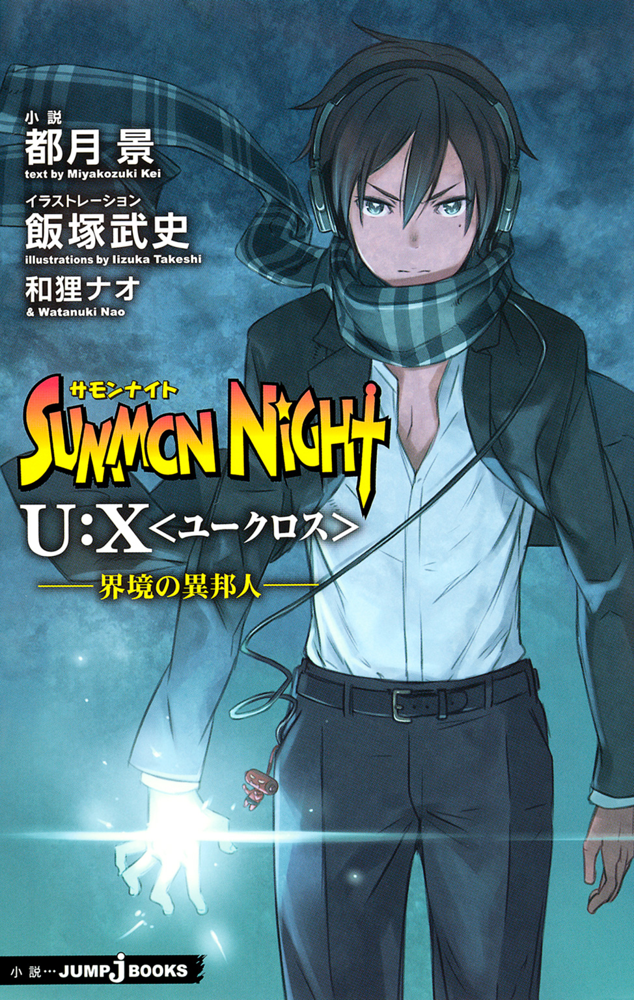
この本は縦書きでレイアウトされています。
また、ご覧になる機種により、表示の差が認められることがあります。
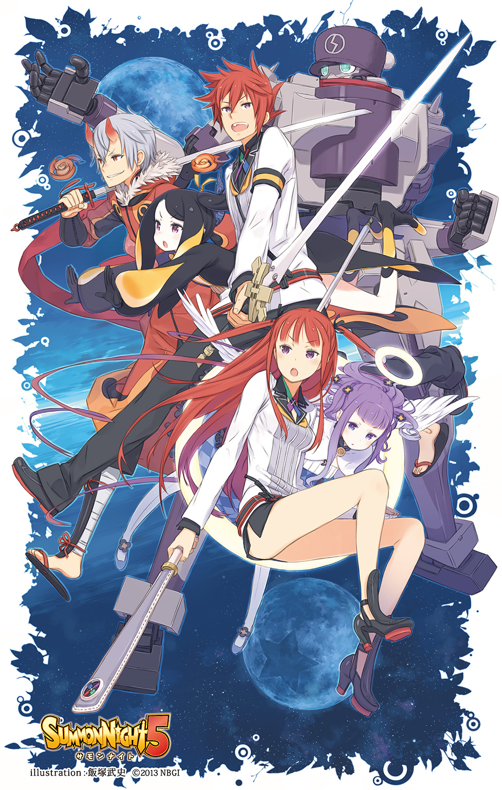
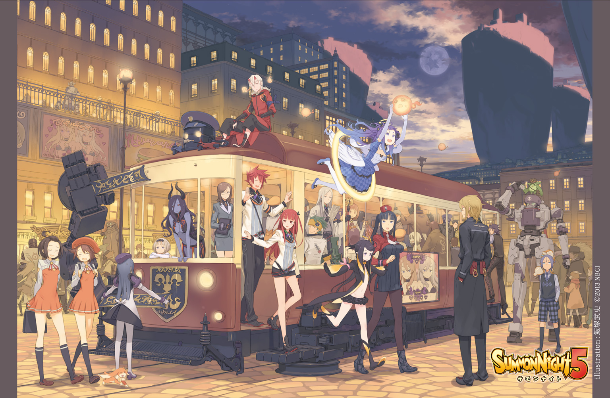
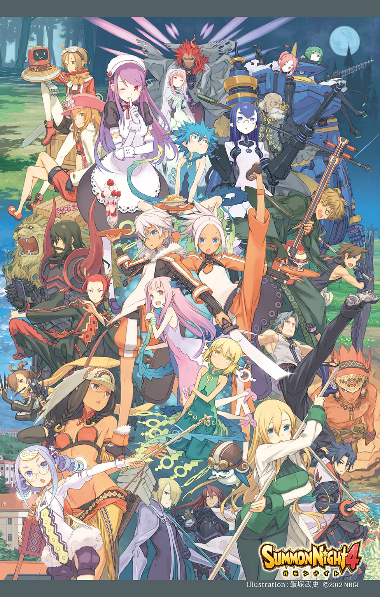
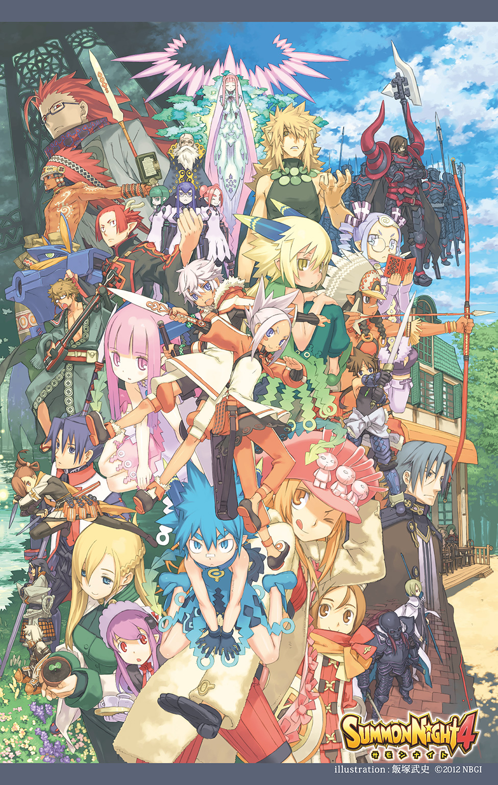
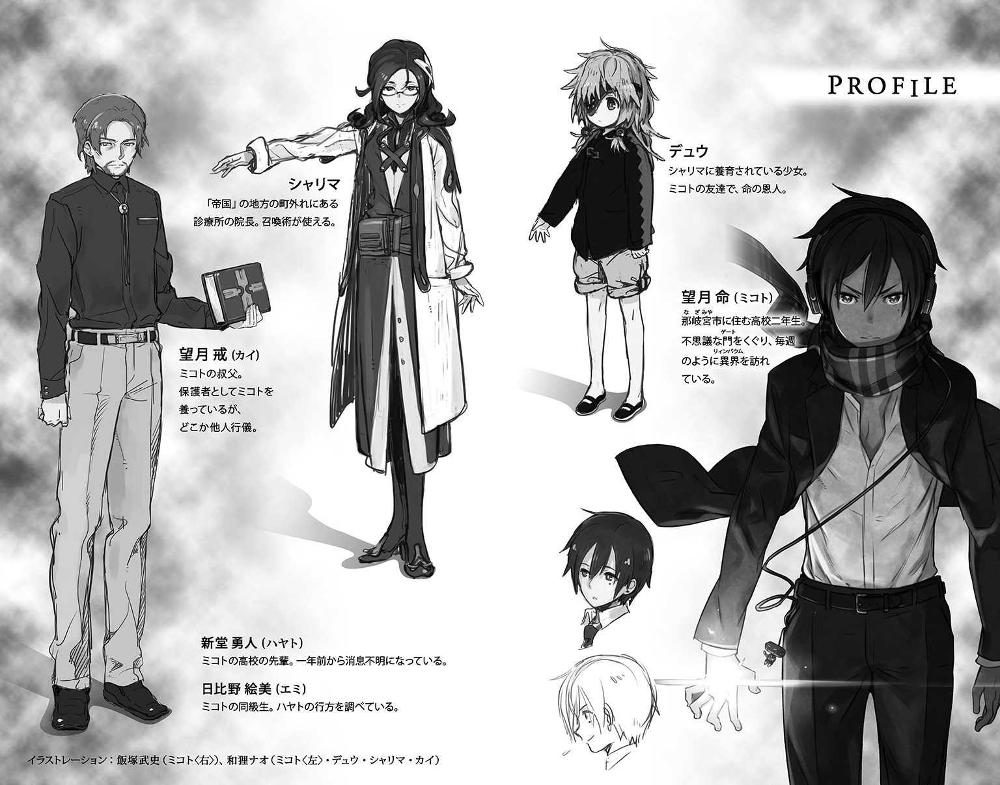
この小説は、シミュレーションＲＰＧ『サモンナイト５』（発売・バンダイナムコゲームス）の「新生リィンバウム」が形成される以前の時代を舞台にしたオリジナルストーリーです。
この作品はフィクションです。
実在の人物・団体・事件などにはいっさい関係ありません。
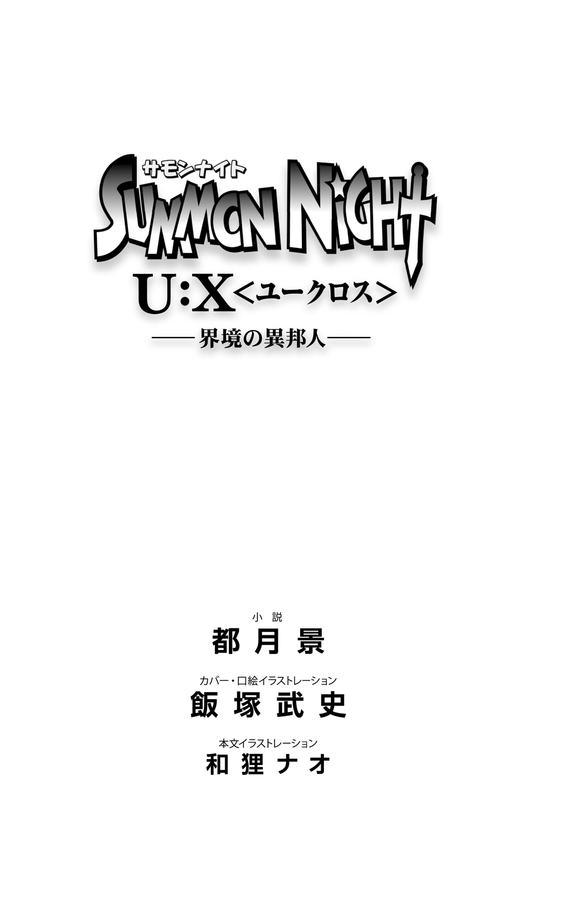
異世界リィンバウム。
ある者たちは【魂の楽園】と呼び、またある者たちは【魂の牢獄】と呼ぶ。
機界ロレイラル、鬼妖界シルターン、霊界サプレス、幻獣界メイトルパ。
リィンバウムを取り囲むように存在する、まるで様相の異なる四つの世界の雛形であり、それらをつなぐ【転生の輪】の中核としての役割を担う。全ての始まりであると同時に源であり、一番最初に形を成した世界。
これらを生じさせたのは【始源のエルゴ】―――無限の力をもつ集合意識。
己以外はなにも存在せぬ虚無の中へと、エルゴは自身を分かつことによって様々なものを創造していった。天地万象のみならず、それらの成り立ちを根本から支える概念すらも、エルゴの意志により作りあげられたものなのだと、旧き書物にはそう記されている。
エルゴの願ったこと―――それは、分かたれた世界において生じてゆく様々な魂たちが、独自の意志をもって成長し、いつか自身と同じ精神の輝きを放ち、対話できる存在となること。
その願いをかなえるため、創世を終えた【始源のエルゴ】は、自らの作りあげた世界に直接的に干渉することを避けた。
リィンバウムをとりまく四つの世界それぞれを、己の分身たる【界のエルゴ】たちに委ねると、自らもまたリィンバウムの【界のエルゴ】として、その行く末を見守ってゆくことを望んだのである。
だが、独自の意志をもった魂たちはそれゆえにぶつかりあい、その中で奪いあうことを知ってしまう。その対象は己の世界のみならず、ついには他の世界に対してさえ向けられるようになっていった。そして界と界との争いは、ついに【魂の楽園】にまで及ぶ。
この非常事態に、ついに【界のエルゴ】たちは、干渉することを決意した。
魂の核である【マナ】に干渉することによって、対象を帰属する世界に強制退去させるという新たな魔術概念―――【送還術】を、異界からの侵略に対する守りの手段として、争いとは無縁だったリィンバウムの住人たちに与えたのである。
が、それこそが―――【楽園】が【牢獄】と化す契機となったのだ。
人々は【送還術】の原理を紐解くことにより、そこから【召喚術】という全く別種の力を手に入れる。それは異界の存在の【マナ】に干渉することで、対象の力を限界以上にまで高めたり、必要に応じて瞬時に呼び寄せることすらできるという技法であった。
召喚する側と召喚される側―――相互の同意にもとづく【誓約】を経て初めて成立するこの術は、あまりにも魅力的な可能性に満ちていた。
ゆえに、欲望をたやすく加速させてしまう毒酒でもあった。
より強大な力を労せず手に入れるために、心なき者たちは【誓約】の技法に強制力をもたせることで、一方的に相手を支配する手段を得てしまったのである。
当初こそ外道の所行として非難されたその技法は、だが日々激しさを増していく異世界からの侵攻への対抗手段、必要悪としてじわじわと浸透していくことになる。
皮肉にも侵攻が激化した原因は、あまりに強大すぎる力を手にしたリィンバウムの住人たちに対して、異界の者たちが恐れを覚えたがゆえのものであったのだが―――。
そして―――とある大悪魔との戦いを契機に、異界の友人たちの自発的な支援を完全に失って以後は、苦痛によって服従を強いるこの【誓約】こそが、唯一の【召喚術】と成り代わってしまったのである。
さらに【召喚術】の使い手たる【召喚師】たちは、それぞれ独自に得た【誓約】を秘伝とし、特権的な力として用いるようになっていく。召喚する側と召喚される側―――協力することで互いに魂を高め合っていくという当初の【召喚術】の理念は、彼らが己の地位を正当化していく過程で意図的に抹消され、忘却の彼方に捨て去られてしまったのだった。
歪んでしまった【召喚術】によってもたらされた、蹂躙する側とされる側の逆転現象。
【召喚獣】として従属を強いられる側となった異界の者たちは、当然、激怒した。
傷つけあうことで生じた溝が、もはや当事者たちではけして埋められぬ規模に達した時。
【界のエルゴ】たちは再び、より直接的な形で干渉を行った。
【誓約者】―――本来あるべき友誼にもとづく【誓約】によって、異界の友たちの助力を得た【楽園】の救世主―――後に王国を築きあげた勇者である。
【エルゴの王】の異名のとおり、彼にその力を与えたのは【界のエルゴ】たちだった。
エルゴらは、彼に代行者としてこの事態の収拾を命じたのだ。
そのための手段として与えたのは、各々の分身たる【エルゴの欠片】だった。
それぞれが庇護する世界に属する存在への影響力を部分的に貸与することで、異界の者に対する圧倒的優位性をもたせるとともに、可能性と多様性に満ちた本来の【召喚術】の力によって、我欲に凝り固まってしまった召喚師たちを一掃させるために。
だが、そんな彼をもってしてもなお、世界に完全な平穏をもたらすことは不可能だった。
終わりなき戦いの果てに【誓約者】が選んだ答えは、リィンバウム全体に強力な結界を張り巡らすことにより、外部からの干渉を断ち切って、強引に戦火を消すことであった。
ともあれ、こうしてようやくリィンバウムに平穏がもたらされたのである。
だがし・・・そ・はか・・め・も・でし・・・った・・だ。
王亡・・・目に・・・形・・れは・・・う・・ている。
かつ・・・私が危・し・・・忠・・・・・は、やはり・憂で・・・かっ・・・。
・・・・・・・・・・・・・・・・・・・・・・・・・・・・・・
・・・・・・・・・・・・・・・・・・・
・・・・・・・・・・・
※以降の文面、損壊が激しくついに解読不能と判断。興味深い資料だけに落胆は大きい。
せっかくのお嬢さまのご厚意に応えられそうにない自分が不甲斐なくて情けない。
なにか......なにか方法はないのだろうか......ああ、真実を......私は知りたい！！！！
【セルボルト家の書生・オルドレイクの研究ノートより】
断章 ～Beginning of The End～
月はただ、皓々と大地を照らす。
万物が宿す魔力元素にして、魂の存在を維持する滋蜜たるマナ。
万物にとって必要不可欠な天からの恵みを、惜しげもなく降り注いでゆく。
山に、海に、森に、砂漠に、凍土に、都市に、町に、村に、廃墟に。
そこに区別はなく、また差別もない。
月はただ、皓々と大地を照らす。
そう―――たとえ、それを享受する対象の全てが存在しなくなってしまったとしても。
◆
忘れられた島―――かつて【無色の派閥】と呼ばれた召喚師の集団が、恐るべき計画の実験場としてつくりあげた絶海の孤島。
そこに暮らす者たちは皆、召喚術によってこの地に喚び出された召喚獣の末裔であり、それゆえに召喚術を用いる人間たちを好ましく思ってはいなかった。
永い時を経て、ひとりの若者がこの島にやってくるまでは。
（それが今、こうやって力を合わせて、危機に立ち向かおうとしているんだものな）
そんな島の真上に静止した、浮遊城の空中庭園。
その最奥のテラスにたたずんで、レックスはひとり思いを巡らせていた。
あまりに多くの出来事が立て続けに起こりすぎて、全てをきちんと受け止められたとは、正直思えない。できなかったこと、守れなかったものを数えれば、悔いはいくらでもある。
「それでも、なんとか―――ぎりぎりのところで、俺たちは踏みとどまることができた」
誤解から生じた諍いもあったけれど、今はこうしてひとつところに揃って、自分たちにできることを全力で果たそうとしているのだ。
だからきっと―――まだ希望は残っている。
（立ち向かうために、あえてこの島に集ったみんなが、それぞれに力を合わせたなら......）
守りきれるはずだと彼は信じている。最後まで、信じたいと願っている。
それが【抜剣者】―――救い、切り開く者という意味をもつ異名で呼ばれる勇者・レックスにとって、前に進むための最大の力となるはずだから。
「勇者、か......」
そう呼ばれることには、今でもまだ慣れていない。
過去には偽りの英雄として祭りあげられることに耐えきれず、帝国軍を退役したこともある自分なのだ。できることならこの島で、子供たちの先生として暮らしていたかった。
「けど、そうも言ってられない、か......」
混乱しきったこの世界の現状を打開するためには、旗印となるものが必要だったのだ。
人々の希望の拠り所となり、その想いに報いるだけの力をもつ者たちが。
それが勇者なのだと説き伏せられて、彼らはあえて表舞台に立つことを決意した。
そう、レックスだけではない。
彼よりも年若き者たちが、彼と同等の荷を背負って、立ち向かおうとしている。
そのひとりが今、螺旋階段をのぼって、彼のところにやってこようとしていた。
◆
「ありゃ？」
「やあ、君もここに来たのかい」
誰もいないと思ってやってきた場所に先客がいたことに、マグナはちょっとだけ驚いた。
マグナ・クレスメント―――【蒼の派閥】に属する召喚師にして【調律者】の血族の末裔。彼もまたレックスと同じく、勇者と呼ばれる若者だった。
祖先の過ちによって世界に多くの疵痕を残し、罪人として監視され、迫害され続けてきた境遇。
自身の意図せぬところで決められた過酷な運命に、だが彼は屈することなく、受け入れた上で乗り越えてみせた。因果を律する【調律者】ではなく、因果を超える【超律者】として、因縁深き大悪魔を倒し、平和を勝ち取った。
もっとも―――普段の彼は、のんきでお気楽そうな若者にしか見えないのだけれど。
「びっくりしたよ。てっきり先生は、今夜は島のほうで過ごすものだと思ってたからさ」
照れ笑いを浮かべるマグナに、レックスもまた穏やかに微笑み返す。
「あはははは。そんなことしたら、それこそ夜通しの大騒ぎになっちゃうよ。君もよーく知ってるだろう？ この島のみんなは宴会が大好きだってこと」
「うん、知ってる。最初にこの島に調査に来た時から、ずーっとそうだったもんなあ」
【派閥】の調査任務で、マグナは過去にこの島を訪れたことがある。
当時はまだ外からの来訪者に慣れていなかった島の住人たち。互いの思いこみと勘違いのせいで、最初は彼らと争うことになってしまったけれど。
誤解が解けて以後は、マグナたち一行を歓迎し、温かくもてなしてくれた。
「俺が護人のみんなを連れて、島を留守にしていた時のことだね」
突如として変調をきたした仲間たちを救う手段をもとめて、レックスはヤードの縁故を頼り、帝都ウルゴーラにて【無色の派閥】の関係者と接触しようとした。
が、その過程で裏社会のいざこざに巻きこまれてしまった挙げ句、目的を達せぬままに島に帰らねばならなくなった。
ちょうど島からの帰途にあったマグナたちの船と出くわしたのは、奇跡的な偶然だろう。
「今にして思うとさ、あれはパッフェルさんの想いが引き起こした必然だったのかもな」
「ああ、そうかもしれないな。まさか彼女と再会できるなんて、俺も本当に驚いた」
過去と現在、ふたつの顔をもつ彼女の導きが縁となり、二人はこうして出会ったのだ。
マグナは月を見上げ、過ぎ去っていった懐かしい日々を思い返す。
「なんか......すっごく遠くまできちゃった気がするよ。ついこの間までは、ネスに怒られたり、アメルと一緒に畑を耕したりしてさ、のんびりした毎日を過ごしてたのになあ」
幼い頃から側にいてくれた兄弟子と、今度こそ最後まで幸せにすると誓った少女。
三人でずっと、あの森の家で暮らしていけると思っていたのに。
「俺たちが帰る家は......なくなっちまった......」
うつむき唇を嚙んだマグナの肩に、レックスはいたわるように手をかけた。
そして、苦々しげにつぶやく。
「戦争ってものは始まってしまったら最後、容赦なく、際限なく加速していくものなんだ」
ましてそれが、延々と折り重なった憎しみに起因するものであるならば尚更だろう。
「旧王国も、聖王国も―――最初に仕掛けた帝国でさえ、幾つもの都市を喪った」
陥落させられたのではない。文字どおり、存在ごと消滅させられたのだ。
リィンバウム自体の完全抹消を目的とする、複数の巨大な意志たちの介入によって。
◆
浮遊城の最奥にある部屋のひとつに、二人の姿はあった。
「......落ち着いた？」
泣きじゃくる声がやんで、しばらく間をおいてから、少女はそっと少年に声をかけた。
「ああ......。悪かったな、エニシア。みっともないとこ......見せちまってさ」
彼女の膝から顔を上げて、ライは泣きはらした目で、照れくさそうに言った。
ううん、と半妖精の少女はかぶりを振る。
「みっともないとこ見せっぱなしなのは、いつも私のほうだもの。埋め合わせにしたってこれでも全然足りないくらいだよ」
それに―――と、エニシアは睫毛を伏せて呟いた。
「大事な人を亡くしてしまった時に流れる涙はみっともないものじゃないんだ、って私に教えてくれたのは......ライじゃない」
「ははっ、そっか......。そんな偉そうなこと言ってたか、俺は」
ぐしぐしと手の甲で涙の跡を拭って、ライは立ち上がる。
「実際に自分で味わってみないとわかんねーもんだな。このキツさは」
目の前の少女は、もう何度もそれを乗り越えてきたのだ。
本当は自分なんかより、ずっと強い存在なのかもしれない。
ライとエニシア―――二人は共に、古き妖精と人間の間に生まれた【響界種】だった。その特殊な出自と異能の力によって、二人はそれぞれ多くの苦難を味わうことになった。二人は対立する者として出会い、けれど、わかりあうことができた。
召喚獣と人間の間に存在する、簡単には埋めることのできない根深い憎悪の溝。
葛藤の末に、ライはあえてその狭間に立って、双方の仲立ちをしようと決意した。
【越響者】―――彼の手助けで救われた召喚獣たちは、勇敢なライを讃えて、感謝をこめてそう呼ぶようになった。
旧き言葉で「全てを越えて響き渡る者」という意味なのだという。
ライ自身はそう呼ばれることを嫌って、ムキになって怒るのだけれども。
「託されたんだもんな、俺は......」
握りしめていたボロボロの髪結い紐を、じっと見つめる。
それが今となっては、あの人が確かに存在していたという唯一無二の証。
だからこそ―――と少年は誓う。
（止めてみせるぜ、絶対に。同じ結末をたどることだけは、絶対にさせねえ！）
立ち上がったライは、もう落ちこんだりはしない。
「顔洗ってきたらさ、とびっきりの朝飯を作っとくぜ。なんせ一発勝負の作戦なんだ。うまいもんをしっかり食ってさ、みんなにもマジがんばってもらわないとな」
「うん、私も明日はがんばるからっ！」
「おう！」
手を振って応え、ライは彼女の居室から廊下へと出て行った。
自動で扉が閉まるまでエニシアはその背中を見送ってから、深呼吸をひとつして。
振り返った彼女は、そのあどけない表情に断固たる決意をみなぎらせていた。
（力を貸して欲しいなんてワガママは言わないよ。だけど、お母さん―――見ていてね）
最後の希望をつなぐ架け橋となるべく、今ここに集った勇者たち。
そんな彼らを妨害から守り、無傷のまま決戦の地まで送り届けることこそが。
この【呼吸する城】を姫としてまとめる、彼女の責務であった。
◆
「意地の悪い二択ですよね。本当に......」
楼閣と楼閣をつなぐ、吹き抜けの渡り廊下。
着物めいた赤い衣装に黒髪の少女が、深いため息とともに愚痴をこぼした。
そうだね、と向かい側の柱にもたれていた少年がうなずく。
女生徒たちから『深崎スマイル』と称される、常に柔和な微笑みが今はない。
むしろ苦悩のせいで険が増し、凶暴じみてさえ見える。
身につけた仰々しい戦闘装束と、腰に差した二本の刀のせいで、見るからに物騒だ。
「どちらかひとつを選べなんて、軽々しく出せる答えじゃない」
「そーだよ！ はっきり言ってさ、無茶ぶりなんてレベルじゃないし！ 私たちってば、ちょっと前まではごく普通の学生でしかなかったってのに超ヘビーすぎだよっ!?」
ぐっと両の拳を固めてそう力説したのは、ショートカットの女の子だ。
セーラーカラーつきの上着にミニのスカート。
先の二人と比べればずっと軽装ではあるが、その腰に無骨でちょっぴり不気味な短剣がぶら下がってるあたり、普通の女学生という本人の主張はやはり受け入れがたかろう。
「だとしても......夜明けまでには答えを出さなくちゃいけないんだ」
最後の一人が発したその重いつぶやきに、はっとして残りの三人が視線を向ける。
片膝を立てて廊下に座っているのは、疲れきった表情の少年。
今では彼らよりも年上になってしまった、かつての同級生だ。
ファーつきの上着もジーンズも、あちこち切り裂かれ、ほつれ、返り血にまみれて。
ここに至るまでの日々の過酷さをはっきりと物語っていた。
そう、彼女たちはまだいい。
突きつけられた選択は同じものでも、この少年とはその重さが違いすぎる。
この場にいる誰よりも、関わりの深すぎる彼が一番つらいのだ。
なぜなら、彼は当代の【誓約者】―――【エルゴの王】として、この世界の危機を救う力を与えられた者なのだから。
全ては偶然だったのか、それとも必然だったのか。
あれから時を経た今となっては、ハヤト自身にもわからない。
ただ彼は、召喚主たちの本来の意図とは違った形で、この世界に召喚されてしまった。
その際に身に宿した力で、世界を破滅に導く邪悪な存在に立ち向かうことになった。
【誓約者】と呼ばれるようになったのは、あくまで結果でしかない。
彼はただこの世界を、自分に優しくしてくれた人たちを守りたかっただけなのだ。
帰ることができた元の世界に別れを告げて、この世界で暮らす覚悟を両親に伝えてきたのも、大切な仲間たちと一緒に、二代目としての務めを果たそうと決意したからだった。なのに―――。
「ひとつきりしか選べないなんて、そんなのは理不尽すぎるだろうッ!?」
理性ではわかっていても、割り切ることなんてできない。
あまりにも深い絶望に満ちた怒号は、そのまま彼の魂のあげる悲鳴でもあった。
「新堂くん......」
樋口綾―――アヤは、やるせなさの滲む声でそう呼びかけて。
「ハヤト......」
橋本夏美―――ナツミは、自分のデリカシーのなさに唇を嚙んだ。
「ああ、そのとおりだ」
唯一、深崎藤矢―――トウヤだけが、真っ向からそれを肯定する。
「夜が明ければ、この城は決戦の地に向かって飛び立つ。選んだ答えによっては、僕たちは立ち去らなきゃいけない。いや、むしろその道を選んだ場合は―――」
皆まで言わせず、ハヤトは立ち上がると、手にしていた長剣を鞘から引き抜いた。
「ちょっと、なんのつもり!?」
引きつった声で、ナツミが問いかける。
無色透明で、ともすればガラス細工にも思えるその剣が、使い方次第では世界を破滅に導きかねない力を秘めていることを今の彼女たちは知っている。
そんな武器の切っ先を向けられてもなお、トウヤは冷静だった。
「使い手の心が曇ったままじゃ、どちらを選んだところで、僕ひとりすら斬れないよ」
無論、彼にその意志がないことは承知したうえで。
「......だからってさあ、平然としすぎだろ。まったく......」
すさんでいたハヤトの表情が、ほんの少しだけほころんだ。
釣られるようにして、トウヤの口元からも笑みがこぼれる。
「あーもう！ あーもう！ 男子って、よくわからーんっ！」
「あはははは」
ぶーたれ顔になったナツミの肩を、ぽんぽんとなだめるようにアヤが叩く。
本当に、本当に久しぶりに戻ってきた、彼ら本来のあるべき姿。
「選べないよな、正直なところ」
「ああ、選べない」
「選べってのが無茶なんだってば」
「でしたら、いっそ......」
そして、一番おとなしそうな彼女の口から飛び出した、とんでもない爆弾発言に―――。
他の面々はあんぐりと口を開けて、しばらくしてから、大笑いしたのであった。
◆
今まさに、夜が明ける。
月の光はかそけく、蒼空に溶けて消え去り、代わって昇る太陽が世界を照らすだろう。
焼かれ、砕かれ、無残極まる姿になり果ててしまった聖地のなれの果てを。
様々な色の血と屍に埋め尽くされ、憎悪と悲しみの声に抱まれた理想郷の残骸を。
それらは、どんなものにも必ず訪れる終焉の兆しなのかもしれない。
「でも、それでもさ......」
向かい風の中に立ち、少年は呟く。
「終わりにだって、その先はあるはずなんだ」
たとえ今日、この世界が滅んでしまったとしても。
形あるもの全てが、欠片も残さず消し去られてしまったとしても。
「想いの力は―――絶対に消えたりしない」
握った拳のその内側に、紺瑠璃の光が灯もる。
深く濃く、それでいて完全な闇には至らぬ色。
曖昧な輝きを放つそれは、暁闇の空と同じだった。
目を閉じて、少年は心を澄ます。
よるべなきもの、かそけきもの、だからこそ―――純粋に響く声。
それを受け止めてきたからこそ、彼は今ここにいる。
確信をもって断言できるのだ。
（決着をつけよう......そして、その先にあるものへと向かうんだ......）
まぶたに朝焼けの光を感じとり、少年は閉じていた目を開いた。
◆
後に【狂界戦争】の名で呼ばれる、全ての世界を破滅に巻きこんだ愚かなる戦い。
あえて秘されてきたその始まりから終わりまでの全てを。
みんなとの約束を破って、この手帳にだけは記しておこうと思う。
もしも俺がいなくなったとしても、彼のことを誰かが覚えていてくれるように。
これを手にした誰かが、彼の願いを知り、少しでもその想いを汲んでくれるように。
ためらいはある。不安もある。
受け止める者にもそれ相応の覚悟がなければ、真実は何よりも残酷な兇刃と化すのだから。
だから俺は、今これを目にしている君にあえて問いかけたい。
それだけの覚悟は―――あるかい？
１ 週末の異邦人 ～Stranger in Reienbaum～
三連休前の終業のホームルームは、いつもより少しだけ連絡事項が多かった。
日直の号令に合わせて挨拶を済ませると、望月命はすぐにサイドバッグに手を伸ばす。取り出したのはヘッドフォン。ピンジャックをつまみ、常に制服のズボンのポケットの中に忍ばせてあるポータブルオーディオプレイヤーに接続。
これを頭に装着すれば、とりあえず帰宅準備の完了となる。
が、今日はその寸前で邪魔が入った。
「あのね、ミコトくん。ちょっと頼みがあるんだけども......いいかなあ？」
顔を上げたミコトの前に立っていたのは、同じクラスの女生徒だ。
たしか、エミ―――日比野絵美だったか。
他人に無関心なミコトにしては珍しくその名を記憶に留めていたのは、二年続けて同じクラスなのもさることながら、折々の学校行事に彼女が積極的に参加していたからだ。
よく言えばムードメイカー。悪く言えば―――やかましい。
ミコトのように孤独を好む性質からすれば、辟易してしまう類の存在だった。
「......なに？」
無愛想ながらも応じたのは、彼女の印象が以前とは少し違っていたからだ。
笑顔ではある。だが、今までのそれとは違い、そこに屈託がにじみ出ている気がした。
何か思いつめているような。それも、もう長いことずっと。
（そういえば、二年に進級してからの彼女は、去年よりずっと静かだった気もするな）
いちいち観察してるわけではないので定かではないが、席決め、委員決めの時にも、彼女のあの元気すぎる声を聞いた記憶がない。
とはいえ、何かあったのかと聞くには、あまりに時間が経過しすぎていた。
それだけ自分が周囲に無関心だったことを暴露するようでバツが悪い。
だから、ミコトはそのまま黙って彼女の話に耳を傾けた。
「ミコト君の家ってたしか北町のほうでしょ？ 那岐宮スカイブレードとかがある」
那岐宮スカイブレード―――仰々しい名前だが、要は展望台が併設された電波塔のことだ。地元出身の有名デザイナーが手がけたというその外観は、天に向かって切っ先を突きあげる西洋剣のようで、公募の結果、ずばりそのままの名前がつけられることになった。
ランドマークとしてそこそこ知名度はあるらしく、町興しにひと役買っているらしい。
「そうだけど、すぐ近くってわけじゃないよ。俺の家は、山裾にある古い団地だから」
自転車通学の途中に、横目で遠景に眺めるくらいだ。
「あ、スカイブレードに用事があるんじゃないんだよ。ただ、私の家は南側にあるからね。北町のほうとかよく知らなくってさ。だから、その......ね......」
なにやらためらいを見せつつも、やがて彼女は思いきって、背中に隠していたものをミコトの前に差し出した。
「......チラシ？」
それも、尋ね人の。束の分厚さからして百枚以上はゆうにあるだろう。
「お願い！ これを置いてもらえそうなお店とか、心当たりがあったら教えて欲しいの」
「いや......それ以前に、この人は誰？」
自分たちと同じ那岐宮中央高校の生徒なのは制服でわかる。
しかし、彼女とこのチラシの写真―――どこか幼さの残る顔立ちの男子との関係が皆目わからない。
「あ、そっか......ゴメン。ミコト君は帰宅部だったから、先輩と接点ありっこないよね」
「先輩って......日比野さんがファンだって、ずっと公言してた、あのバスケ部の？」
「覚えててくれたの!?」
ぱっと顔を輝かせて、エミは身を乗り出してきた。
その勢いと、ふんわり舞った女の子っぽい香りに、ミコトは戸惑った。
「い、いや......。女子同士で話しているのがたまに聞こえてきててさ。ごめん、盗み聞きみたいで」
「あははっ。私ってば、やかましいからね」
でもうれしいな、とエミはしみじみと呟いた。
「もう、みんな先輩がいたこと自体を忘れてちゃってるもん。行方不明になってもうすぐ一年になっちゃうけど......なんだか、ひどいよ......」
言われてようやく、ミコトも思い出す。
年の瀬が近づき、寒さが日々ごとに増しつつある、去年の今頃。
下校時に二年生の男子生徒が行方不明になるという事件があった。
生徒の名は新堂勇人―――バスケ部のホープで、エミが憧れていた先輩だった。
警察の必死の捜査にもかかわらず、未だその行方は知れない。
「もしかして、あれからずっと君は新堂先輩のことを？」
こくん、と彼女はうなずいた。
「だって......先輩と最後にお話ししたのって、私だったから......」
責任を感じているのだろう。だから、こうして自発的に彼のことを捜しているのだ。
「ニュース番組の特集でも言ってたでしょ？ 那岐宮市では、こういう失踪事件が増えているって！ ここ一、二年の間に、先輩みたいな学生だけでも、十人近く消えてるって！」
神隠しの街・那岐宮―――確かにこのところそんな煽り文句を、新聞の見出しやテレビのテロップで見た気がする。北町にある私立高校でも最近、女生徒が行方知れずになったらしいというようなことを、同居している叔父が言っていたような気もする。
おぼろげなその記憶を口にすると、エミは大きくうなずいた。
「そう！ だから私、北町のほうでも先輩のことを捜したいの！」
言わんとすることはわかる。
似たような事件が起きたのなら、調べれば、何か関連することが見つかるかもしれない。
それを手がかりにすれば、先輩の行方をたどることができるかもしれない。
エミはそう期待して、いてもたってもいられず、ミコトのことを頼ったのだろう。
だが―――それは期待外れというものだと、彼自身が一番よく知っている。
「悪いけど......俺、地元の人たちと全然交流とかないんだよ。俺はもともと余所から来たらしいし」
歯切れが悪くなるのは、自分でもそうだという確証がないからだ。
「そう、なんだ......」
思ったとおり、落胆する彼女。
しかし、やはりあきらめきれないのだろう。
「じゃあ、せめて案内だけでも！ チラシを置いてもらえるかどうかは、私が自分で交渉するから、だから......っ!!」
「いや、だからそれは......その......」
困り果てたミコトを救ったのは、大股で教室に入ってきた男子生徒だった。
「やめろって、エミ。ほら、望月のヤツも困ってるだろ？」
たしなめながら、ミコトとエミの間に割って入る。
「カツヤは黙っててよ！」
「見かねたから、わざわざ口を出してるんだって！」
厳しい口調でそうたしなめてから、彼はミコトにすまなさそうな顔を向けた。
「悪いな、望月。こいつ、昔っから思いつめると無茶苦茶やらかすんだよ」
「あ、ああ......。ええと、西郷だっけ？」
覚えててくれたか、と男子生徒は目を細めて笑った。
西郷克也―――エミと同じく、一年生の時のクラスメイトだ。
そういえば、二人は幼馴染みだと聞いた記憶がある。
「だって......っ、だ、だってぇ......っ」
叱られた彼女はうつむいて、なんとぽろぽろ涙をこぼしはじめていた。
「お前の真剣さはわかってるよ。だけど、強引に周りを巻きこんじゃダメだ」
「うん......うん......っ、ゴメン、ごめんねぇ......っ」
カツヤが差し出したくしゃくしゃのハンカチで、エミは涙を拭う。
「ミコトくんも、ゴメン。おかしな頼み事しちゃって......」
「いいよ、別に。気にしてないから」
そう言ってから、ミコトは机の上に置かれたチラシを数枚、手に取った。
「家族が外回りの仕事とかもしてるらしいから。一応、ダメもとで頼んでみるよ」
「ありがとう！」
「悪いな、望月。そのうちジュースでも奢るからさ」
「じゃ、俺―――もう、帰るから」
鞄とヘッドフォンを摑むと、逃げるようにして、ミコトは教室から出たのであった。
◆
廊下に出たミコトは、すぐにヘッドフォンを装着した。
下校する他の生徒らのざわめきが遠のいて、思わずほっと息をつく。
ポケットに手を突っこんで、再生ボタンをオンにする。
聞こえてきたのは、ポップスでもロックでもない。
北欧系の民族音楽をベースにした、俗にいうケルト音楽であった。
自分がそうした音楽を好むようになった理由は、彼自身にもよくわかっていない。
ただ、電子加工されたバグパイプやハープ、そうした古典楽器の音色や旋律を聞くと、奇妙なやすらぎめいたものを感じるのだ。
自分と外界との間にあるズレや溝を満たし、ぎくしゃくとした不快感を減じてくれる。
そう―――ミコトにとって、世界とは常に違和感に満ちたものであった。
（そもそも、俺って何者なんだろう......？）
自転車をこぎながら、ミコトはもう何度も繰り返してきた自問を、また始める。
（那岐宮中央高校に通う二年生。叔父にあたる望月戒さんとふたりで、北町の公営住宅団地で暮らしてる―――）
それが現実であり事実なのに、だが、どうしてもミコトはそれを受け入れられない。
何かが違っているような気がして、たまらなく不快なのだ。
原因はなんとなく、ミコトにも察しがついている。
他人による伝聞でしか、自身の過去を知らないからだ。
幼い頃の思い出というものを、彼は持っていないのである。
母のことも、父のことも、まるで覚えていない。
はっきりと思い出せる記憶は、小学校にあがって間もなくあたりからだ。
その時にはもうこの那岐宮という町で、叔父にあたる人と一緒に暮らしていた。
誰でも幼い頃の記憶には欠落や齟齬が多いものだ。
大事なことを忘れてしまっている反面、どうでもいいことをやけに覚えていたり。
（でも、だからって......こんなにもすっぽりと抜け落ちてしまうものなのか？）
疑問に拍車をかけたのが、叔父の見せる態度だった。
基本無口なカイ叔父さんは、家族にまつわる話を尋ねられることを嫌っていた。
いや、むしろおびえているといったほうがいいのか。
そうした方向に話題が向かうと、仕事を理由に、そそくさと自室に逃げこんでしまう。
悲しさと苦さが入り交じった、なんともいえぬ表情を浮かべて。
幼かったミコトにも、それが叔父にとって触れられたくない話であることはわかった。
それに気づいた時からずっと、叔父にそうした疑問はぶつけられなくなっている。
成長していくにつれて、違和感は欠落感となり、劣等感と等しくなってきた。
自分は普通ではないのではないか。なにかいわくのある子供ではないのか。
せめて昔の写真の一枚でもあれば―――そう思いもしたが、彼が探せる範囲にそうした物はひとつたりとも見つけられなかった。
叔父の留守中にこっそりと部屋を探ったりもしたが、やはり結果は同じだった。
思いつめるあまり、入学願書と一緒に提出する戸籍資料をこっそり盗み見たこともある。
当然、そこには現実がそのまま事実として記されていた。
ミコトはカイの甥であり、彼の両親は異国での事故で他界している。
叔父が隠蔽しようとしてきたのは、まだ若い彼に両親の死という事実を伝えていいものかという迷い、あるいは自分自身にそれを告げるだけの勇気がなかっただけのこと。
それで納得できるはずだった。納得しなくてはならなかった。なのに―――。
（信じられないんだ......理屈ではわかっていても、俺には信じられない......）
厳然たる記録がそこにあるというのに、どうしても違和感が消し去れない。
気の迷いだと否定しようとするほど、むしろそれは募ってゆき、今の彼は自分をとりまく世界全てに対して、乖離めいたものを感じるようにまでなってしまっていた。
俺の居場所は―――ここじゃないのではないだろうか？
本当の俺はもっと何か別の存在で、今の状況こそが間違いなのではないだろうか？
（バカバカしい！ どう考えたって、おかしいのは俺のアタマのほうじゃないか！）
ネットで検索した結果を思い出してしまい、ミコトは顔を歪めた。
誇大妄想、パラノイア、パーソナリティ障害―――つまるところ、彼が普通ではないという指摘の数々だ。今の自分が抱えている疑問の裏付けにはなったとしても、ネガティブな要素を抽出して並べられてしまっては、そう素直に受け入れられるはずがない。
当然、医者にかかることも怖くてできやしない。
ミコトにとって救いだったのは、こうした情緒的不安というものは、彼くらいの歳の若者にはよくあることであり、時間が経てば自然と治まることも多いという記述を見つけられたことだった。深崎という小児科の医師がブログの中でさらっと書いていただけではあったが、不安を募らせていたミコトにとっては、ひとつの心の拠り所になった。
相談する形でメールを送って以来、深崎医師にはネットを介して、簡単なカウンセリングめいたことをしてもらっている。
音楽を聴くようになったきっかけも、彼のアドバイスのひとつに従ってみたからだった。
（癒やされるっていうレベルじゃなくて、なんだか依存みたいになっちまってるけどな）
苦笑混じりで済ませられるのは、きっとそれが薬物やお酒の類ではないからだろう。
お守りみたいなものだ、とミコト自身はそう結論づけている。
めいっぱいボリュームをあげて没入しなくても、耳元で微かに聞こえてさえいればいい。
自分をとりまく世界に対する違和感を、少しでも和らげてくれるフィルターであれば。
「それにさ......」
山際に見えてきた自宅のある団地棟。
そこから少し離れた高台にある公園らしき広場を見やって、ミコトは呟いた。
「今の俺には、もうひとつ、気持ちの支えがあるもんな......」
季節としてはちょっと早いかもしれない、彼の首に巻かれたマフラー。
心地良い布の肌触りと、ほんのりとまだ残っている異国めいた不思議な香り。
くすぐったげに笑ってから、ミコトは家に向かって、ペダルをこぐ足を速めた。
◆
「ただいま」
鍵を使って金属製の扉を開けると、ミコトは控えめな声で言った。
返事はない。が―――靴の様子からして、叔父は出かけてはいないようだ。
おそらく自室にこもって、仕事とやらをしているのだろう。
（なんの仕事なのかってのも、正直なところ、よくわからないんだけどさ......）
以前、留守中に家探しをした時に見た限りでは、なにやら翻訳めいたことをしているようではあった。見たこともない文字が並んでいるばかりで、まるっきり中身は理解できなかったけれど。
そうして自室にこもっていたかと思えば、不意に何日も家を空けることもある。
下手くそな字で書かれた置き手紙と、必要な分だけの食費の入った封筒を見つけて、ミコトは初めて叔父の不在を知るのが常だった。
小さい頃は寂しかったり不安だったりもしたが、今ではそれが当たり前になっている。
（なんだかんだいって、きちんと俺のことを養ってくれているのには感謝しなきゃダメだ）
形だけでもそう思わなくては、とても一緒に暮らしたりなんかできない。
キッチンのテーブルにいったん鞄と上着を置いてから、洗面所に行って手洗いとうがいをする。ついでに軽く顔を洗って、タオルを片手に戻ってくると。
「おかえり、ミコト」
いつの間に部屋から出てきたのか。予期せぬ叔父の出迎えに、ミコトは少し戸惑った。
望月戒―――戸籍上はミコトの叔父であり、保護者である。
が、ふたりの顔立ちはあまりにも似ていない。
そもそも叔父のほうは、どこか異国人めいたものを感じさせる風貌の持ち主なのだ。
顔の彫りが深くて、色素も薄い。
そうした点もまた、ミコトが自分の居場所に違和感を覚える要因となっているのだ。
本当に、この人と自分は血縁があるのだろうか―――と。
面と向かって聞くことなんて、到底できっこないのだけれども。
「ん......ただいま」
ぎこちなくそう応じて、ミコトは鞄と上着を手にとり、そのまま立ち去ろうとする。
それを呼び止めるでもなく、まるで独り言のように、叔父は言った。
「明日からの三連休もまるまる全部、部活とやらの泊まりこみなのか？」
「そうだよ。だから、カイ叔父さんは俺のことは気にせず、いつもどおりでいいからさ」
「そうか......なら、まあ......いいんだが......」
歯切れの悪い言葉に、ミコトは少しだけ苛立ちを感じる。
言いたいことを口にせず、言い淀むような物言いが、無性にカンに障るのだ。
（親子じゃなくても血縁者なんだろ!? だったら、遠慮しないで何だって言えばいいじゃないか......家族として、今までずっと暮らしてきてるんだからさぁ!?）
そう叫べたら、どれだけすっとすることか。
けれど、叔父を責めるだけの資格が自分にないことも、ミコトにはわかっている。
言いたいことを言えぬまま、びくびくしながら相手との距離を測っているのは、自分もまた同じなのだから。
ダイニングキッチンを足早に出て、ミコトは自室に避難する。
この連休のために用意していた着替え一式を詰めたスポーツバッグを手にした。
制服のまま出かけるのは、部活がらみの外泊だという噓を貫くためだ。
（でも、多分......叔父さんは気がついてるだろうな）
むしろ、気づかないほうがおかしい。
授業はともかく、課外活動にはまるで関心のなかったミコトが、休みのたびに泊まりがけで参加するほど熱心に、部活にいそしむわけがないのだ。
それ以前に体育系であれ文化系であれ、なにかしら活動のための道具が必要になって、出費も増えるはずである。なのにミコトは、そういったお金の無心を一度もしていないのだから。
普通の保護者だったら厳しく問いつめて、本当のことを白状させるに違いない。
それが家族というものであり、互いを思いやるということではないか。だが―――。
「............」
テーブルの上に置かれた一枚のお札は、不器用な叔父なりの甥への気遣い。
理性ではわかってはいても、ミコトの心は虚しさに苛まれた。
いってきます、とも言わずにマンションを出た。
思うようにならずに、拗ねて甘ったれている自分自身に、ひどく苛立ちながら。
伸びる坂道をスニーカーで蹴りつけて、ミコトは高台めざして走っていった。
◆
「はあっ、はっ、はぁ......っ」
目的地にたどり着いたミコトは、額に浮かんだ汗の珠を、手の甲で乱暴に拭いとった。
がむしゃらに走ったせいか、少しは気持ちも晴れてきている。
とはいえ、こんな気持ちのままであっち側に行くわけにはいかない。
出迎えてくれる彼女たちに対して、それではあまりにも失礼すぎる。
「......よしっ！」
息を整え、手櫛で髪を撫でつけ、ミコトは歩き出す。
高台にある公園。その一角にある天使をかたどった彫刻の像―――ではなく、その裏手に広がっている雑木林の中へと踏みこんでゆく。
（思えば、すごい偶然だったんだよな......）
やり場のない苛立ちを発散させるために、今日のようにここまで走ってきて。
それでもおさまりきらなくて、無性に大声が出したくなって。
駆けこんだ雑木林の中に、ミコトは見つけたのだ。
宙に浮かぶようにして、ぽっかりと口を開けている、不思議な光を放つ穴を。
それが界を隔てた門であることを、今の彼はもう知っている。
この向こう側にある世界が、こことはまるで違った場所であるということも。
何も知らず、何も信じられなかった彼が、初めて自分でつかみ取った現実。
彼だけが知っている、まるで夢のような、それでいて確固たる真実。
「さあ、行こう―――異界の楽園へ！」
週末限定の旅人は恐れることなく、その深淵へと広がる穴に向かって身を躍らせて。
界の狭間を飛び超えて、異界の地に向かうのであった。
◆
鼻先をつつく、こそばゆい感触によって、ミコトはようやく目を覚ました。
こっちの世界に来る時には、どうしても途中で気を失ってしまう。
どういう具合になっているのか確かめてやろうと毎回必死になって目をこらすのだが、ぐんぐんと浮遊していくような感覚のなか、徐々に強くなる光の眩しさに気が遠くなり、気づいた時にはもう到着しているといった次第なのだった。
「ん、んん......っ」
ぼやけた目をしばたたかせながら、ミコトは周囲の様子を確認した。
雑木林の中なのは違いないのだが、生えている種類がまるで異なっている。
そもそも、日差しが午前のものに変わってしまっているのだ。
間違いなく、ここはさっきまでの公園とは違う。
「んん......っ？」
再び、鼻先をつつかれた。
宙に向けていた視線を下方に転じると、そこにはむっつりとした女の子の顔があった。
「おはよ......ねぼすけミコト」
「ああ、おはよう......デュウ......」
木にもたれた格好で投げ出されていたミコトの膝の上に、いつの間にかちょこんと乗っかっていたのは、彼よりもずっと年下の少女だった。
あっちの世界でいえば、幼稚園に通い始める頃合いといったところだろうか。
無論、こちらの世界での尺度はまた別なのかもしれないが。
くすんだ銀色の髪にやせっぽちの身体。こうして乗っかられていても、ほとんど重みというものを感じない。それはデュウが置かれてきた境遇のせいなのだと、ミコトはもう知っている。彼女がその右半顔に、無骨な眼帯を装着している理由についても同様だ。
が、そんな些末なことは別にどうだっていいのだ。
大事なのは、ミコトにとって彼女は命の恩人であり、こちらの世界で初めてできた友人であるという事実だ。
「わざわざ、俺のことを迎えに来てくれたのかい？」
こくんとうなずき、デュウは言った。
「ミコトは、あぶなっかしいから。すぐ、まいごになるし」
「ははは......」
返す言葉がなくて、ミコトは苦笑した。
◆
実際、初めてこの世界にやってきた時は、わけのわからない状況に混乱しまくったのだ。
（異世界なんてものは空想の産物にしか過ぎないって、普通だったら思うもんなあ......）
とにかく人の姿を求めてさまよううちに、ミコトはとんでもないモノと出くわした。
ふたつの頭を持ち、口から火を吐く双獄猟犬―――知識云々ではなく、ミコトのいた世界では、こんな生物が存在すること自体があり得ない。
たちまち彼は恐慌を起こし、一目散に逃げ出した。
あっという間に追いつかれ、背中から無様に引き倒されてしまったのだが。
間近から顔に吹きつけてくる熱い息、開けた口にずらりと並んだ太い牙。
食われる―――そう覚悟した時、彼女が大きな声で叫んだのである。
おあずけ、と―――。
『あのコはあまえんぼだから、あそんでくれるあいてをみつけると、みさかいなしなの』
助け起こされながらそう説明されて、ミコトは今のように笑うしかなかった。
『わたしは、デュウ。おにいちゃん......なまえは？』
しばらく迷ってから、ミコトはフルネームで本名を名乗った。
危うく名字のほうを名前と勘違いされかけ、それでここは那岐宮ではないと確信した。
『ふぅん......きいたことない。なんだか、ふしぎな......なまえ。デュウには、ちょっとむつかしい。でも......シャリマだったら......なにかしってるかも。せんせい、だから』
『せんせい―――先生ってことか!?』
『みんなのケガなおす。びょうきもなおす。だから、せんせい』
つまり、医者だということらしい。
ワケがわからない状況の中、ようやく手がかりになりそうな情報を耳にしたミコトは、デュウに必死にお願いして、そのシャリマという人のところに連れて行ってもらったのだ。
あの日からもう、一か月近くが経過している。
◆
「いらっしゃい、ミコトくん」
デュウに手を引かれてきたミコトを出迎えてくれたのは、白衣姿の妙齢の女性だ。
彼女こそがシャリマ。デュウの保護者であり、この町外れにある診療所の女院長である。
「またお世話になります、シャリマさん」
深々と頭を下げて、ミコトは挨拶した。
学校や家での無愛想ぶりからは、とても想像できない変わりようだ。
まあ、それも無理からぬことだろう。
デュウがこの世界でのミコトの命の恩人であるとするならば、シャリマはこの世界でのミコトの恩師ともいえる存在なのだ。
出会ったのが彼女でなかったら―――遅かれ早かれ、やはりミコトは路頭に迷った挙げ句、野垂れ死んでいたに違いない。
その理由は彼女がただの普通の医者ではなく、ある特別な技術を身につけていたからだ。そちら方面の知識を持っていたからこそ、彼女は異なる世界からやってきたというミコトの話を信じ、帰るための手助けをしてくれたのだから。
【召喚師】―――【召喚術】と呼ばれる魔術の技法を駆使することにより、異界の存在たる【召喚獣】を自在に使役することができる、リィンバウムにしか存在しない職業。
それがシャリマの持つ、もうひとつの肩書きだった。
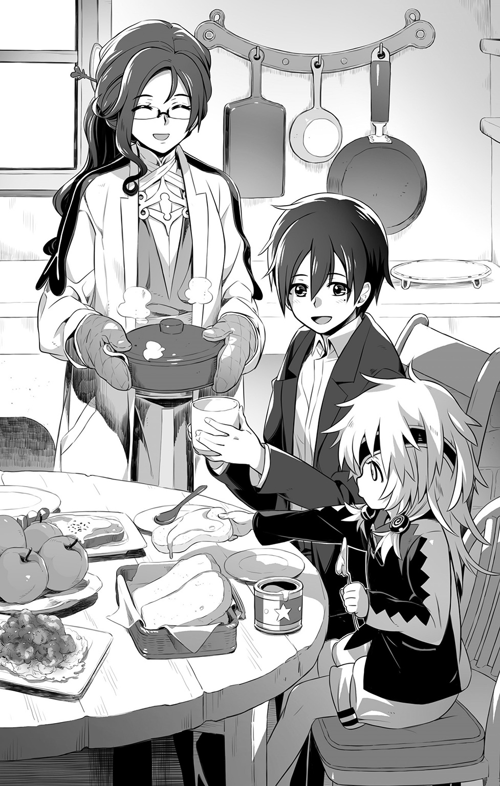
◆
『といっても、私にできることなんてたかが知れているわ。この【帝国】という国家じゃ【召喚術】は公に認められた技術だもの。【聖王国】や【旧王国】とは違って、学ぶ機会にさえ恵まれれば、ある程度のところまでは誰にでも習得できるものなのよ』
彼女の説明によれば、この世界には三つの国家勢力があって、互いに緊張状態を保ちながらも、今のところはさしたる争いもなく共栄しているのだという。
様々なもめ事で地域紛争が絶えないのは、ミコトが暮らす世界と同様らしいが。
ともあれ、ミコトが迷いこんだこの場所が【召喚術】に一番なじみの深い帝国領だったことは彼にとって幸いだった。これが聖王国であれば、彼の身柄は【派閥】と称する召喚師たちの匠合に預けられることになったであろうし、旧王国なら危険分子として、現場の判断で抹殺処分されていたかもしれなかったのだから。
『本当は帝国の法律でも【はぐれ召喚獣】―――特定の主人の管理下にない異世界の存在に、それと知りつつ関わったりしたら、刑罰の対象になってしまうんだけどね......』
なのに、シャリマはあえて、ミコトをかばってくれた。
理由は三つ。
最大の理由はまず、彼女が医者であったこと。困っていたり、弱っている相手を放っておくことは、職業的な矜持が許さなかったのだ。
ふたつめの理由は、ミコトをここに導いてくれたデュウの存在だった。
『この子にはいろいろと複雑な事情があってね、今は私が保護者として面倒を見ているの』
デュウがここに居着く前、とある戦火に見舞われた地で二人は出会ったのだという。
普通の方法では治しようのない、異界の魔術的な力によって、彼女は傷つけられていた。シャリマの技量では症状の悪化をとどめるのがやっとだった。それは凶悪な悪魔の呪い―――デュウの半顔を覆う眼帯は、その進行を抑えるための封印治療具だったのである。
『呪いの影響なのか、この子は他者の悪意や敵意には敏感なの。野生化した森の魔獣たちを手なづけられるのも、デュウのそうした事情がもたらした不思議な能力のひとつだと私は思っているわ』
そんな彼女が、助けてあげてほしいと頼んできたのである。
無下に断ることなど、シャリマにできるはずがなかった。
最後のひとつは、単純極まる知的好奇心。
『私だって、そりゃあ召喚師の端くれだもの。貴方のいた世界のこととか、是非ともお話を聞かせてほしいわ。もしかしたら、それが貴方を元の世界に送り返す方法を知る糸口になるかもしれないし......ね』
悪戯っぽく微笑んでみせた彼女のことを、ミコトは信じると決心した。
他に方法がなかったのも事実だが、こちらの拙い状況説明を根気よく聞き続けてくれたシャリマの誠実さと、話の間中ずっと、自分の手をぎゅっと握り続けていてくれたデュウの優しさが心に染みた。不安でたまらぬ異界の迷子にとって、それは大きな救いだった。
そして―――彼の選択は大正解だったのである。
◆
「まさか、翌朝にいきなり帰る方法が見つかっちゃうだなんて、驚きましたよ！」
ミコトの言葉に、私だってそうよ、とシャリマは笑う。
「貴方が倒れていた場所にたどり着いた途端、いきなり異界への門が開くだなんて、未だに信じられないもの」
どうやらその門は、ミコトの接近によってのみ反応して開くものらしい。
のみならず、今のところは使いたい放題―――こうして週末に泊まりがけで遊びにくることすら可能なくらい、気安く使用できてしまっているのだから、開いた口が塞がらない。
「自分でもまさか、また戻ってくることができるなんて思いもしなかったです」
一か月前のあの日。よかったね、と微笑むデュウとシャリマに見送られながら。
元の世界に帰れることへの安堵よりも、ひどく寂しい気持ちにミコトは襲われた。
消せない不快な違和感を抱えたまま、あちらの世界で生きていくよりも。
こちらの世界で、この二人と暮らすことができたらいいのに、と思った。
たった一日足らずしか、一緒にいなかったというのに。
（帰ってからも、ずっとそう思い続けて......あの場所で、今度は必死に願ったんだ......）
そんなミコトの願いに応えるように、リィンバウムへの門は再び開かれたのである。
どうしてそんなことが可能なのか。
召喚師であるシャリマにも、まるで見当がつかないという。
ただ言えるのは、それがとんでもない異能の力だということ。
「異世界間を自由に行き来する方法は、私の知る限り、この世界ではまだ確立していないわ。それができる者がいると知れたら、とんでもない騒ぎになりかねないわ」
わかってますよ、とミコトはうなずく。
「俺が異世界から来た人間だってことは、デュウとシャリマさんしか知りません。勿論、向こうの世界の誰にも、リィンバウムのことは話していませんから」
「うん......さんにんだけの、ひみつ」
「ええ、そうね」
食卓を囲んで、三人は互いに目配せしあい、くすっと笑いあう。
「今のミコトくんの肩書きは、私の診療所を手伝ってくれている助手。遠縁の親戚よ」
「向こうの世界での休日―――週末限定ですけどね」
「ミコト、もっといればいいのに......そしたら、もっとあそべるのに......」
自分の本音を見透かされたようで、一瞬、ミコトはどきっとした。
「ダメよ、デュウ。ミコトくんには、ミコトくんのいるべき場所があるの」
「............」
叱られ、うつむいてしまったデュウの髪に、ミコトは優しく触れた。
「ゴメンな、デュウ。代わりにここにいる時は、いっぱいいっぱい遊んであげるからさ」
「やくそく......だよ？」
上目遣いに見つめる妹のような女の子に、ミコトは大きくうなずいてみせる。
「デュウとばっかり、なかよしだなんてずるいわ」
視線を移すと、小さく口を尖らせて、シャリマが拗ねていた。
「ちゃんと、私も構ってくれなくちゃイヤよ？ そっちの世界のお話の続き、指折り数えて楽しみにしていたんだから」
「わかってますって！」
慌てて取り繕うミコトの反応を、明らかにシャリマは楽しんでいるようだ。
年の離れた姉が弟を可愛がるように―――あるいは、まだうら若い母親のように。
（ああ、やっぱり......俺、ずっとここにいたい......）
気を遣わずに自由に語り合い、それによって安らぐことのできる自然な空気。
ずっと欲しかったものが、今この場所にあるという現実に、ミコトは感謝するのだった。
◆
「そのマフラー、すごく大事にしてくれているのね」
眠気がきてしまったデュウをベッドまで運んで、寝かしつけて戻ってきたミコトに、シャリマは目を細めて言った。
「大事なお守りですから。俺にとっては......」
異世界での夜が明けて、帰るための手がかりを探しに森へと向かうミコトに、そのままの格好では寒いからと彼女が貸し与えてくれたものだ。
運良く開いた門に飛びこんで、そのまま、持っていってしまったのだ。
再会した時に恐縮しながら返したのだが、洗濯されて再び、ミコトへと進呈された。
見た目は普通のマフラーでも、魔術的な防御力をいくらかは備えているらしい。
異界跳躍の際の危険が、少しでも減るようにというシャリマの心遣いだった。
洗ってもふんわりと残っている独特の芳香は、特殊な染料によるものだそうだ。
リィンバウムをとりまく異界のひとつ、霊界サプレスに由来するものらしい。
精神を落ち着ける効能があると聞かされて、ミコトは常に身につけるようになった。
ヘッドフォンから流れる音楽と同様に、今では欠かせぬものとなりつつある。
「そんなに大切にしてくれるなら、もっと上等なものをあげればよかったかしら」
「これがいいです、俺は」
「ふふふ。そっか......」
頰杖をついた格好で、シャリマは笑った。
年上の女性の見せるそんな仕草に、ミコトは頰が熱くなるのを感じる。
「行商人とかもそれなりにやって来るし、何か好きなものをプレゼントしてあげようかって思っていたんだけどなあ」
シャリマのそんな申し出を、ミコトは恐縮しながら謝絶した。
「うれしいですけど、俺、その......甘えてばっかだし......」
ただでさえこちらに来るたびに、衣食住の世話を受けているのだ。
「無償ってわけじゃないんだから、気にしなくていいって言ってるでしょ？」
水汲みなどの力仕事。診療所の雑務。デュウと遊ぶこと。
「それになにより、貴方の世界の話を聞けるのが私にとってはすごく価値があることなの」
シャリマという女性は、とても知的好奇心が旺盛だった。
話し下手なミコトは最初こそ面食らったものだが、質問という形で彼女が導いてくれるようになってからは、こうして就寝前の対話の時間が楽しみにさえなってきている。
「キミの今回のお目当ては、秋祭りの見学なんでしょう？」
ミコトはうなずいた。
作物の豊作を祝う感謝祭が、明日の夜から開かれるというのだ。
「音楽隊も来るって聞いたから楽しみにしてたんです。シャリマさんのお話だと、こっちの楽器の中には、俺がいつも聞いてる曲に使われてるのとよく似たものもあるそうだし」
「その不思議な箱から聞こえてくる演奏と比べると、もっと野暮ったい響きだけどね」
多分、電子楽器と生楽器の違いなのだろうとミコトは思っている。
むしろ、そっちのほうが彼には興味深い。生の弦楽器や管楽器の演奏なんて、あっちの世界では高いお金を払わなくては聴くことのできないものなのだから。
「明日の診察は午前中だけ。夕方からは三人で町に出てお祭りを楽しみましょう」
帰る時間は大丈夫か、とたずねられてミコトはうなずいた。
「向こうもちょうど連休なんです。今まで何度か行き来してきた範囲では、とんでもない時差は起きてないですから。明後日の日のあるうちに帰れれば、きっと大丈夫ですよ」
「じゃあ、それまでは自分の家のつもりで、くつろいでいきなさいね」
そう言うと、シャリマは椅子から立ち上がり、寝室へと引き上げていった。
去り際にその指先で、ミコトの前髪を優しく撫でて。
「あ......お、おやすみなさいっ」
背を向けたまま、軽く手をあげて応えるシャリマ。
うきたつような、いたたまれぬような、そんな不思議な気持ちに襲われて。
与えられた客室のベッドに入っても、しばらくは眠れずにいたミコトであった。
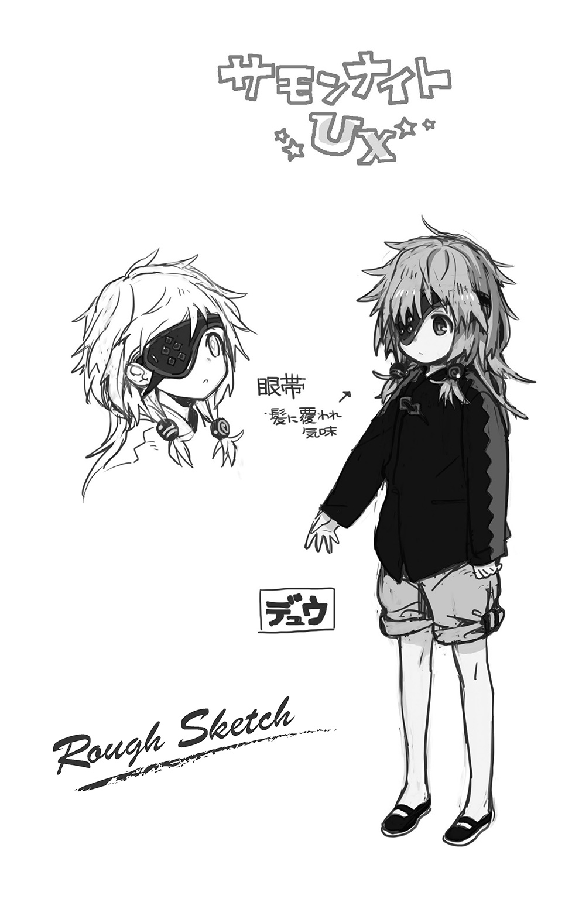
２ 異端召喚師審問 ～Reckless Act～
シャリマの診療所には、朝早くから結構な数の人がやってくる。
「次の方、どうぞ」
白いエプロンをつけたミコトは、待合所の扉を開けて、患者の入室をうながした。
順番札を確認し名前を聞いて、整理棚から過去の診療記録を取り出す。
治療を終えた患者の支払い手続きも、今では彼が引き受けている。
他愛なき雑用と思うだろうが、異界の人間であるミコトにとって、こちらの世界の文字を理解するだけでもひと苦労だった。デュウが使っていた子供用のかきかたの本を貸してもらい、宿題として向こうの世界に持って帰って、ようやくここまでこぎつけたのである。
（口頭での会話と同じように、こっちのほうも自動翻訳してくれればいいのになあ）
初対面の時から彼らが言語の壁に悩まされることなく意思疎通できたのは、どうやら魔法的な力の働きによるものらしいと、シャリマは言っていた。
召喚術で使役される召喚獣は、主人の命令を最低限理解できねばならないし、召喚主のほうも使役対象と意思疎通ができなくては、いろいろと危なっかしくて仕方がない。
『だから召喚術の術理の中には、門をくぐって呼び出す対象に環境適応を施すための文言が含まれているものなのよ』
任意で行き来しているという違いこそあれど、ミコトもまた門をくぐってこちらの世界に来ていることに変わりはない。その際になにがしかの作用が働いたのだろうというのが、シャリマの見解だった。
（おかげでさほど苦労せずになじめたんだから、贅沢言いすぎなんだろうけどさ）
言葉がまるで通じなかったらと思うと、本当にぞっとするミコトであった。
だからこそ積極的にリィンバウムの文字を学んだり、こういった手伝いの場で現地の人たちの話を聞いたりして一般知識を蓄えているというわけだ。助手という肩書きはそういった意味でも重宝するものであった。
ただし、当然それは治療の現場にも立ち会わねばならないことを意味する。
病気はまだいい。問診と経過観察を経て、薬を処方するだけなのだから。
ひどい怪我人がやってきたりすると、かなりきついことになる。
リィンバウムの医療技術は、ミコトの世界と比べるとかなり遅れている感じだった。傷の手当てひとつとっても、かろうじて煮沸やアルコール消毒の知識があるレベルで、麻酔薬や抗生物質といった便利な化学薬品はない。
施術すれば、必ず治る保証もなく、逆にそれが原因で命を失う危険さえあるという。
では、どうして人々はシャリマを頼って診療所に訪れるのか。
その答えこそが、彼女が身につけている【召喚術】にあった。
「交わした誓約に基づき、霊界サプレスより現れよ......癒やしの滴を汲む天使よ......」
取り出した紫色の召喚石―――サモナイト石を宙にかざし、彼女は呪文を紡ぐ。
魔力の光が診察室を照らしあげ、やがて一点へと収束して、小さな門が出現する。
そう―――それはミコトがくぐってきた、あの異界の門と同じものだった。
そこからおずおずと、小さな子供の天使が顔を出す。
「お願いするわ、ピコリット」
うなずいて、ピコリットと呼ばれた天使は小さな手を患者の傷口へとかざした。
きらきらした光の滴が掌からこぼれ落ちて、傷口にゆっくり染み渡っていくと、あれほどに苦しんでいた患者の表情がたちまち安らいだものとなり、じきに寝息を立て始めた。
（これが【召喚術】......異界の者を使役して、その特殊な能力を利用する魔術......）
シャリマはそれをこうして、重篤な患者の治療のために用いているのだった。
限定しているのは出し惜しみではなく、それだけが最善の治療法ではないからとのことだった。
「【霊界】の召喚獣による治癒の【奇跡】は理論上は無限だけれど、規模に比例する負担を患者の魂にかけてしまうの。傷が綺麗に治ったとしても、そのせいで寿命が縮んでしまうことだってある。状況に応じて的確に判断しなくちゃ意味がないものなのよ」
全ての患者の診察が終わって、後片付けをしながら、シャリマは説明してくれた。
「つまり、最後の手段ってことですか？」
「今の私にとってはそうね。もっとも、それでも対処できない場合も多いけれど......」
潜伏しつつ静かに進行していく類の病―――ミコトたちの世界でいうところの内臓疾患で外科手術が必要な類の病気に対しては、現状では打つ手がないに等しいのだという。
（魔法の存在する世界だからって、ゲームや漫画みたく万能ってわけじゃないんだな）
自分たちが当たり前だと思っていた医学や科学の恩恵というものを、改めて感じざるを得ないミコトであった。
「ただ、召喚術の力も使い手によって千差万別なの。私よりずっと優れた、【霊界】の術を使う人たちだっているし、機界ロレイラルの住人たちが保有している科学技術の中には、ミコトくんの世界と同じレベルや、それ以上の超技術も存在するって話だわ」
ただし、そうした恩恵の多くは一般の人々のところにまではもたらされない。
「帝国では、こうした技術はまず第一に軍事目的のために使われる。研究機関によって安全性を高めるためだっていうけど、実際には民生還元されることなく秘匿されるものだって多いのよ」
苦々しげに、シャリマは言った。
「他のふたつの国家では？」
「金持ちの特権になっているわ。聖王国に存在するふたつの【派閥】は、召喚師たちが自分たちの立場や利権を守るための組合だから。お題目は立派でも、結局は権力者寄りの考え方をしなくちゃならない。旧王国のほうは―――表向き、召喚師も召喚獣も害悪と断言してる。裏ではいろいろみたいだけれど、健全でないことは間違いないわね」
「............」
こういう人間同士のいざこざも、やはり向こう側と同じなのだとミコトは痛感する。
（理想郷なんてものは、やっぱり幻想の産物でしかないんだろうな―――）
大人ぶってそう考えてはみるものの、やるせなさまでは消し去れない。
「俺が帝国のこの町にやってきたのは、本当に運が良かったんですね」
限定的ながらも召喚術の知識が開示され、人々の生活の中に溶けこんでいるからこそ、最悪な結末を回避できたのだから。
「そうね......。だけど、これから先もそうだとは限らないのよ」
「え？」
今から、季節をふた巡りほど、さかのぼった頃に起こったことだという。
このログレムの町からずっと東のほうにある、国境付近のトレイユという宿場町で、伝染病が蔓延してしまった。
それも、自然発生したのではない―――異界のひとつ、幻獣界メイトルパに由来する風土病原体が、召喚術によって意図的にまき散らされたのだ。
つまり、町の住人たちを狙った無差別攻撃だったのである。
それと前後して町の上空で不審な飛行建造物が何度も目撃されており、ついにはそこから放たれた魔力攻撃によって、山脈の一部が消し飛ばされるという事態にまで発展した。
国境警備の部隊が事態を収拾すべく出動したが、現地に到着する頃には騒ぎは沈静化してしまっており、事件に関わっていたとされる謎の一団も、それに呼応して暴動を起こした亞人たちも、いずこともなく消え失せてしまっていたのだという。
浮遊城事件―――目撃された飛行建造物の外観からそう呼ばれるこの事件は、危険な敵対勢力が存在するという認識から、今も軍によって追跡調査されているのだという。
「別に浮遊城の一件だけに限ったことじゃないわ。旧王国の軍事都市が悪魔たちに乗っ取られて、無差別に侵略戦争を仕掛けたこともあるし、【無色の派閥】と名乗る反国家主義の召喚師集団があちこちで物騒な実験を行ったせいで、巻き添えで壊滅した村もひとつやふたつどころじゃないもの」
自分の属する世界とは、あまりに異質な事件の数々に、ミコトは息をのんだ。
「勇者だとか英雄とかがそのたびに現れて、世界の危機を救ったとかいう眉唾ものの話はよく聞こえてきたりするけれど―――とても信じられないっていうのが、私の見解ね」
本当に勇者や英雄が存在するというのならば、特別な力をもっているというのならば、どうして、それを隠そうとするのか。平和のための抑止力として用いてくれないのか。
だってそうでしょう？ と、シャリマは続けた。
「勇者が常に目を光らせていれば、悪い連中だって企み事を実行しづらいはずだもの」
「それはそうですけど、でも......勇者だってその、人間なんだし......」
「勇者という存在になった時点で、その人はもう人間とみなすべきじゃないわ」
「え!?」
思わず、ミコトはシャリマの顔をまじまじと見つめた。
それくらい、今の彼女は強く言い切った。
「より正確に言えば、当人が人間らしくあることを望んでいるようじゃダメなのよ」
武力、魔力、あるいは権力や財力といった類のものであろうと。
世界に対して、他よりはるかに抜きんでた影響をもたらすことができる人物は、否応なしに、その力の行使に責任を持たなくてはならなくなるというのだ。
「皇帝や聖王といった国家元首が一番わかりやすい例ね。力をもっているからといって、自由に振る舞ったりはできない。むしろ自重を求められることのほうが多いはずよ」
権利と義務は表裏一体―――学校の授業でそう習ってはいたものの、その言葉の重さをミコトは今まで考えたこともなかった。
（勇者や英雄っていうのは、この世界ではれっきとした地位であり、役目ってことなのか）
だとしたら、それはなんという重い責任をともなうものであろうか。
考えただけで、ぞっとしてしまう。
「あらら......。ちょっとびっくりさせすぎちゃったみたいね」
ゴメンゴメンと苦笑して、シャリマは言葉を補足した。
「私が言いたかったのはね、そんなことができる人間なんてそうそういないってことなの。だから勇者とか英雄とかって言葉は、軽はずみに使うものじゃないってことね」
「ああ、それなら俺にもわかります」
ほっと息をついて、ミコトは同意した。
「そういう厳しい見方をするんなら、それこそ勇者と呼べるのって【エルゴの王】ぐらいのものじゃないんですかね」
「ええ、そうね」
エルゴの王―――ミコトがその名を知ったのは、文字を学ぶためにデュウから借りたおとぎ話の本でだった。かつてリィンバウムが異世界からの侵略によって滅びかけた時、エルゴと呼ばれる不思議な存在たちから力を授かって、その危機を救ったという、まさに伝説の英雄だ。
子供向けの創作だと思っていたそれが、史実をもとにしている聞かされた時は、ひどく驚いたものだ。
（多分、日本でいうところの創世神話みたいなものなんだろうな）
そんな風にミコトは理解している。
リィンバウムを救ったエルゴの王は、人々に請われて本当の王さまとなり、末永く平和を守り続けました―――おとぎ話はそこでおしまいだったけれど、現状を見る限り、王がもたらした平和はあまり長続きしなかったようである。
「ついムキになって話題がズレちゃったけど―――そうした物騒な事件が起き続けたせいで、どの国でも召喚師に対する風当たりが強くなってきてしまっているのよ」
特に帝国は、他の二国から抗議を受ける立場となってしまった。
召喚術を学ぶ門戸を広く開放していることが、外道召喚師と呼ばれる不心得な犯罪者の増長を招いているのではないかと糾弾されてしまったのである。
証拠をともなわぬ言いがかりである―――が、国として黙殺することはできない。
これをきっかけに外交問題に発展するのは避けるべきであったし、浮遊城事件のような得体の知れぬ召喚師たちの暗躍を、このまま放置しておくわけにもいかなかった。
そこで新たに設立されたのが【異端召喚師審問会】という軍の特殊機関だ。
複数の【懲罰部隊】と呼ばれる集団で構成され、常に帝国の各地を巡回している。
「簡単に言っちゃうと、得体の知れない召喚師や召喚獣をどんどん捕まえようってこと」
労働力として召喚獣の利用が盛んな帝国では、諸々の理由で主人のもとから逃げ出してきたものが野生化し、はぐれ召喚獣となって害を為すことも問題視され続けてきた。中には犯罪組織などと積極的に関わることで、人間に対して意趣返しを行う者さえいる。そういった物騒な連中を、このさいまとめて一斉撲滅してしまおうというのだ。
「捕まったらどうなるんですか？」
「知らないわ。まあ、いきなり殺されたりはしないだろうけどね」
「そんな他人事みたいに!?」
大丈夫よ、とシャリマは言った。
「私が治療のために召喚術を用いてるってことは、ちゃんと役所に届けを出してあるもの。いくら軍の特殊機関とはいえ、手続きを無視して無茶なことはできないわよ」
実際、同種の診療所は帝国各地に存在しており、都市部での医療が受けられない者たちにとっての大切な生活基盤となっているのだ。
「だから私のことより、むしろ貴方自身の振る舞いに気をつけなさいな」
◆
遅めの昼食をとってから、ミコトはデュウと共に買い物に出かけた。
お祭りが終わったその翌日は、騒ぎ疲れて休みになってしまう店も多いそうで、足りなくなりそうな食材や日用品を、あらかじめ補充しておこうというわけだ。今までの買い物には必ずシャリマも同行しており、今回もそうする予定でいたのだが、急患が入ってきてしまったため、二人で行ってきてほしいと頼まれたのだ。
『今のミコトくんにだったら、お買い物くらいは安心して任せられるでしょ』
そんな風に期待されてしまったら、不安だなんて言えるわけがない。
「だいじょうぶ......ミコトがよめないじは、デュウがよんだげるよ」
「うん、よろしく頼む」
張りきるデュウに手を引かれて歩いてゆく。シャリマの診療所は町の北の外れにあって、背後には山林が広がっている。最初にミコトがデュウと出会ったのもその森の中だった。
南側の町へは、ミコトの感覚では徒歩十数分といったところか。
往来にはそれなりに人の行き来もあり、素朴な民家から立派な屋敷まで、いろんな建物が雑多に並んでいて、いかにも中世的異世界の町並みといった風情だ。
「にしても、前に来た時よりずっと混みあってるな」
「おまつりまえだから、しかたないのかも......」
小柄なデュウをかばうようにして歩きながら、店をめぐって、頼まれた品を買ってゆく。
一度だけデュウに読めない文字を助けてもらったくらいで、あとはたいした問題もなく、ミコトは無事におつかいを済ませることができた。
が、それがデュウにはちょっぴり不満だったらしい。
「つまんない......ミコト、ちっともデュウにたよってくれない......」
子供らしく拗ねる彼女の姿はミコトには微笑ましかったが、ご機嫌を損ねたままでいるわけにもいかない。
「ちょっとだけ寄り道していこうか？ お釣りはお駄賃にしていいって、シャリマさんも言ってたしさ」
「.........」
「ずっと歩きづめだったし、俺、喉が渇いちゃってるんだよ。だから、いつものジュース屋さんで何か飲みたいなあ......って」
指さしたのは、何度か三人で訪れたことのあるスタンド形式のジュース屋だ。
好きな果物を指定すると、その場で絞りたてのジュースにしてくれる。
デュウのお気に入りが、ハチミツとリベルを混ぜたミルクなのも承知している。
「しょうがないなあ......ミコトがどうしてもっていうのなら......いいよ」
「ありがとう！」
渋々といった顔で応じながらも、ミコトの手を引っぱるデュウの足取りは軽い。
（妹がいたとしたら、きっとこんな感じなんだろうなあ）
デュウからしてみれば、きっと自分が弟みたいなものなのだろうけれども。
どっちにしろ、構いあうことができる相手が側にいることが嬉しいミコトである。
「......♪」
木製のカップにたっぷりと入れてもらった甘酸っぱい果汁ミルクを、美味しそうに飲むデュウ。並んでベンチに腰掛けたミコトは、その様子を眺めながら、ハーブ入りのダリマジュースをちびちびと飲む。
（食べ物がよく似ていたってのも、この世界に馴染みやすかった理由のひとつだよなあ）
たとえばデュウのミルクに入っているリベルは、イチゴのような果物だ。
ダリマの実は柑橘類の一種らしいし、オニルの実などはタマネギにしか見えない。
細かい違いは勿論あるのだろうけれど、味的には遜色ないのが助かった。
（そうかと思えば、名前までまるっきり同じ物があったりするし......）
パンやスープといった料理の名称などがそうだ。食べ物に限らず、日常生活に深く関係している言葉が割と共通している。文字を学んだからこそ、知り得た事実だった。
そしてそれは、この世界だけに限ったことではない。
機界ロレイラル。鬼妖界シルターン。霊界サプレス。幻獣界メイトルパ。
召喚術によって開かれる門の先に存在する、結界を隔てた先にある四つの異世界。
そこにおける独自の名称や文化習俗の中にも、ミコトの世界で普通に通用するようなものを多々発見することができたのである。
顕著だったのは鬼妖界シルターンだ。
ミコトが歴史の授業で習った、近代以前の日本やアジア圏の文化が、ごちゃ混ぜになったような雰囲気だ。詳しく調べたわけではないから印象だけかもしれないが、逆に言えばそう思われるほどに酷似しているともいえるだろう。
（侍、忍、刀、巫女、妖怪―――偶然の一致だっていうには、ちょっと不自然すぎだろ）
他の三世界にも類似したものは数多く見つけられる。
シャリマも言っていたように、機界ロレイラルの科学技術のいくつかはミコトの世界で実用化され普及しているものであったし、霊界サプレスの住人である天使や悪魔、幻獣界メイトルパの獣人たちなどは、マンガやゲームといった空想世界の住人の特徴を踏襲しているといってもよいほどの類似っぷりであった。
（まだよくわかってないだけで......やっぱ、なにがしか関係しているんだろうな）
ミコトが暮らす世界と、リインバウムのことである。
シャリマの言葉を借りれば、彼の暮らしていた世界は【名も無き世界】―――こちら側からは今もって意図的には一切干渉できず、召喚術に起因する偶発的な事故によってのみ、その存在が認識されているという、分類不能な領域とのことだ。
そんな未知の世界からミコトはやってきている。はずなのだが―――。
（本当に偶然だもんな。正直言って、俺はそういう小難しいことには関わりたくないよ）
休みのたびにこうやって、デュウやシャリマと楽しく過ごせればいい。
向こうの世界はつらいことが多くて、ずっとこちらの世界にいたいとも思うけれど。
それはこちらの世界の厳しさを、まだ肌身に感じてないせいだともわかっている。
（逃げ場が欲しいだけなんだろうな、俺は......）
どちらかひとつを選ぶなんてことは強いられたくない。
曖昧なまま、ふたつの世界を行き来して、その時々を楽しく過ごしていたいのだ。
（いいじゃないか、別に。誰かに迷惑をかけてるわけでもないんだしさ）
後ろめたさにそう言い訳して、つかえかけたものをジュースで強引に飲み下した時。
通りの向こう側から、賑やかな音色が近づいてきた。
「ミコト！ おんがくたい、おんがくたいがきたよ！」
「へえ、あれがそうなのか」
デュウにうながされてミコトは立ち上がり、その方角へと目をやった。
やって来たのは、揃いの衣装を身に纏った数人の行列だった。
おそらく、公演のための宣伝にやってきたのだろう。
先頭を行く団長らしき洒落た格好の男が、ビラを撒いて口上を述べている。
「みえない......ミコト、デュウもみたいよ！ かたぐるま！」
「わかった、わかった」
上着の裾を引っ張られて、ミコトはしゃがんで、少女を担ぎ上げた。
「わあ......」
デュウが、感嘆の吐息をもらす。ミコトも同じ気持ちだった。
肩掛け式の管楽器や太鼓、手回し式の鍵盤楽器、様々な形状の弦楽器による多重奏。
浮き立つような旋律が、まさに祭りの到来を祝うかのように聞こえてくる。
「すごい......生きてる音だ......」
遮蔽物を外して耳にした音色は、まさに生命力にあふれるものであった。かすれや軋みといった雑音、周囲の環境音さえとりこんで、それ自体でひとつの音楽として調和してゆく。奏でることそのものが楽しくてたまらないというように。
「ミコトは......これがききたかったんだよね？」
「うん......」
生返事になるほど夢中になっているミコトの顔を、じいっと見下ろすデュウ。
「よかったね......うん......」
あまり動きのないその表情が、どこかぎこちなく歪んで見えたのは。
彼女なりのつたない、精一杯の喜びの表現だったのかもしれない。
◆
「なんか、すっかり遅くなっちゃったな」
「むちゅうになりすぎ。おこられたら、ミコトのせい」
楽隊の後を追いかけ演奏会の場所を確かめていたら、結構な道草になってしまった。
笛吹きについていく子供みたいだな、と我ながら呆れてしまうミコトである。
「いそいでかえろ。シャリマ、きっとしんぱいしてる」
「ああ、そうだな。祭りの本番は、ちゃんと三人で出かけたいもんな」
「うん！」
小走り気味に大通りを抜けて、家路に向かう角を曲がると。
予想だにしない光景が、そこに待ち受けていた。
「な、なんだよ!?」
「なんで......ひと、いっぱい......？」
さほど大きくはない道の左右に、鈴なりに人々が群がっていた。
祭りの催しのひとつにしては、その表情がみな強ばっている。
理由は、すぐにわかった。
「静まれ！ ええい、道を空けるのだ！」
道の中央にはみ出しかけた群衆に向かって威嚇の声をあげているのは、揃いの制服をまとった屈強な男たちだった。その手には剣や槍といった武器が握られており、場合によっては実力を行使するという明確な意志を感じさせていた。
「あ、あああ......っ」
かぼそい声で、デュウがうめいた。その顔は青ざめ、つないでいる手が震えている。
「どうした、デュウ！ だいじょうぶか？」
「て......ていこくぐん......ていこくの......へいし......っ」
「え？」
「こわいっ！ こわいよぉ!?」
そのままデュウは、ミコトにすがりついてきた。
今まで見たことのない少女のおびえぶりに、ミコトもまたおろおろと狼狽する。
「どうかしたのかい、お兄ちゃん？」
不意にそう声をかけてきたのは、よく日に焼けた禿頭の中年男性だった。
行商人の類なのか、背中に大荷物を背負っている。
「お嬢ちゃんの具合が悪いんなら、こんな人混みの中にいちゃダメだ。ほら、こっちへ」
一瞬ためらったが、ミコトは見知らぬその人物の助言に従うことにした。
少し離れた街路樹の根元に荷物をおろすと、それを枕代わりにしてデュウを寝かすよう指示する。
「妹さんに持病とかはあるのかい？」
「いえ、ないはず......です」
「たよりねぇな、おい。兄ちゃんなんだからしっかりしろよ」
「は、はいっ！」
まあいいさ、と笑って、男は慣れた手つきでデュウの様子を確かめた。
「うん、病気じゃねえ。軍の連中が騒がしくしたせいで、びっくりしちまったんだな」
ミコトは、ようやく胸をなで下ろした。
「ええと、貴方は？」
「旅の薬売りだよ。お祭り目当てで、商売をしにやってきたんだ」
その道すがら、とんでもないものと出くわしたのだという。
「帝国軍の部隊さ。それも【異端召喚師審問会】の【懲罰部隊】だっていうじゃねえか」
「え!?」
シャリマとの会話に出てきた単語が、ミコトの脳裏によみがえる。
たしかそれは、身元の知れぬ召喚師や召喚獣を捕縛するという特別な部隊。
「なんで、そんな連中が？ 町は、今夜からお祭りだっていうのに......」
「おう、オレもそれが気になってな。顔なじみの連中にいろいろと聞いて回ったのよ」
どうやら、名指しの告発があったらしい。
「この町に素性の知れない召喚師がいる。そいつは人々に怪しげな術をかけて操り、金品を巻きあげている―――ってな」
なんともあやふやな、憶測めいた話である。
が、事の信憑性などは関係ないのだと、中年男は言葉を継いだ。
「連中は口実が欲しいんだよ。多少強引でも調査を始めれば、なにがしかの引け目のある奴らは必ず出てくるもんだからな。そうして実績をあげていってるんだよ」
「そんな......」
横暴だと言いかけたミコトの口を、男は不意にその手で押さえつけた。
びっくりして引きはがそうとした彼の頭上から、どうかしたのかという声が聞こえる。
いつの間にか、さっきの帝国軍の兵士が近づいてきていたのだ。
「すみません。ちょっと連れの女の子が具合を悪くしてしまって......」
寝かされていたデュウは毛布をかぶって、ぶるぶると震えている。
兵士がこわいというのなら、この状況におびえていても無理はなかろう。
が、兵士にそんなことを斟酌するそぶりはない。
「確かめさせてもらうぞ」
毛布を強引にめくろうとするその手を、ミコトは思わず摑んでしまっていた。
「やめてください！ この子は、貴方たち兵士のことがこわいんです！」
「はァ？」
小馬鹿にしたような顔で、兵士はミコトを睨みつけた。
よく見れば、年頃はさほどミコトと変わらない。おそらくは新兵なのだ。
「お前たち市民が安心して暮らせるように、遠路はるばる災いを断ちに来た我々がこわいとは―――なんという不心得者だ！」
「おかしな言いがかりはやめてください！」
正論だった。だが、それが通じる相手ではない。
たちまちミコトは胸ぐらを摑んで引き出され、鼻先がつくほどの距離で、兵士の恫喝を浴びせられた。
「怪しい格好だな、お前―――さては、向こうの魔女の一味ではないのか!?」
「デタラメを......っ」
言うな、と言いかけて、ミコトは絶句した。
群衆が並ぶ道をやって来る、物々しく武装した一団を目にしたからだ。
前後左右を騎馬に挟まれたその中央で、後ろ手に拘束されて連行されているのは。
「シャリマあぁぁぁッ!?」
大きな声で叫んだのは、デュウだった。
いつの間に起き出していたのか、彼女は躊躇することなく一団の前に飛び出すと、涙声で兵士たちに向かって怒鳴りつけた。
「シャリマをいじめるな！ シャリマをはなせえぇーっ!!」
こんなにも必死なデュウの姿を、ミコトは今まで見たことがなかった。
「よしなさい、デュウ!?」
悲痛な声でシャリマが叫ぶ。
それはすなわち、告発された召喚師が彼女であったという残酷な証明でもあった。
チッと舌打ちして、ミコトを恫喝していた兵士が走り出した。
手にした槍をふりかぶり、情け容赦なく少女めがけて振り下ろす。
「やめろッ！」
力任せのその打擲を弾いたのは、先頭の馬に乗っていた壮年の軍人だった。
腰に提げていた剣を即座に抜き放ち、その峰で凶行を未然に防いだのである。
「守るべき市民に武器を向けるな！ 帝国軍人であるならば、常にわきまえよ！」
一喝をもって、場の空気を完全に支配する。
どうやら、相応の地位にある人物のようだった。
「ですが、隊長。こいつらはどう見ても、その女の関係者ですよ!?」
「まだ小さな子供ではないか。そちらの少年も、武器が必要な相手には見えんぞ」
突き飛ばされた格好のままだったミコトは、その言葉に羞恥心を感じていた。
確かにこの一連の騒ぎの中で、自分は何の役にも立っていなかった。
憮然として立ち上がりながらも、それだけは認めざるを得ない。
「しかし隊長殿。召喚術を用いるのであれば、年格好はさほど問題にならぬのも事実」
そう言って列の奥から歩み出てきたのは、他の兵士とは違う服装をした男だ。
首から提げた緑色の宝石護符が、ひときわ目を引く。
「審問召喚師殿の仰りたいこともわかります。では、実際のところどうでしょう。彼らがサモナイト石を隠しているようには、私には感じとれないのですが......」
「そう皮肉らないでください。彼らが召喚に必要な道具を持っていないことぐらい、私もとうに確認しています。あくまで誤解を招かぬための念押しです」
「はは、それは失礼した」
君たちにもな―――と、懲罰部隊の隊長はミコトのほうに向き直り、馬上で軽く頭を下げてみせた。
「警戒を怠るなときつく言い聞かせたのが徒になったらしい」
「いえ、俺たちのほうこそ......」
今もなお一団を睨みつけるデュウを背にかばい、ミコトは懸命に釈明した。
「この子は、ずっとその女性と一緒に暮らしていたんです。診療所で治療を受けたことのある人だったら、誰だってそのことは知ってるはずでしょう!?」
群衆に向かって、必死に呼びかける。
この中にいる誰かが、シャリマを告発したかもしれないという疑念はあったけれども、皆が皆そんな連中ではないと信じて、祈るような気持ちで。
それは報われた。
まばらではあれど、そのとおりだという声が、幾つか聞こえてきたのである。
それを呼び水にして、彼女を弁護する叫びが、より大きな声で響き渡り始める。
彼女は怪しい者ではない。この町には欠かせぬ医者だ。連れて行かないでくれ。
親身になって治療を続けてきた彼女の足跡は、確かに人々の心に届いていたのである。
が、しかし―――。
「静まれいッ！」
黙って人々の訴えに耳を傾けていた部隊長は、不意に大声で一喝した。
「皆の訴えは確かに聞いた。だがな、この女召喚師の罪はもはや明らかなのだ！」
ミコトは見た。
シャリマが恥じ入るようにして、その顔をうつむけるのを。
「この女召喚師は、正規の手続きを経ることなくこの地で召喚術による医療を行っていた。治療の腕前がどうこうという以前に、こやつはお前たちのことを騙していたのだぞ！」
審問召喚師と呼ばれた男が、凜とした声で彼女の罪科を言い放つ。
群衆の間に満ちていた熱気が、たちまち引いていくのがミコトにもわかった。
彼自身でさえ、血の気が引く思いだった。
「そんな......だって、シャリマさん、俺にはだいじょうぶだって......」
悲痛な彼のうめきに応えたのは、ごめんなさいという彼女の悔恨の言葉だった。
それが、現実だった。
「連行してください......お願い......はやく......っ」
罪人自身に涙声でうながされて、一団は再び動き出した。
◆
それから数時間が経過した後。
懲罰部隊に踏みこまれて、あちこち破損し荒らされてしまった診療所の中で。
ミコトはただ、呆然と座りこんでいた。
「なんで、こんなことになっちまったんだろう......」
返事をする者は誰もいない。
デュウは去って行く一団の後を追いかけていったまま、まだ帰ってきていなかった。
ミコトもそれにならおうとしたが、立ちはだかる影がそれを阻んだ。
『事情聴取をさせてもらいたい』
隊の指揮を審問召喚師に委ねて、隊長自らがそう申し出てきたのだ。
拒みようがなかった。
『でも、デュウが......』
けして彼女に危害は加えさせない、と隊長は請け負った。
『強く叱ったところで、あれは言うことを聞きはすまい。ついてくるだけというのなら、無下に追い払うなと命じておいた。今後の状況によっては保護も必要になるだろうしな』
それはそうだった。保護者であるシャリマが捕らわれた今、代わりにデュウの面倒を見る誰かが必要なことぐらい、ミコトにだって理解できる。
『失礼とは思うが、君が引き取ってやれるものでもないのだろう？』
歯を食いしばることしか、ミコトにはできなかった。
聴取は、診療所で行われた。
さっきの新兵のような一方的で威圧的なものではなく、あくまで事情を確認し、シャリマを連行した理由を説明するためのものだ。出入口に何人かの兵士が見張りについてはいたが、それ以上介入してくることはなかった。
向こうの説明はとても簡単で、非のつけようのない明白さをもっていた。
シャリマは、正式な届け出を出すことなく、召喚術による治療行為を行っていた。
のみならず―――そもそも居住届すらも出してなかったのである。
『別に珍しいことではないのだよ。様々な事情で行き場を失ってしまった者たちは、多少強引なことでもしないと、自分の居場所を得ることすらできなくなってしまうんだ』
おそらく彼女は、そのために非合法な手段をとった。
そうした汚れ仕事を請け負う犯罪組織は、大陸全土に根強く広がっているのだという。
『召喚術や治療に必要な道具なども、おそらく闇市場で手に入れたのだろうな』
そうしたつながりをたどっていくことで、背後にいる反社会的存在を一網打尽にする。
それこそが、彼の部隊の本当の狙いだったのだ。
あえて目立つ形で連行したのは、動揺して尻尾を出す者を見つけるため。
『実際、君たちと一緒にいたという行商人の男は、いつの間にか姿を消したようだしな』
言われて初めて、ミコトは気づいた。
そういえば、あの親切そうな男はいつの間にか雲隠れしてしまっている。
『俺のことも......疑っていますか？』
躊躇した末、それでもあえて、ミコトは自分から切りこんだ。
答えは当然のごとく、是であった。
しかし、証拠もなしに相手を咎める無法は、軍であるからこそ許されるものではない。
『君が少し前から、この診療所に出入りしていたという証言はある。遠縁の親戚で、日を決めて手伝いにきてもらっているということも、な』
じっとミコトの目を見つめて、彼はそう言った。
こういう時のために申し合わせておいた説明どおりだ。
だが今、シャリマの素性が定かでないと知れたこの状況で、果たしてそれをなぞることは得策だろうか。細かく追及された結果、致命的な失敗を犯すことにならないだろうか。
相手は、こういった尋問に慣れている軍人なのだ。
そして結局―――ミコトは黙秘することを選んだ。
それしか、できなかった。
『明日、またここに来る。後ろめたいことがないのなら、本部として接収してある屋敷に来るといい。いきなりの別れだったんだ。最後に面会する時間ぐらいは認めてやろう』
デュウや彼自身の身の振り方も、その時に相談すればよいと言われた。
『だがもし、君もまたやましいことをしているというのであれば......』
その時は容赦なく罪人として捕らえる―――言外にはっきりとそう言い置いて、隊長は去って行ったのだった。
「どうすりゃあ、いいんだよ」
力のない声で、ミコトはぼやいた。
自分にできることなんて、なにひとつないではないか。
やましいかどうかはともかく、秘密だったらそれこそ、とんでもないものを抱えている。
不思議な門をくぐって、未知の世界から渡ってきた異邦人―――そんな事実が知れたら最後、見逃してもらえるはずがないのだから。
無力で哀れな子供と見なしたからこそ、あの隊長もお目こぼししてくれたのだろう。
わざわざ期限をきったのは、遠回しに立ち去れという警告でもあったのだ。
それぐらい、ミコトにだってわかっている。
「逃げ......帰っちゃおうかな......」
元々、明日には元の世界に戻らねばならなかったのだ。
週末だけの気ままな旅人―――それが本来の自分のスタンスだったではないか。
今すぐにでも、門を開けることはできるのだから。
そして―――もう二度と、こちらにやって来なければいい。
シャリマのことも、デュウのことも、全てはこちら側の世界のしがらみだ。
切り捨ててしまえばいい。楽しい夢を見れたと思って、忘れてしまえばいいのだ。
そうすれば、きっと―――。
「できるわけがないだろう、そんなこと!!」
身勝手な思考をねじ伏せるようにして、ミコトは大声でその選択肢を否定した。
「都合が悪くなったからなかったことにするなんて、そんな甘えた考え方、通用するはずがないんだよ！ できるからって、絶対にやっちゃいけないことなんだよっ!!」
それ以前に、忘れられるはずがない―――忘れたくないのだ。
こちらの世界で過ごした日々は、向こうの世界での生活に息苦しさを覚えていた彼にとって、欲しくて欲しくてたまらなかった宝物のようなものばかりなのだから。
どうしてそれを、自分から捨ててしまえるだろうか。
（そんなことをしたら、今度こそ俺は本当におかしくなっちまう！）
やっと見つけた心の拠り所なのだ。
守りたい―――たとえ、それがこの世界では罪と呼ばれる行為であったとしても。
「シャリマさんを、デュウを、このまま放っておくことなんてできない」
夜空に浮かぶ満月を睨みつけて、ミコトは、ゆっくりと立ち上がった。
マフラーとヘッドフォン―――ふたつのお守りで、せめて心だけは武装して。
◆
部隊が駐留している屋敷は、すぐに見つけることができた。
門前に大きなかがり火を焚いて、警備の兵が仁王立ちしているのだから当然だ。
その目的の大半は示威行動なのだろう。
わざと大仰に振る舞うことで周囲を威嚇・牽制し、この機会に軍というものの権威を地方の者たちにも浸透させようというのだ。宣伝工作というやつである。
その証拠に、見張りの兵士は二人とも、交互にあくびをかみ殺している有り様だ。
ここが襲撃される可能性はないと、最初から決めてかかっているようだった。
「祭りかぁ......。町の連中には気の毒だったな。わざわざこんな日に騒がせちまってさ」
「まあ仕方ないさ。恨むんなら俺らじゃなく、告発状の送り主にしてほしいもんだ」
眠気冷ましをかねて、本当は禁止になっている私語を、ひそひそと始める。
「それなんだけどよ。告発が事実だった場合は、懸賞金ってもんが出るんだろう？」
「そのはずだな」
「なのによ、なんでか今回の手紙には、送り主の名が書かれてなかったそうじゃねえか。勿体ない話だとは思わねえか？」
「いや、むしろ賢いヤツの仕業だろうさ。下手に褒美をせしめたら、それこそ自分が訴えたってことがバレちまう。回りの連中に冷たい目で見られたら、それこそたまらねえしな」
「なるほどなぁ。......ん？」
「どうした？」
「いや、きっと猫だろうさ。向こうで木がざわざわって鳴ったから、つい気になってな」
「田舎だから野良も多いんだろうさ。町外れの森には、はぐれ召喚獣も出るらしいが」
「とすると、隊長殿のあの性格だ。ついでに討伐してから帰還するつもりかもしれんぞ」
「やれやれ......。任務とはいえ、長引かないといいな」
人間というものは、必死になると思った以上のことができるらしい。
夜闇の中、月明かりだけを頼りに木から木への跳躍を成功させたミコトは、その太い幹にしがみついたまま、ばくばくと鳴りっぱなしの心臓が落ち着くのを待っていた。
今夜のうちにシャリマに会って話を聞く―――それがミコトのさしあたっての目的だった。
堂々と面会に行くことも考えたが、それは用意された罠の中にのこのこと入っていく行為のようにも思えた。どちらにしても危険であるというのならば、不意をついたほうが少しでも有利になるかもしれない。とはいえ、ミコトはこうしたことについては素人だ。
実際、こうして敷地の中に入れただけでも僥倖というものだった。
（漫画やゲームだと、潜入した主人公は監視の目を鮮やかにくぐって、速やかに目的の場所にまでたどり着くことができるものなんだけど......）
残念ながらこれは現実で、ミコトにそんな技能はない。
（行き当たりばったりでいくしかないか。せめて、見つからないように用心しないと）
覚悟を決めてそろそろと地面に下りた、その途端に。
「動くな」
冷たい槍の穂先が、ミコトの首筋にぴたりとつけられた。
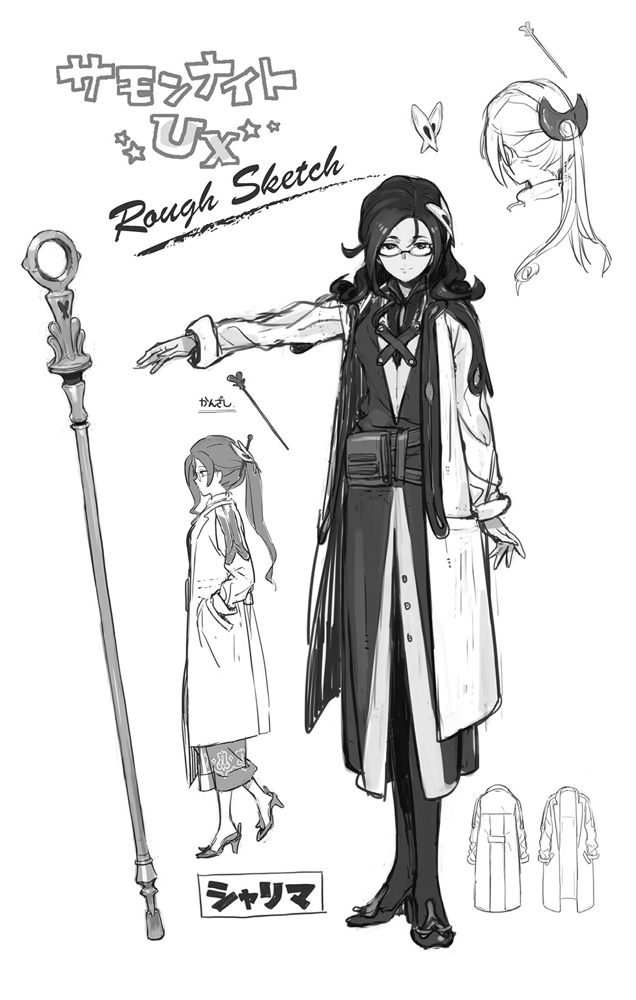
３ 拒絶する光 ～Flashbacks & Fadeouts～
「両手を挙げて振り向け......ゆっくりとだぞ？」
従うしかなかった。
「バレてないつもりだったとは、本当にお前はバカの極みだな」
そこに立っていたのは、ミコトを引き倒した若い兵士だった。
「勤務態度のなってない門番たちには後でお目玉を喰らわせるとして、とりあえずは尋問だ」
「バレてたって......いったい、いつから？」
「一番最初に、お前に摑みかかった時からずっとだよ」
槍が素早く動いて、ミコトの上着のポケットを刺し貫いた。
正確にはその中身である、ポータブルオーディオプレイヤーを。
「あ!?」
緊張を和らげるためにと、最小で流していた音楽が途切れてしまう。
「用途はよくわからんが、そいつは【機界】に由来する道具なんだろう？ 生憎と、俺の召喚術はそっち方面には強くてな。意識を集中していれば、反応をたどることだってできるんだよ」
実際は違うのだが、科学技術に基づく道具という点では、たしかに同じかもしれない。
ミコトにとってはまるで予期せぬ解答だったが、信じないわけにはいくまい。
ここが異世界であり、自分の世界の常識が通じないことを失念していたのが悪いのだ。
だからといって、ここであきらめてしまうつもりもないのだが。
誇れる能力が何もないのなら、ありもので賄って窮地を脱するしかない。
「で、どうするつもりだよ。ここで俺を......殺すのか？」
「んな勝手なことができるかよ。隊長のところまでしょっぴかせてもらう」
「ふうん......。やけに聞き分けがいいのは、その無様に腫れあがった頰が原因かい？」
当てずっぽうの安い挑発だったが、効果はてきめんだった。
「うるせえッ！ 全部、テメエのせいだろうがよッ!!」
新兵は激昂し、あの時と同じようにミコトの胸ぐらを摑んできた。
あの時と違うのは、それをミコトが予測し、待ち受けていたということ。
「......っゲェ!?」
水月に向かってめりこんだのは、ステンレス製の折りたたみ式警棒だった。
ミコトが護身用として、密かに向こうの世界から持ちこんでいたものである。
「いじめられっ子だったからさ。ここぞという時の反撃の仕方は身についてるんだよ！」
気絶させるのは無理でも、相手を悶絶させることぐらいはできる。
うずくまる新兵を置き去りにして、ミコトはその場から逃走した。
奇襲が通用するのは一度きり。だからこそこの好機を逃してはならない。
（どこかに隠れて、うまくやり過ごす方法を考えないと......）
が、そんな思考自体がすでに甘いということを、ミコトはすぐに思い知らされた。
「せ、【誓約】に基づき―――【機界】より......召喚する―――ッ！」
まぶしい光が背後から差したと思った時には、ミコトは前のめりに転倒していた。
「あがァ......っ!?」
雷に打たれたような衝撃―――それは彼の背に炸裂した雷球がもたらしたものだ。
「ふざけた真似......っ、しやがって......ッ！」
ふらふらと近づいてきた新兵が、弛緩したミコトの身体を蹴り転がした。
感覚が麻痺してしまっているのか、伝わってくるのは妙に鈍い痛みだ。
「【痺電爆雷】だ。俺の使える召喚術じゃ、一番殺傷力が低いヤツさ」
指差す先をかろうじて動く目で追ったミコトは、新兵の傍らに浮遊する物体を見た。
（こいつが、機界ロレイラルの召喚獣......）
【機界】の超科学によって創造された機械仕掛けの兵器―――それを呼び出し使役するのが、【機界】の召喚術であった。対象は無生物ではあるが、便宜上、これも【召喚獣】と称される。
新兵が召喚したのは、浮遊する銃座とでも呼ぶべき代物であった。
大きさこそ一メートルにも満たないが、機械腕や背部の各所には明らかに内蔵兵器の存在を予感させる保護装甲が見られる。頭部らしき箇所から一定の間隔を置いて、赤いデジタル光が水平照射されるのは、標的の位置を正確に把握するために違いない。そして、今もパリパリと火花を散らしている腹部の穴が、おそらく今の痺電爆雷という武器の射出口だと思われた。
あえて手加減をしたというからには、より強烈な攻撃手段もあるのだろう。
もっとも、そんな一発ですら、ミコトには充分以上に痛烈だったわけだが。
立つことはおろか、口をきくことさえできない。
そんな彼を見下ろし、せせら笑いながら、勝者は鬱憤晴らしとばかり、好き放題に蹴りつける。鈍痛がじわじわと強く、熱くなってゆく。視界が涙で滲んでゆく。
今更のように、ミコトは思い知らされていた。
（当たり前だよな......。だって、俺は......どこにでもいる高校生でしかないんだし......）
たまたま異世界の入り口を見つけてしまっただけ。他の人と少し立ち位置が違っただけ。
鍛え抜かれた肉体も、特別な技能も、なにひとつ持ちあわせていない。
当たり前だ。それらを磨く努力なんてしたこともないのだから。
（英雄になんて、俺がなれるはずがなかったんだ......勇気だけを振りかざしたって、誰もが勇者になれるってわけじゃないんだ......）
わかっていたつもりだけど、それでもどこかで夢見てしまっていた。
強く望めば、想えば―――なんとかなるだろう、と。
（このまま、俺......殺されちゃうのかな......）
ぞわり、と背筋に冷たいモノが走った。
子供じみた使命感とそれがもたらしていた高揚感が、現実によって叩きのめされた今。
残酷な未来予想図が、ミコトの脳裏をたちまち埋めつくしてゆく。
（イヤだ......イヤだ......イヤだっ、イヤだっ、イヤだあああぁぁぁ......ッ!!）
逃げ出したいのに、手も足も動かない。なにもできない。させてもらえない。
（助けて......誰か......誰でもいいから......助け......）
悲痛な声を発することすらできず、ミコトの意識は次第に薄れて、拡散してゆく。
沈んでゆく......。いや、もしかすると浮いているのかもしれない。
ふわふわとした、そんな危うい感触の中で。
ミコトは、不意に異音を感じとった。
ケ、キ......ケ......カ......キ、ケ......ソケキ、ケ......キ、ケ......ッ
プレイヤー本体が壊れた時点で、ヘッドフォンからの音声は完全に途切れている。
何も聞こえないはず、なのに、その異音はたしかに聞こえてくるのだ。
しかも次第に大きく、明瞭さを増しながら。
キケ......カソケ......コエ......ヲ......ワレ、ラ......コエ、ヲ......ッ
違うぞ......と、ミコトはようやく気づいた。
ヘッドフォンから聞こえてるんじゃない。まして、ノイズなんかじゃない。
これは声だ。呼びかけてくる声だ。
己の内から湧きあがってくる、明らかに己とは違うなにかの声だ。
（もしかして......こいつが、そうだったのか？）
常に感じ続けていた違和感。世界と自分の間にあるズレ。
ミコトにそうした不安をもたらしていたのは、この囁き声だったのではないのか。
生まれた時からずっと、遠い潮騒のように、常に自分へと呼びかけてくる囁き声。
それが恐ろしくて、異音だと決めつけて。
だから、耳を覆ってしまおうとしたのではないのか。
別の音で塗りつぶして、消し去ろうとしたのではないのか。
だが今、その呼び声は無防備となったミコトの心に否応なく染みてゆく。
聞け、かそけき声を―――我らの声を、と―――。
そして、異変が起こった。
「なんなんだよ、こいつは......!?」
昏倒寸前だったはずの生意気な侵入者が、白目を剝いたまま、不意に立ち上がってくるという異常事態に、新兵はただ呆然とするしかなかった。
「オオオオォォォ......オォ......オオオオオオオォォォォォォ......ッ!!」
苦悶と歓喜が入り交じったような咆吼が響き渡る。
彼が耳にしたその声はもう、あの無力なくせに生意気な少年のものではなかった。
だらりと下がっていたその右腕が、ゆっくりと水平に伸ばされてゆく。
こちらに向けてゆっくりと開かれていく掌から、不気味な光があふれ出してゆく。
見ているだけで身体が凍てついてしまうような、冷たくおぞましい戦慄が走る。
それが【霊界】に由来する力であることには、新兵もすぐに気づいた。
共に軍学校で学んだ仲間たちの中には、【霊界】の召喚術の使い手たちもいたのだ。
だが目の前のこれは、明らかに桁も質も違いすぎる。
人間のものとは到底思えない。そう、むしろこれは、まるで―――。
「【悪魔】―――こいつは、あの女召喚師の【護衛獣】だったってことなのか!?」
【護衛獣】とは、召喚師が護衛として常時使役している召喚獣のことをさす。
見た目だけなら人間とさほど変わらないが、中にはとんでもない能力を秘めたバケモノを護衛獣として連れている者もいると、軍学校の授業で習った記憶がある。
（そういえば......）
連行される時、容疑者の女はまるで抵抗しようとはしなかった。
戦闘を予感して身構えていた彼が、あまりにも呆気ない結末に拍子抜けしたほどに。
誓約した召喚石なども全て、素直に証拠品として差し出した。
しかし、あれで本当に全部だったのだろうか。
密かに隠し持っていた召喚石があったのではないか。
なんらかの意図があって捕縛され、脱出する機会をうかがっていたのではないのか。
そして、それを用いた結果が、目の前のこいつが見せた本性だったとしたら。
「畜生め......！ それでも、やるしかねぇだろうが!!」
萎える心に自ら悪態をついて奮い立たせると、彼は再び召喚石を構えた。
もう手加減はしない。次に用いるのは、殲滅目的の強力な召喚術。
あからさまな殺意とともに、標的を睨みつけたその時。
「ウオオオオオオオオオオオオオオオオオォォォォォォォォォォッ!!」
目の前の光が一瞬で膨れあがり、無音の爆発を引き起こした。
「な......っ!?」
襲ってきたのは痛みでも熱でもなく、ただ圧倒的な喪失感。
防具も魔力の結界も、なんの役にも立たない。
がくんと膝をついて倒れる、新兵。
それを放置したまま、ふらふらとミコトは歩きだした。
その周囲にふわふわと舞う無数の燐光に導かれるようにして。
◆
「......あ、れ？」
なんの前触れもなく、ミコトは唐突に意識を取り戻した。
（いつの間に、俺......建物の中に？）
廊下の隅に積まれた雑多な荷物の山の陰にもたれかかっていた自分。
全く身に覚えのない状況だ。
（たしか俺は、あの兵士に召喚術を喰らわされて、そのまま気絶したはずなのに）
どういうわけか、その相手の姿も見当たらなかった。
電撃ショックの影響なのか、前後の記憶ももやがかかったようにあやふやだ。
「なにがなんだか、全然ワケわかんねーけど」
当座の窮地は脱したらしい。ならば、このまま目的を果たすしかないだろう。
（見つかった以上は、追っ手がかかる。その前に、なんとしてでもシャリマと会って......）
ただ話を聞くだけではなく、一緒にここから逃げてもらわなくてはならない。
召喚師である彼女の助けを借りなくては、ここから脱出することは不可能である。
さっきの手痛い教訓から、ミコトが出した結論はそれだった。
（かっこわるくてムシのいい話だけど、それが一番現実的な方法だもんな）
治療としての召喚術以外に、彼女が攻撃的な術も使えるということは聞いていた。
その術で彼女は、戦場跡で暴れ回るはぐれ悪魔の手から、デュウを救ったのだから。
シャリマの夜のお酒に、話し相手としてつきあった時、聞かせてもらった昔話だ。
（ああ、そっか......だから、デュウはあの時、帝国兵たちにおびえたんだな）
はぐれ悪魔は兵士の死体にとりつき、それを操っていたと聞いている。
戦火で壊滅した村に、たったひとりで生き残ってしまった少女にとって、はぐれ悪魔の襲撃はその半顔の呪いの傷跡だけではなく、精神的外傷としても強く刻まれてしまったに違いない。間近で見た兵士たちの姿が、それをフラッシュバックさせたのだ。
にもかかわらず、彼女は勇気をふりしぼってシャリマを助けようとした。
「見習わなくちゃな、やっぱ......」
喉元過ぎればなんとやら―――ついさっきまで柄にもないことをしたと自分を卑下していたことは、都合よく忘れているミコトだった。もしかすると、棚に上げているだけなのかもしれないが。
そのデュウの行方が、いまだに知れないことも気がかりであった。
自分のように無茶な潜入をして捕まっているのなら、逆に安心できる。
ミコトに警告をしてきたあの隊長は、軍人としての矜持をもっているように思えた。
部下が幼子に暴力を振るうようなことは、絶対に許したりすまい。そう信じるしかない。
（とにかく、じっとしていちゃダメだ！）
ありがたいことに、身体に受けた傷は残っているものの、さほど痛みは感じられない。
（たんに感覚が鈍くなっているだけで、後からすっげえ痛むのかもしれないけどさ）
とにかく動ける状態のうちに、なんとかしなくてはならない。
まだ痺れの残る頭を振ってから、ミコトは精一杯の隠密行動を再開した。
◆
息を殺して、身を潜めて、廊下をじりじりと進んでゆく。
目指すは、突き当たりにある半開きの大扉だ。
自分がいる場所を把握するための手がかりがあるかもしれない。
（今度こそ慎重に、慎重に......）
普通に歩けばあっという間にたどり着ける程度の距離が、やけに遠く感じられる。
扉まであと数歩。
詰めっぱなしだった息をふっと緩めた時、ミコトは異変を感じとった。
（なんか、変なニオイがしないか？）
重く鼻孔の奥に突き刺さるような、どこか獣じみた、生々しいにおい。
それは、扉の向こう側から漂ってきているようであった。
イヤな予感がひしひしと襲ってきて、ミコトの動悸が速くなる。
立ち去るべきだろうか―――しかし、それでは費やした時間が無駄になってしまう。
それに来た道を逆戻りするのは、心情的にも抵抗があった。
意を決して、ミコトは部屋の中をのぞきこみ。
「......!?」
絶句した。
予想だにしない凄絶で酸鼻を極めたその光景は、向こう側の世界で平穏に暮らしている限り、ミコトが一生目にすることのないものであったろう。
食堂らしき大広間の全てが、おびただしい血によって塗りたくられていた。
引き裂かれたカーテンやテーブルクロスを、不気味な斑紋で染めあげている血飛沫の跡。
壁面の高い位置にあるがゆえにかろうじて消えずにすんだらしい燭台も、金属の被いにべっとりと紅いモノがこびりついている。石畳の床は言わずもがな、べとべとのぬるぬるだ。
ミコトがかいだ異臭は、この尋常ならぬ血液のものだったのだ。
「う......ぐぇ......ッ」
酸っぱく苦い胃液がこみ上げてきて、耐えきれず、ミコトはその場に手をつき、嘔吐した。
生乾きの血の跡が粘っこく掌に貼りつく感触に、さらに怖気をおぼえて涙目になる。
「うぇ、っぐぅ......っ」
まだ汚れていない手の甲で、ごしごしと涙目をこすってから。
気づいてしまった。
「そん、あ......っ、ひあ、ああ......っ!?」
無数の瞳が、じっと自分を見つめている。
かっと大きく見開かれ、まばたきもせぬまま、じいっと見つめている。
兵士たちだった―――ただし、すでに事切れた状態の。
かつては人体を形作っていたものが、部品単位の肉塊にされて、無造作に転がっていた。
室内を濡らしている大量の血は、引き裂かれたそこから生じたものだったのである。
「うわああああああああぁぁぁぁぁぁぁぁ ッ!?」
ッ!?」
ミコトは叫んだ。叫ばずにいられなかった。
せめて叫ばなければ、正気が保てなくなりそうだった。
「なんなんだよっ!? なんで......っ、なんなんだよおおおぉぉぉ～ッ!?」
たしかに彼にとって帝国軍とは、幸せだった三人の日々を壊しにきた、略奪者だった。
恨みもしたし、憎みもした。けれど、だからといって―――。
（こんなの......ひど、すぎる......っ）
なにが起こったのかは定かではない。が、異常事態が起きたのだけはたしかだ。
これだけの数の兵士がまとめて、ほとんど一方的に虐殺されているのだ。
戦闘行為に及んだ痕跡がない。それどころか、おそらく悲鳴さえもあげていない。
でなければ、異変に気づいた者たちが、なにがしかの行動を起こしているはずだ。
それが見られないということは、この状況がまだ把握されていないということになる。
（逃げなくちゃ......。ここから、とにかく......逃げなくちゃ......っ!?）
青ざめた顔のまま、のろのろとミコトは立ち上がる。
惨劇の場から目を背けて、元来た道を戻ろうとしたその時。
血の海の向こう側にあったドアが勢いよく開き、驚愕の声がふたつ、響き渡った。
「なんなのだ、これは一体!?」
「なんと、無残な......」
ミコトに警告をしていったあの部隊長と、審問召喚師と呼ばれていた人物だった。
さすがに取り乱したりはしなかったものの、変わり果てた部下たちの残骸を見つめて、とっさにそれ以上の言葉は出てこぬようだった。その沈黙がかえって悲痛なものを伝えてくるようで、振り返ったミコトもまた、足を止めたまま固まってしまう。
そんな重苦しい静寂は、新たな怒声によって破られた。
「そいつの仕業です、隊長ッ！」
いわれなき弾劾をしたのは、先ほどの新兵だった。
おそらく、ずっとミコトを追いかけてきていたのだろう。
「そいつの正体はバケモノなんです！ あの女の護衛獣―――だから、みんなを殺したに決まってるんですッ!!」
血走った目を剝き、口元を引きつらせて、断言する。
「俺じゃない！ 俺なんかに、こんなことできるはずないだろうっ!?」
ヒステリックに、ミコトは言い返した。
ミコトの無力さは、目の前でまくし立てる彼自身が、よく知っているではないか。
「むしろ俺のほうが、あんたに殺されかけて......」
身振り手振りをまじえて、反論を続けようとするミコト。
しかし、新兵はそんな彼の何気ない動作に反応し、異常なまでにおびえた声を発したのだ。
「ひいいいいぃぃィィィッ！ く、来るなああああァァァァァッ!!」
「な......!?」
さっきまでのふてぶてしい傲慢な態度は、今や、彼のどこにも見当たらない。
代わりにその顔に張りついているのは、あからさまな恐怖。
それは、明らかにミコトに対するものであった。
「また、奪いとるつもりだろうッ!? あの光で......ああっ、うあああぁぁ......っ!!」
ぼろぼろと涙をこぼしつつ、震える肩を必死に自分で押さえつけて叫ぶ。
「あいつらに命じて、俺の精神を、ズタズタに引き裂くつもりなんだろうがァッ!?」
何を言っているのか、ミコトにはまるでわからなかった。
立て続けに襲ってくる理不尽な言葉の数々に、ただ呆然と立ち尽くすしかない。
「その前に......その前に、俺が......や、やってやるううううゥゥゥゥ～ッ!!」
わなわなと震える拳を突き出し、やぶれかぶれの叫び声をあげる新兵。
その手にずっと握りしめられていた召喚石が、魔力を受けて、激しく明滅する。
「おい、よせ!?」
「ダメだ......隊長、結界で防御を！」
空間が不規則に歪み、バチバチと火花を散らして、その裂け目から召喚獣が飛来する。
さっきミコトが身をもってその威力を味わった、あの恐ろしい【機界】の兵器だ。
しかも、明らかにあの時とは様子が違う。
胸部に生成されてゆく光球のみならず、左右の機械腕が構えられ、その先端から銃口とおぼしき筒先が伸びてくる。保護装甲が展開して、機関銃のものと思われる弾帯が露になった。さらには、背面からより凶悪な武装が出現する。
無数の銃口を円周上に束ねて瞬間火力をより強大化した連装式機関砲の砲身が二門、内部からせり上がってきて、両肩にがっしりとマウントされる。
チチチ、ピピピと鳴り響く電子音は標的を確実に捕捉したという合図だった。
「そいつを消し飛ばせッ！ 跡形もなく消し飛ばせエェェェェェェッ!!」
理性を失いかけた主人の命令であろうと、召喚獣にとっては絶対のものであることに変わりない。
全砲門解放による一斉射撃が、無防備なミコトに襲いかかる。
確実に自分に死をもたらすであろう銃弾の嵐。より露骨に向けられた敵意と殺気。
その極限状態の中で、ミコトはまたしても、あの声を聞いていた。
聞け、かそけき声を―――我らの声を、束ねて―――汝の手で、力へと変えよ!!
今度こそ、はっきりとその声は伝えていた。
ミコト自身が気づかぬままでいた、彼に秘められた力の存在と、それを用いる術を。
死にたくない―――生き延びたいという本能が、思考よりも先に反応していた。
襲い来る弾丸群に向かって、ミコトはその右手を盾のようにかざして絶叫する。
「ゥオオオオオオオオオオォォォォォォォッ!!」
それは獰猛でありながら、どこか哀しげな響きの咆吼だった。
魂そのものを揺さぶる、冷たくて熱い重低音。
その響きに呼応するように、彼の掌中から再び、あの不気味な光が放たれる。
新兵が見抜いたとおり、それは霊界サプレスに由来する魔力だ。
ただし―――光はあくまで、呼び水にしか過ぎない。
最前、激しい虚無感によって新兵を打ちのめし、昏倒させたのは。
その光が招き寄せた、かそけき者たちの仕業だった。
◆
（なんなんだ......あれは......）
流れ弾に備えて張り巡らした防御結界の中で、審問召喚師は驚愕していた。
それは彼の修めてきた既存の術理とは、まるで有り様の異なった召喚術だった。
否、はたして召喚術といっていいものか。
認めなくてはならないのは、目の前で起きていることが現実だということだ。
（あれだけの弾丸の全てを、弾き飛ばしているというのか!?）
隊長の目は食い入るように、部下がバケモノと呼んだ少年を見つめていた。
無数の光の束が、少年の手の光を中心にして乱舞している。
流れ星のように尾を引いて、縦横無尽に舞い踊っているのだ。
その軌跡がそのまま彼の盾となって、銃撃を無効化せしめていた。
弾けるような音とともに、時折、周囲に燐光が散ってゆくのがその証拠だ。
（まるで、身を挺してあの少年を護っているようではないか）
そして新兵は、届かぬ銃撃をなおも必死に続けながら、恐怖に顔を歪めていた。
「み、見るな......ッ、視るなあああああァァァ......ッ！」
おびえる彼の目は、妖光を放っているミコトの右掌を凝視していた。
いや、彼にとっては自分の意志で見ているのではない。
睨みつけられることによって、目が離せなくなってしまっているのだ。
自身の起こした異変に戸惑っているミコトの眼差しではない。
光が放たれる瞬間、その掌の肉を割り開くようにして出現した、人にあらざる器官。
闇を濃縮したような色合いの瞳が、彼を呪縛し、責め苛んでいるのであった。
やがて、終わりがやってきた。
弾薬とエネルギーの全てを消耗しきった機械兵器は、もはや何の役にも立たない。
「あ、あああぁぁぁ......っ!?」
報復におびえる新兵。そんな彼の不安がまるで呼び水になったかのように。
ミコトの周囲に漂う光の束は、一斉に敵対者に向かって襲いかかった。
やめるんだ、と叫ぶミコト自身にも、止めることができない。
「ひいいいいぃぃぃぃ......ッ！」
再び味わうことになるであろう、冷たき虚無の到来を予感し、新兵は悲鳴をあげる。
しかし、今度はそれを阻む者がいた。
「召喚に応え、その守護の御旗を我が前に示せ―――【天使エルンファーネ】よ！」
殺到する妖しき光の束たちは、突如として宙に翻った深紅の御旗に行く手を阻まれて、燐光となって霧散した。その向こう側にいたのは、部下をかばって立つ部隊長だった。
そんな彼の頭上に浮かびあがる有翼の女性は、霊界サプレスの住人である天使。
携えた戦旗のもたらす奇跡によって、ずっと彼を護り続けてきた守護天使だった。
「やはりそうか......。お前の操る力の正体、見切ったぞ！」
叫ぶと同時に彼は剣を抜いて、ミコトに襲いかかってきた。
「うわあぁぁっ！」
訓練された兵士の振るう剣を、まるで戦いの心得がないミコトがかわせるはずもない。
迫り来る凶器を押しとどめようと、無我夢中で突き出した手が、またあの光を放つ。
「ぬぐうッ！」
弾かれ無効化される剛剣。だが、隊長にとってそれは織りこみ済みのことだった。
代わりに彼は、はっきりと視認した。
眼前の少年の掌に生じている、不気味な瞳を思わせる、名状しがたき器官。
そこから放たれる輝きに吸い寄せられるかのように、周囲からわきあがってくる何かが、あの光の束を形作っているものの正体だった。
それは光や熱、あるいは魔力といった純粋なエネルギーの塊ではない。
なぜならば、この光の束にはそれぞれに、人のものとおぼしき表情があった。おぞましき形相を浮かべながら、固有の意志の存在を示していた。
「亡魂を武器として用いるとは―――やはりお前は、外道の召喚師だったということか！」
「え？ ち、ちが......」
とっさに紡ごうとした弁解の言葉は、新たに繰り出された斬撃によって断ち切られた。
光の束でその猛攻を受け止めながら、ミコトはとにかく必死に訴える。
「話を聞いてくださいっ!! 俺にも、なにがなんだかわかんないんですよっ!!」
しかし、隊長はもうミコトの言葉に耳を貸そうとはしない。
「情けをかけた俺が愚かだった！ そのせいで、多くの部下を無駄死にさせてしまった！」
この場の惨劇もミコトの仕業だと完全に思いこんでしまっているようだ。
無理もあるまい。
侵入者として、今ここにいるのは彼しかいないのだから。
さらに不可抗力とはいえ、ミコトは自身が無力な少年ではないことを証明してしまった。
自覚の有無は関係ない。帝国の兵士と渡りあうことができる能力の持ち主という事実。
疑われないほうがおかしいだろう。その理屈はミコトにもわかる。
だからといって、このまま濡れ衣で殺されてしまうわけにもいかない。
今の自分に起こった変化も含めて、何ひとつわからぬまま、死ぬのはごめんだった。
「うおおおおおぉぉぉぉーっ！」
死にものぐるいの体当たりで、ミコトは隊長に反撃した。
頭に血が昇っていた隊長は、不意の反撃によって、バランスを崩し尻餅をついてしまう。
よろけた体勢をなんとか立て直して、ミコトはその勢いのまま廊下に向かって逃走する。
勝ち目がないとわかっている以上、逃げるより他に打つ手はない。
「召喚師殿、加勢を！」
隊長の要請よりも早く、審問召喚師は呪文の詠唱を開始していた。
胸元の護符が緑色に輝き、幻獣界メイトルパへと通じる門が開いてゆく。
（無駄に強力な攻撃でなくとも、足下に一撃を加えて、ひるませてしまえばいい。うまくいけば転倒するだろうし、そうでなくとも隊長殿が体勢を整えるための助けにはなるはず）
先ほどの新兵にも、ただ力攻めするだけが召喚術ではないと見せつけてやりたかった。
そうすれば若者特有のあの生意気な態度も、少しは角がとれてまるくなるだろう。
そんな目論見を密かに抱いてしまった時点で、彼はやはり慢心していたに違いない。
だからこそ、不意打ちを喰らってしまったのだ。
「......うひゃぁっ!?」
勢いよく上方から投げつけられた小瓶が砕け散り、破片とともにその中身をぶちまける。
とっさに飛び退いてそれをかわした召喚師は、ずれた天井板の向こうから自分を睨みつける眼帯の少女を発見した。その手には、火を灯した小さな蠟燭が握られている。
少女の意図を瞬時に理解して、彼はたちまち足下の油だまりから逃げ出した。
蠟燭が投擲されて、立ちのぼる炎が衝立となる。召喚師とは反対側に猫の身軽さで着地したデュウは、逃げるミコトにすぐに追いつくと、ついて来いとうながした。
「デュウ!?」
「こっち！ シャリマがまってる！」
「え!?」
有無を言わさず手を引かれ、屋敷の廊下を走る。庭に面した窓から飛び出して、表門とは逆方向に抜けてゆくと。
「ふたりとも、こっちよ！」
荷馬車の上に乗ったシャリマがいた。
◆
逃走する荷馬車の上で、ミコトは事のあらましを聞かされた。
「すぐにデュウが迎えに来てくれたのよ。逃げよう、って」
はぐれ召喚獣を相手に森の中で遊び回っているデュウは、同い年の子供よりずっと機敏で勇敢だったのだ。ミコトの属する世界の常識では、想定の範囲外だ。
「召喚石も取り返してくれた。逃げるつもりだったら、もっと早く逃げられたわ」
ミコトは、へなへなとその場で脱力した。
「あ、はははは......。それじゃあ、俺のしたことって......まるっきり無駄骨じゃないか」
「そんなことないよ！」
デュウはミコトの腕をつかんで、強い口調で言った。
「シャリマ、にげたくないよってダダこねてた。ろうやからでてきてくれたのは......ここにミコトがきてるって、わかったから」
「あ......」
「私一人ならどうなってもいいけれど、貴方やデュウを巻きこんでしまったら、それこそ本当に顔向けできなくなっちゃうもの」
遠からず、ミコトが捕まってしまうことを予期していて、彼を救うために動いたのだ。
「ごめんなさい。俺のせいで」
「謝るのは私のほうだわ。つまらない噓をついて、貴方たちを傷つけてしまった」
形の良い唇を嚙みしめながら、シャリマは隠していた秘密の一端を口にする。
「私はね......本来、ここにいていい人間じゃないの」
かつての彼女もまた、あの審問召喚師と同じように、軍に属する召喚師だったのだと。
帝国のとある都市で、軍事運用するための召喚術の研究を行っていたのだという。
「私はそこから逃げ出したの。機密を保持するために、一生そこで暮らしていかなくてはならないことに耐えかねて。逃げて、名前も変えて、ようやくあの場所に落ち着いたの」
つまりシャリマという名は、彼女の本当の名前ではないということだ。
「知りたいでしょう？ 私の本当の名前は......」
いいです、とミコトはそれを制した。
手綱を握りしめる彼女の腕が、震えていることに気づいてしまったから。
「俺にとっては、診療所にいたシャリマさんが全てです。デュウが連れてきた俺のことを信じて、助けてくれた。たくさんたくさん、優しくしてくれた......。俺にとっては、それだけでいい。今こうして、貴女がここにいてくれるだけで、それだけでいいんです！」
「ミコトくん......」
身の置き所がないという気持ちなら、ミコトだってずっと感じていた。
彼女のそれとは、深刻さのレベルは比べものにならないかもしれないけれど。
それがとてもさびしくて、つらいってことだけはわかっている。
だからただ、ありのままの今の彼女を受け入れてあげたい。
受け入れてもらえることこそが、唯一、その苦しみを癒やしてくれる魔法なのだから。
この世界にやってきたことで、ミコトはそれを身をもって知ったのだから。
「......あいつら、おいかけてきた！」
荷台の後方を睨みつけていたデュウが、いちはやく警戒の声をあげた。
ほどなくしてミコトの耳にも、新たな馬蹄の音が聞こえてくる。
先頭に姿を見せたのは、あの部隊長だった。剣を片手に、猛然と荷馬車に肉迫してくる。
「ミコトもなげてっ！」
デュウはそう言って、荷台にあった雑多な荷物を片っ端から投げつけはじめた。
少しでも足止めになればいい。そう理解して、ミコトも慌ててそれにならう。
だが、訓練された兵士には、ほとんど意味をなさない。
「デュウ、手綱を代わって！ 私が召喚術で......」
「いいえ、あの人は俺の力で追い払います！」
力強くそう宣言したミコトに、シャリマは当惑の視線を向けた。
無理もない。彼女はまだ、ミコトに発現したあの力を目にしていないのだから。
説明はあとでいい。今はただ、ミコトにとって大切な二人を守れさえすれば。
敵意によってもたらされる恐怖も、傷つけられることで味わう痛みも、きっと今ならば耐えられる。何もできないまま、ただ歯嚙みするだけのやるせなさ。いたたまれなさ。
あの情けない気持ちをまた味わうことに比べれば、そんなもの、どうということもない。
「響け―――内なる声よ―――かそけき者たちよ―――俺に、どうか力を!!」
初めて自らの意志によって、ミコトに秘められていた能力が行使される。
◆
（なんというおぞましい術の使い手なのだ、あの少年は......）
自分に向かって次々と殺到してきては、天使の御旗に弾かれ霧散してゆく光の束たち。
それらひとつひとつが放つ、苦悶と怨嗟に満ちた断末魔の叫びに、隊長は顔をしかめずにはいられなかった。こんなものに襲われては、あの新兵が錯乱してしまうのも当然だ。
「亡霊使い......とでも呼べばいいのか」
そう、亡霊だ。
原理はまるで不明だが、あの少年が操っている光の束は、死した後に妄念となってこの世に残留した魂の成れの果て―――亡魂たちだったのである。
【霊界】の召喚術を修めていた彼には、すぐにそれがわかった。だからこそ同じ【霊界】に由来する防御の召喚術によって、こうしてしのぐことができるというわけだ。
が、しのぐだけでは埒があかない。
天使の御旗に守られているとはいえ、立て続けに襲いかかる亡霊の勢いに押され、馬は今にも音をあげてしまいそうになっている。
祈るような思いで、後方の空を振り仰いだ彼は、やがてその顔に笑みを浮かべた。
「間に合ってくれたか！」
夜陰を切り裂いて、力強き羽ばたきの音が、急速に接近してくる。
月の光に緑色の鱗をきらめかせつつ、疾走する馬車の前方めがけ、一気に急降下する。
―――シェギィアアアアアアアアアァァァァッ!!
甲高い咆吼をあげたそいつを見て、ミコトはまたしても目を剝くことになった。
鋭い牙が並ぶ顎。コウモリのような皮膜を備えた両翼。鞭のようにしなる尾。
彼のいた世界では、絶対にお目にかかることなどできない空想上の怪物。
「飛竜っ！」
緊迫したシャリマの叫び声が、おびえた馬のいななきによって、かき消された。
荷馬車はたちまち転倒し、逃亡者たちは揃って、山道へと投げ出される。
「あ......ぐうぅ......っ」
身体の痛みを必死にこらえて、立ち上がろうとするミコト。
その鼻先に、長剣の切っ先が向けられる。
「言ったはずだな。君がやましいことをしているのであれば、容赦なく捕らえると」
怒りを押し殺した声で、部下を惨殺された隊長は告げた。
「やましいことなんて......っ」
ない―――本当に、そう言い切れるだろうか。
少なくとも自分が今、この国の法を犯して我意を通そうとしていることは間違いない。
それに、もしかしたら―――。
（あの広間の兵士たちを殺したのも、俺の仕業だってことは、本当にないのか？）
暴行を受けて昏倒し、屋敷の廊下で目覚めるまでの記憶は、未だ曖昧なままなのだ。
その間、無意識にこの力を振るってしまった可能性があることは、決して否定できない。
おそらくは死の恐怖に起因して、半ば自分の意志とは無関係に発現してきた力。
その全てを把握し、制御できているなどとは、絶対に言えない。
「あ、あああ......っ」
地面に手をつき、ミコトは嗚咽した。
わけがわからなくなって、ただ涙だけが、ぼろぼろとあふれて止まらない。
「なんとかなったようですな」
新兵が操る馬の背に揺られて、遅れて到着したのは審問召喚師だ。
「捕縛にこだわるのではなく、いっそ殲滅しろと命じてくださったほうが、飛竜も楽ができたでしょうに」
自らの術で呼び寄せた異界の下僕を見やって、彼は嘆息した。
その飛竜は、デュウを抱きかかえてうずくまるシャリマを、油断なく睨んでいる。
今度こそ、打つ手なしだった。
「そうしたいのはやまやまだが、それでは部下たちも浮かばれん。こやつらの口から知る限りの全てを聞き出したうえで、きっちりと真聖皇帝の裁きを受けさせなくてはな」
「どのみち極刑は免れんでしょうしな。たしかに、それがなにより有益かもしれません」
極刑―――当たり前のように口にされたその言葉に、ミコトの肌が今さらのように粟立った。
今までのようになし崩し的に追いこまれた末の、死の恐怖とは違う。
はっきりした終着点として示された死。
レールの上に乗ってしまった自分は、もうそこから降りることはできない。
逃れることはできないのだ。
「イヤだ......っ、イヤだああぁぁ......っ」
ふり絞るような声で、ミコトはうめいた。
自業自得という言葉は、なんの慰めにもならない。
死にゆくことを強いられた者にとって、できるのはその理不尽を呪うことだけ。
自分にとって不条理な世界の全てを否定し、拒絶することだけ。
「イヤだ......っ、イヤだイヤだイヤだっ、イヤだああああああぁぁぁぁぁァァァッ!!」
魂の奥から軋むようにして生じた、その深い嘆きの叫びに応えるように。
ミコトの掌で、またしてもあの光が爆発した。
◆
銀の光の輪が、じわじわと大きく広がっていく。
まるで、夜空に生じた裂け目のように。
それをもたらしているのは、ミコトの手から生じた光だった。
天へ向けられた、その掌から光の筋が立ち昇って、闇を穿ってゆく。
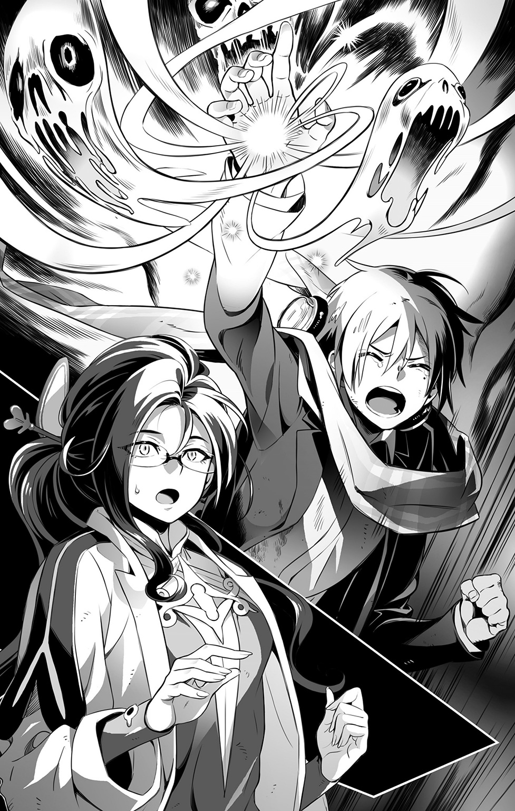
石ころを投げこんだ水面に、大きな波紋が広がっていくように。
「すごいわ......」
自らの置かれた状況を忘れたかのように、シャリマは感嘆の声をあげる。
「こんなにも大きな門―――やっぱり、あの子こそが......」
つぶやきはその半ばで、虚空へと吸いこまれてゆく。
不可視の竜巻に巻きこまれたかのように、その場にいた者たち全てが螺旋を描きながら宙へと舞いあがり―――やがて、この世界から消滅した。
４ 幻想氾濫 ～Aliens of Nagimiya～
「わあああああぁぁぁぁぁぁ......っ!?」
自らの叫び声に弾かれるようにして、ミコトは再び、目を覚ました。
全身が汗だくで気持ち悪い。鈍い頭痛も残っていた。
けれどそんなものは、赤く腫れた目をこすって顔を上げた瞬間、彼方に吹き飛んだ。
「そんな......ウソ......だろ？」
そこはもう、絶体絶命の危機にあった、あの夜の山道ではない。
ひんやりとした朝の空気が心地よい、やけに静かな雑木林の中だ。
そう―――あの高台の公園にある、見慣れた場所とそっくりな。
まさかと思って立ち上がり、こわごわと周囲を確かめる。
「戻ってきてる......」
天使の彫像。芝生とコンクリートの縁石。規則正しく並んだ常夜灯のポール。
遠くから聞こえるバイクの音は、新聞配達かなにかのものだろう。
「俺、戻ってきてる......元の世界に、戻ってきてる......」
うわごとのように繰り返しながら、へなへなとミコトはその場に座りこんだ。
逃れられないはずの最悪の結末から、まるで奇跡のように逃れることができたのだ。
「は、はははは......あはははははは......っ」
その安堵感は計り知れない。
（悪い夢を見てたみたいだ......。うん、きっとそうだ。そうに違いない）
よろよろとミコトは立ち上がり、家路に向かって歩き出す。
今日は連休の最終日。明日から始まる授業に備えて、休んでおかなくては。
「制服の替え、確かクリーニング屋からとってきてあったよな......」
泥と血にまみれているうえに、あちこち破れ、ボロボロになってしまっている。
こっそり捨てるとしても、替えがなくなってしまうのは困りものだ。
適当な理由をつけて、叔父に新しいのを買ってもらうしかあるまい。
「プレーヤーのほうも、買い換えなくちゃな」
こっちは貯金でなんとかするしかあるまい。データはＰＣのライブラリにストックしてあるから、それだけは幸いだった。
「あと......なにか、忘れちまってることは......」
通過してゆく車の起こした風にあおられて、淡い香りがミコトの鼻をくすぐった。
心を落ち着けてくれる効能があるのだと、彼女が教えてくれた香り。
寒くないようにと借してくれたものをいただいて、ずっと、ずっと大切にしてきた宝物。
マフラーのはためく音が、忘れてはいけないと警鐘を鳴らす。
「シャリマ!? デュウ!?」
慌てて二人の名を呼んでも、当然、答えは返らない。
公園にとって返したところで、結果は同じだった。
彼が守ろうとした者たちは、どこにもいない。
（置き去りにしちまったっていうのか、俺は......）
無意識とはいえ、もし自分ひとりだけ逃げ出してきたのだとしたら。
彼は、とても自分自身を許せそうにない。
「助けに行かなくちゃ......」
だが同時に、ミコトは躊躇もしていた。
（もう一度向こう側に行ったところで、いったい俺に何ができるっていうんだ？）
自分がしたことは、状況をただ混乱させただけではなかっただろうか。
ミコトがいなくても、シャリマはデュウによって救出されていただろう。
むしろ二人は、無謀な潜入を試みたミコトを助けようとして無茶をしたのだ。
役に立つどころか、巻きこんだのは明らかに自分ではないか。
「なんだかわからない力に目覚めたって、俺、ちっとも役に立ってない......」
結局、守っていたのは自分のことだけ。その極みが、今のこの有り様だ。
「ダメだ、このままじゃ......」
またしても自己嫌悪に陥りかけた気持ちを奮い立たせるように、ミコトはぎゅっと歯を食いしばった。もう何度も同じループを繰り返して、そのたびに思ったのではないか。
（結局、何ができるかじゃないんだ。俺自身がどうしたいかなんだ）
身勝手をさらに重ねることで、また余計な厄介事を招いてしまうかもしれない。
だとしても、やっぱり途中で放り出すことは、彼にはできなかった。
（関わらないほうがよかったっていうのは、望んだ結果がでなかったことに対する弁解だ。そこでおしまいにするってことならそれでいい。だけど、俺は......）
まだ、あきらめていない。あきらめたくないと思っている。
（だったら、納得できるまで関わり続けるしかない！）
不安も恐怖も、あんな経験をした今だからこそより強く感じている。
それでも、ミコトは決意した。
二人を助けるために、もう一度、リィンバゥムに戻ろう―――と。
が、そのためには相応の準備も必要だった。
なるべく音を忍ばせて自宅のドアを開けると、ミコトは急ぎ足で自分の部屋に入った。
汚れた制服を脱ぎ捨てて、替えの制服と下着を手に、浴室へと向かう。
頭から温かいシャワーを勢いよく浴びていると、疲れが和らいでいくのがわかる。
人心地つく、とはこういうことをいうのだろう。
さっきまでの自分には、そうしたゆとりが徹底的に欠けていた。
（がむしゃらに再突撃したって、それじゃなんにもならないもんな）
はからずもこうして、こちら側に戻ってきてしまったのだ。
少しでも体力を回復して、備えられる準備をしなくてはならない。
（今度こそ、絶対に悔いを残さないように！）
裸になってみてわかったのだが、幸いなことに、怪我らしい怪我はのこってないようだった。
おそらく無意識のうちに、あの不思議な力が発揮され、守ってくれていたのだろう。
（ぼうこん、ってあの兵士は言っていたけど......）
辞書をひいてみるべきかもしれない。こちら側でも通じる言葉なら、よいのだけれども。
着替えを済ませ、髪の水気をごしごしとタオルで拭っていると。
「ああ......そうか。もう帰ってきていたのか、ミコト」
不意に背後から、叔父が声をかけてきた。
「あ、うん......。ただいま、叔父さん」
後ろめたさに顔向けできず、洗面台の鏡に映った叔父をチラ見して、ミコトは返事する。
「起こしちゃってゴメン。顔を洗いに来たんだったら、すぐにどくから」
「いや、いいんだ。お前が帰ってきてるってこと、ちゃんと確かめたかっただけだからな」
そう答えた叔父の表情が、ミコトにはいつもより優しげに見えた。
心配させて―――いたのだろう。気づいてなかっただけで、今までもずっと。
今のミコトには、ようやくそれがわかった。
（ごめんなさい、カイ叔父さん）
噓をついて隠してきたことの全てを話して、きちんと謝らなくてはならないだろう。
だけどそれは、今抱えていることへの決着がついてからだ。
「お腹へってるだろう？ 簡単になにか用意するから、食べてから出かけなさい」
「うん」
今は、もう少しだけ甘えさせてもらおう。
不器用な叔父の気遣いに感謝しながら、ミコトは振り向き、はにかんでうなずいた。
ベーコンエッグにトースト。ブロッコリーとニンジンの温野菜。ホットミルク。
さして手間もかかってないそれらが、ミコトにはとても美味しく感じられた。
昨夜からずっと飲まず食わずだったことを、今さらながら思い出す。
「慌てずによく嚙んで食べなさい。足りないようなら、これも。私の分はまた別に用意するから」
コーヒーを片手に、叔父はそう言って、新しい食パンをトースターにセットした。
ありがたくうなずいて、ミコトは二枚目のトーストにマーマレードを塗り始める。
「ＴＶでもつけるか」
そう言って、叔父はリモコンを手に取った。
彼もまた、久しぶりにまともに向かい合った甥を前にして、なにをどう話したらいいのか戸惑っているのだろうか。
（そういうとこ似てるのかもな。やっぱ、血縁なんだし......）
くすっと笑って、マグカップを手にとった時。
緊急報道のテロップとともに、にわかには信じられない光景が液晶画面に映し出された。
◆
『......繰り返します、これはＣＧ合成などではありません！ れっきとした生中継です!!』
興奮しきったレポーターのあげる声が、現場の混乱の様子をダイレクトに伝えていた。
ＴＶカメラは素人撮影のようにがくがくと揺れながらも、それでもなんとか彼らが今、実際に見ている光景を伝えるべく、やっきになっているようだった。
「あれは―――那岐宮スカイブレードなのか？」
叔父の問いかけに、ミコトは画面に見入ったままうなずく。
特徴的なそのシルエットを、俯角気味にカメラはとらえていた。
よく晴れた空に銀色の切っ先が映えて、名前どおりの偉容を誇っている。
だが、カメラが追っているのは、その周囲を旋回している奇怪な存在のほうだった。
アップとロングをひっきりなしに繰り返し、ようやくピントが合った時。
まるで威嚇するかのように、そいつは甲高い咆吼を轟かせた。
「あれは―――ワイバーン!?」
身を乗り出して、ミコトは叫んでいた。
間違いない。
あの追跡を受けた夜、彼らの荷馬車の行く手を阻んだ異世界の飛竜が、そこにいた。
迫力がありすぎる映像に配慮したのか、間もなく、カメラはスタジオへと返された。
ニュースキャスターが、緊張を隠せぬ面持ちで、現在わかっていることを述べはじめた。
『今朝未明、那岐宮スカイブレード上空に、正体不明の生物が出現しました。第一発見者によりますと―――』
突如として空に穴のようなものが開き、そこからそいつは落ちてきたのだそうだ。
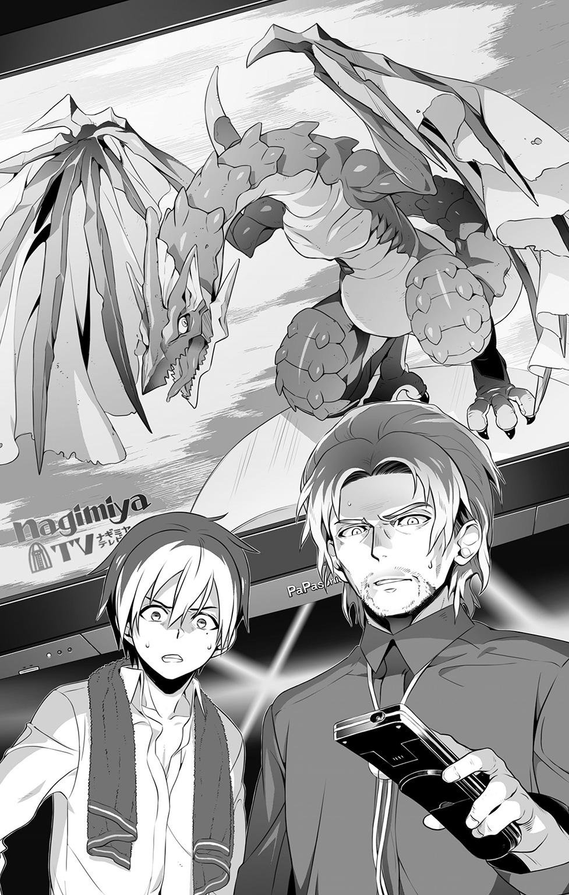
そしてそのまま、電波塔を止まり木代わりにしながら、周囲を飛び回っているのだという。
『報告を受けた政府は現在、緊急会議を開き対応を協議しております。自治体の長は付近の住民に対して、警察官の指示に従い、順次避難をするようにと―――』
そこまで聞いて、ミコトはもうじっとしていられなくなった。
「どこへ行くつもりだ!?」
強い声で、叔父が彼の動きを制した。
駆け出そうとした足を止めて、ミコトは叔父の顔を見る。
今まで見たことのない、それは険しい顔だった。
「まさか、あのワイ......化け物のところに、行こうっていうんじゃないよな？」
一瞬だけ目をそらして、それでも結局、ちゃんと叔父に向き直って。
ミコトはうなずいた。
「どうして行くんだ？ 面白半分な気持ちからでないことは、私にもちゃんとわかっているつもりだが」
「多分、俺の......せいだから......っ」
震え声で、ミコトはようやくそう言った。
困惑しつつも、あくまで穏やかに事情をたずねてきた叔父。
なのに、事情の全てを話せないことが、ミコトには悲しかった。
以前のように、叔父のことを信用していないからというわけではないのだ。
（でも、あまりに話がとんでもなさすぎて......伝えられないよ、こんなこと......）
隠し事に対する後ろめたさと、それが招いてしまった事態の大きさ。
それらが彼の心をひどく苛んで、不安と後悔でしめつけてくるのだ。
「あいつは......俺が......連れてきちゃったから......だから、責任......とらなくちゃ......っ！」
たまらなくなって、走り出す。
「待ちなさい、ミコト！」
呼び止める声を無視して、外に飛び出す。
（間違いなく、俺のせいだ......）
向こうの世界との門を開くことができるのは、ミコトだけだと、シャリマも言っていた。
今の召喚師たちにそんな技術はない。だからこそ奇跡なのだと。
（あっちの世界から逃げようとした時、あいつまで一緒に連れてきちまったんだ！）
自転車に飛び乗ると、すさまじい勢いでペダルをこぎ出した。
逃げるのではなく、立ち向かうために。
「送り返さなくちゃ......」
責任をとらなくちゃいけない。門を操れる存在が自分だけだというのなら、迷いこんできてしまったあの飛竜を、元いた世界に還してやらなくてはならない。
強い自責の念が、ミコトを衝き動かしていた。
◆
坂道をまっしぐらに遠ざかっていく、ミコトの姿を見つめながら。
彼の叔父であるカイは、やるせなさに唇を嚙みしめていた。
「なんということだ......」
こんなことになってしまわないようにと、あれほど気を配り続けていたというのに。
あえて何もかも全てを、自分一人で背負ってゆこうと決めていたのに。
これもまた、数奇なる星の巡りの導きだとでもいうのだろうか。
「いや―――結局のところ、全ては私自身の過ちの結果でしかない、か」
頭を振って自己弁護を封じてから、彼もまた覚悟を決める。
あえて目をそらし続けてきた、己の罪を受け入れ、その報いを受けるという覚悟を。
たとえ未来永劫、あの子に憎悪と蔑みの目を向けられることになろうとも。
「守ってやらなくては。あの子の存在だけが、この世界で私が生き続けてきた理由なのだから」
部屋の隅に積まれた書籍の山の一角を崩し、奥に隠してあった包みを取り出した。
それを小脇に抱えて、彼もまた部屋を出る。
向かうべき先は、今ミコトの目指している場所とは違う。
おそらく彼がさっきまでいたであろう、あの高台の公園だった。
◆
市街地に近づくにつれて、周囲の空気が騒然としてゆくのが肌で感じられた。
窓を閉め、扉を閉ざし、建物の中で息をひそめている人々。
役所の巡回車から聞こえてくるアナウンスに従って、誘導を待っているのだ。
『落ち着いてください。飛行生物は未だ電波塔付近におり、ただちに周囲に害をもたらす様子は見られません。市民の皆さんは当局の避難指示に従って、順番に待避行動を―――』
今日が休日でよかったとミコトは思う。これが平日なら、通勤通学の人々を中心に、あちこちで深刻なパニックが起きていたに違いなかろう。
当事者である彼にとって、それはまた新たな悔恨となっていたはずだ。
刻々と人の姿が見られなくなってゆく道を、ミコトの自転車は走り続けた。
パトカーのものとおぼしきサイレンが聞こえるたび、横道にそれてやり過ごす。
下手に見つかれば、自宅まで強制連行されてしまうのはわかりきっている。
「まさか、あの化け物の関係者だって名乗り出るわけにもいかないしな」
呟いてみて、我ながら戯言だよなと苦笑する。
いくら真実だといっても、必ず信じてもらえるとは限らないということだ。
「ともかく、一体どうやってあいつのところまでたどり着くかを考えなくちゃ」
ＴＶのあの様子からして、スカイブレード周辺はすでに厳戒態勢になっているだろう。
監視の目をかいくぐって忍びこむなどという芸当は、自分にはとても無理だということは、さすがにミコトも思い知っている。ならば、別のよい知恵をしぼらなくてはならない。
（俺が行ってやれないんだったら......なんとかして、あいつを俺のところまで呼び寄せることはできないかな？）
ふと思いついて、ミコトは自転車のハンドルを握る己の右手を見つめた。
この手が放つボウコンとかいうあの光を使えば、もしかしたらできるかもしれない。
荷馬車を追ってきた隊長を足止めした時、無我夢中ながらも自分はこの力を制御し、弾丸のように放つことができたではないか。
あれと同じことをすればいい。そうすれば、飛竜は自分に向かってくる。
なんとかあいつの襲撃をやり過ごして、門を開いて送り返せば―――。
「............」
できっこない、と口にしかけた本音を、ミコトはあえて嚙みつぶした。
無茶は承知のうえで、それでも放っておけなくて、こうして飛び出したのではないか。
途中放棄して逃げだした後の惨めな気持ちは、もうこれ以上味わいたくなかった。
可能性がゼロではない以上、自分にできるのは少しでもその確率を高めてゆくこと。
失敗を恐れていては、それさえままならなくなってしまう。
（俺は勇者でも英雄でもない。なろうとしたってなれないだろうし......あれだけ怖い目にあった今は、冗談でもそうなりたいだなんて、言えやしないよ）
きっと―――彼はただ、普通になりたかったのだ。
自分をとりまく全てのものを、違和感なく受け入れて、毎日を暮らしてゆく。
楽しいことばかりじゃなくていい。泣いたり、怒ったり、つらい思いをしてもいい。
当たり前のことを当たり前に感じられれば、それでよかったのだ。
異世界での暮らしに魅かれていったのも、きっとそれが本当の理由。
けれど、シャリマは言っていた。
他者より秀でた力を与えられた者には、相応の責任が課せられるものだと。
異界を自由に渡る術を得た時、ミコトもまたそうした異能者の一人となったのだ。
偶然であろうと、必然であろうと、確定した事実はもう覆らない。
「だったら、もうやってやるしかないだろう！」
自分自身を叱咤するように、言葉に出してミコトは確かめる。
「勇者だって、英雄だって―――きっと、最初は俺と同じだったはずなんだ」
なにがしかの結果を残したからこそ、後にそう讃えられているだけであって。
同じ志を持ちながら、果たせず散った者たちは、きっとその何倍もいたに違いない。
知られず、忘れられているだけで、絶対にいたはずだ。
あるいは、ミコトもそうなってしまうかもしれない。
怒りくるう飛竜の餌食となって、なにもできずに食い殺されてしまうかもしれない。
「それでも、やっぱさ」
引き下がれない―――それが、ミコトの最終結論だった。
案内標識の表示が、もうすぐスカイブレードに到着することを報せる。
自転車を降りて、彼は空を見上げた。
剣のような電波塔。その重みを支えるために、まるで柄のごとく左右に伸びる補助支柱。
それを止まり木にして、飛竜は休んでいるようだった。
（この近くで、少しでもあの高さまで届きそうな建物は......）
周囲のビルを物色しながら、ゆっくりと歩いてゆく。
不意に通りの向こう側から響いてきた爆発音が、その足を止めるまでは。
◆
炎上しているのはパトカーだった。
それを行ったのは、こことは違う世界から召喚された、鋼の機械兵器だった。
「......だから、俺にかまうなって言ってんだろうがッ！」
血走った目を見開いて、帝国軍のあの新兵は、目の前で尻餅をつく警官を恫喝した。
おそらくは威嚇目的で放ったのであろう召喚術の弾丸は、ボンネットを貫き、内燃機関に引火してしまったようだ。爆発と炎上はその結果だった。
「この馬鹿者！ 無闇に手をあげるなと、あれほど......」
「先にちょっかいを出してきたのは、こいつらじゃないですか！」
慌てて間に入った隊長の叱責に、新兵は逆に食ってかかる。
「こっちの言ってることは全部たわごと扱いで、問答無用で引っ立てようとしたんですよ。帝国軍の誇りにかけて、舐めた真似だけはさせるなって、教えたのは隊長でしょ!?」
隊長は唸った。ここが帝国領ならば、彼のとった態度は確かに正当だといえるのだ。
しかし、現状はそうではない。
（いったい、俺たちはどこに連れてこられてしまったというんだ!?）
亡霊使いの少年の叫びが響き渡り、その咆吼が虚空を裂いて。
あの場にいた者たちは皆、夜空に生じた亀裂の中へ吞みこまれてしまった。
あっという間に意識が遠くなり、気づいた時にはもう、世界が一変していた。
野山も森も消え失せて、ただ無機質な色をした、無数の高い塔が立ち並んでいた。
地面さえ黒い汚泥によって塗り固められた、生命の営みを拒否するような風景。
このような場所が帝国領に―――否、リィンバウムに存在するはずがない。
そう確信するほどに異質だった。
『ここって、【機界】......なのかも......？』
そんな部下のつぶやきが当座の指標となった。根拠は、機械仕掛けとおぼしき品々が散見されること。聞くところによれば、ロレイラルの都市はその機能の多くを機械に代行させており、それゆえに人はあまり外を出歩かないらしい。なるほど、現状と一致している。
そこがいわゆるビジネス街であり、日曜の朝という条件も重なって、極端に人通りが乏しくなっていることなど、異界からやって来た彼らが知るよしもない。
とにかく周囲を一望してみようということになり、審問召喚師が下僕たる飛竜を召喚しようとした時、重大な異変が発覚した。
『呼びかけに応じません......。気配は感じられるのですが、どうして......？』
なおも強く【誓約】に訴えかけることで、その理由は明らかとなった。
周囲の建造物より群を抜いて高い、まるで巨大な剣を思わせるような尖塔。
そこから飛び立った飛竜は、暴れ馬のごとき勢いで周囲を旋回しながら、威嚇の咆吼をひっきりなしにあげ続けていた。
『召喚術の暴走だ......』
飛竜は召喚主たる審問召喚師の制御下を離れ、命令を受けつけなくなってしまったのだ。
おそらく、直接あの異変に巻きこまれてしまったことが原因なのだろう。
試しに隊長と新兵がそれぞれの召喚術を用いたところ、天使も機械兵器も普段どおりに喚び出すことができた。ただし―――魔力の消耗だけは、常よりも激しいようだった。
『ある程度まで近づけさえすれば、再び制御下に置くことも可能なはずですから！』
審問召喚師の懇請に押されて、隊長は飛竜の舞う剣の塔に向かうことにしたのである。
怪物騒ぎで緊急配備されていた警官たちの一隊が、彼らと遭遇してしまったのは、お互いにとって不幸としかいいようのない成り行きであった。
そして―――押し問答の末に、現在に至る。
「なんということを......」
青ざめた顔で、審問召喚師は狼狽している。
彼の見立てでは、この制服の一団は現地の守備兵と思われた。戦力的にはお粗末なもののようだが、治安機関に楯突いたという事実は、交渉時に不利な材料となってしまう。
やはり、彼からは召喚石をとりあげておくべきだったか―――今さらながら後悔するが、自身が召喚師としての役割を果たせていないなかで、偉そうなことは言えなかった。
「ここから撤退するぞ！ これ以上、下手に騒ぎを大きくしてはならん!!」
賢明なその判断を、だが新兵は一笑に付した。
「撤退ぃ？ あっははは......どこに、逃げ場があるって言うんですかァっ!?」
自暴自棄な叫び声と同時に、まき散らされた銃弾の雨が、ビルの壁面に降りそそいだ。
割れ落ちたガラスとコンクリの破片が、路面に次々と激突して、凄まじい喧噪をたてる。
なんとか安全圏へと退避した警官たちは、必死の形相で本部に応援を要請した。
正体不明の武装集団と遭遇。敵は重火器を携行し発砲。適切な対処を求む―――と。
「逃げ場なんてどこにもないんですよッ！ 俺たちは、きっともう帝国には帰れない......この胸くそ悪いにおいのする、墓場のような世界で、野垂れ死ぬに決まってるんですッ!!」
切羽詰まった声で叫びながら、新兵はぼろぼろと涙を流していた。
「もう、どうにでもなっちまえばいいんだッ！ ひっはひひ......っ、なにもかも滅茶苦茶になっちまえばいいんだァ～ッ!!」
泣きながら、無差別に攻撃を繰り返す。
（これは......あの少年の操る亡魂の攻撃を、まともに喰らってしまったせいなのか？）
亡霊が放つ様々な悪念は、生き物の魂に直接影響を及ぼす。弱い者なら精神に変調をきたすし、生命力そのものが枯渇して死んでしまうことさえあるという。
新兵のこの錯乱は、むしろ予期されてしかるべきものだった。
急変し続ける事態に惑わされて、その兆候を見逃したことを隊長は悔いた。
自分の召喚術を用いてさえいれば、こうなる前に処置できたのかもしれないのに。
（いや、まだだ......。まだ、今からでも遅くないはず）
なんとかしてあの若者を落ち着かせ、天使の奇跡を用いて治癒しなければ。
隊長である彼にとって、今や、あの新兵だけが唯一の直属の部下なのだ。
絶対に助けなくてはならない。なんとしてでも、一緒に生き延びて帰らなくては。
けたたましいサイレンの音が、四方八方から近づきつつある。
覚悟を決めて、彼が剣に手をかけたその時。
またしても―――事態は急変する。
「やめるんだ!!」
そう言って、新兵の前に立ちはだかったのは、あの亡霊使いの少年だった。
◆
「そんなことしちゃダメだ！ 貴方たちが暴れれば暴れたぶんだけ、この世界の人たちも同じようにやり返そうとするに決まってる......それぐらいのこと、わかるでしょう!?」
「知ったような口を利くんじゃねェよッ!!」
新兵の悲痛な怒号は、ずっと抑えつけていた隊長の本心でもあった。
「テメエが連れてきたんだろうッ!? テメエが......っ、テメエが関わったからっ！ 何もかも、無茶苦茶になッちまったんじゃねェかよおォォ～ッ!?」
真っ向からの弾劾に、ミコトはぐっと唇を嚙んで耐えた。
そのとおりだ。申し開きもできない。でも、だからこそ―――。
「俺は、貴方たちを救うために来たんだ！」
爆発の原因を確かめるべくやってきてすぐに、彼らが警官に対して揉め事を起こしたのは理解した。苛立った新兵が召喚術で無差別に乱射し、周囲を破壊していくのも見た。
それでも、見ないふりをして立ち去るのではなく、ミコトは彼らの前にその姿を晒した。
逃げるのではなく、償い、可能ならば理解してもらうために。
「俺の力ならきっと、貴方たちを元いた世界に送り返すことができるから！ だから、話をちゃんと聞いてくれ......武器をおさめて、俺の話を......」
返答は、容赦なき銃弾の嵐だった。
「今さらッ、ムシのいいことほざくんじゃねエエェェッ!!」
「そんなことわかってる！ ううん......やっとわかったから、だから俺は......ッ!!」
右掌をかざして、ミコトは必死に彼の怒りを受け止めた。
弾避けとなって霧散してゆく亡霊たちの叫びが、おんおんと耳元で鳴り響く。
その非難めいた音色からも、今のミコトは逃げない。
「受け止めたうえで、できることをしたいんだ！ 悔いはもう、残したくないんだ!!」
心の底から本気で願った叫びに、掌の光が、その勢いを増す。
そしてミコトは初めて、真正面から自分自身に生じた異変に向き合うこととなった。
右掌の中央部がぱっくりと横に裂けて、その奥から何かが盛りあがってくる感覚。
血の糸を引いて露出したその物体は、明らかに人体には存在しない異物だった。
（これが......俺が目覚めた力の正体......）
それは親指大の宝石だった。綺麗な半球状に磨かれたそれは、明らかに人工物であるにもかかわらず、埋没部分は完全に彼の肉と癒着しているようだ。
端から見れば、まるで、掌に巨大な瞳が生じたかのような錯覚を引き起こす。
シーン効果によって浮かびあがる光沢の軌跡は、まさに瞳孔のようであった。
（いつの間に、こんなものが俺の手に？）
当惑しつつも、さらにミコトは掌中の瞳の正体を見極めようとする。
放たれる光こそ紺瑠璃色であったが、宝石そのものはむしろ透明に近いようだ。
不規則に彩度と明度を変化させながら、炯々と光を放ち続けている。
そのゆらめきに呼ばれて、周囲から集まってくるかそけき光の束こそが亡魂だった。
拒むことをやめた今のミコトには、おぼろげながら、それがなんであるのかがわかった。
（亡くなった人たちのかそけき声が集まって、あの光へと変わっていたんだ......）
それが、ミコトを守ってくれた。
そして今もまた、こうして守ってくれている。
身勝手な思いこみかもしれないけれども、ミコトはそう思いたかった。
「もういいっ！ もうよせっ!!」
弾丸が尽きてもなお、機械兵器に攻撃命令を出し続ける部下に、隊長はしがみついた。
乱暴で優しいその力に押さえこまれて、ようやく新兵は脱力した。
そしてそのまま、子供のように泣きじゃくった。
「お前だけが苦しまなくてもいいんだ。帰れないなんて、絶望しなくてもいいんだ！」
そう言い切った隊長は、目の前までやってきたミコトへと視線を向けた。
今度こそ、偽りを述べることは許さないぞ―――と。
その目を見返したままうなずくことで、ミコトはそれを請け負った。
（よかった......）
勝算があったわけではない。今までと同じように、ただ必死なだけだった。
違いがあるとすれば、絶対に途中であきらめたりしないと、踏ん張り続けたことか。
けれどそのおかげで今、ミコトは自分が望んだ成果を手にすることができた。
こうやってひとつずつ小さなものを積みあげていったなら、与えられたこの不思議な力に対する責任とやらも果たせるだろうか。
シャリマやデュウ―――それにカイ叔父さんも、褒めてくれるだろうか。
◆
騒乱の現場から足早に立ち去った一行は、パトカーを避け、ビルの陰に身を隠していた。
「次は、あの飛竜をなんとかしないと......」
「我らもそのつもりでいた。召喚師殿が言うには、近づくことさえできれば再び制御することも可能とのことだ。それに賭けるしかあるまい」
ならばやはり、それが可能となる距離にまでたどり着かなくてはならない。
「先導は俺がします」
利用できそうなビルの目星もつけていたし、これ以上の混乱を避けるためにも、こちらの世界の住人であるミコトが水先案内人を務めるのが、一番最適なプランだった。
召喚術の治療を受けて寝入ってしまった新兵は、隊長が背負っている。
最後尾は召喚師が背後を警戒する形で、一行はビル街を進んでいった。
「共闘するのはあくまで一時的なものだ。お前が俺の部下たちにしたことの決着は、元の世界で改めてつけさせてもらう。そのつもりでいることだ」
食堂での惨劇のことを言っているだろう。
あえて、ミコトはそれが誤解であるとは抗弁しなかった。
絶対違うという確証が自分にないのもあるが、それ以上に、せっかくの共闘態勢が反故になってしまうことがこわかったのだ。
（それにいざとなったら、俺だけこちらの世界にとどまればいいんだしな）
うやむやにするつもりはないが、誤解だと証明するには相応の証拠が必要だろう。
冷却期間も兼ねて、すこし時を置いたほうがいいに違いない。
（にしても......いったい、あれは誰がやったことなんだろうな）
そんな余裕はなかったとはいえ、ろくに調べておかなかったことが悔やまれる。自分が犯人ではないと証明するための証拠が、ひょっとすると見つかったかもしれないのに。
そうこうしているうちに、目安をつけておいた建物に到着した。
事業縮小のために最近閉鎖されてしまった、昔ながらの百貨店のビルだ。
高さや距離だけなら他にもっと適した場所はあったが、侵入しやすいかどうかを考えると、この選択がベストだと思ったのだ。
「エレベーターとかは動いてないだろうけど、外付けの非常階段があるからそれを使おう」
上り口の扉を封鎖していた鉄の鎖は、隊長が剣で強引に断ち切った。
屋上十二階を目指して、一行は金属製の階段を登ってゆく。
「おおっ、こんな場所であったのか......！」
視点が高くなるにつれて開けていく眺望に、召喚師が感嘆の声をあげた。心にゆとりが出てきたことで、見知らぬ世界に対する知的好奇心がわいてきたのだろう。
「なんという整然とした町並みだ。道も開けていて、ずっと遠くまでつながっている」
「たしかにそうだな。が、俺はむしろそれが、なんとはなしに気に食わん」
感心する召喚師とは対照的に、隊長はなんとも言えぬ顔つきで言った。
「遠くに山川は見えるが、あまりにこの町は自然から遠すぎる。造り物に全てが埋めつくされていて、これではマナの恵みが地に届かぬのではないか？」
マナという言葉の意味は知らないが、隊長の言わんとすることは、なんとなくミコトにも理解することができた。
「これでも、まだ自然のことを考えてるほうなんです。もっと大きな都市になると、本当に緑そのものが見当たらなくなっているんですから」
「ほう、詳しいな？」
「まあ、それなりには」
「なるほど......な」
まさか自分が本来いた世界とまでは言えず、ミコトは曖昧にごまかした。
やがて、屋上に出た。
電波塔に居座った飛竜の姿は、そこからでもなお見上げねばならなかった。
それでも地上と比べれば、はるかに距離は近い。
警戒心をぴりぴりとまき散らしている異形の様子を、はっきり見てとれる程度には。
「どうだ、いけるか？」
「なんとか、やってみます」
大きく深呼吸してから、召喚師は胸元の護符を頭上に掲げた。
呪文の詠唱とともに、その中央部にある大粒のサモナイト石が緑色の光を増してゆく。
その輝きに誘われるようにして、飛竜が、ゆっくりと鎌首をもたげる。
（反応してる！）
召喚石の発する光が呼びかけているのだ。
ミコトの掌の光が、周囲の亡魂たちを呼び集めるのと同じように。
（だとしたら......俺の手の中にあるあれも、召喚石ってことにはならないか？）
右手の異物は、いつのまにか裂け目ごと綺麗さっぱり消失してしまっていた。
必要な時だけ現れるのだろうと納得することにしたが、やはりそこには何者かの作為が感じられて、据わりの悪いものがあった。
「来るぞ！」
剣を構えて、隊長が叫んだ。眠ったままの新兵は、給水塔の陰へと避難させてある。
召喚主の呼び声だとわかったのだろう。
歓喜めいた鳴き声をあげてから、ワイバーンはこちらに向かって飛び立った。
「よーし！ あとは、いったん送還してから、再召喚してやれば......」
完全に問題は解決する。そのはずだった。
―――パンッ！
喜色を浮かべていた召喚師の側頭部に、突如として深紅の華が咲いた。
糸の切れた人形のように、そのまま彼はぐにゃりと倒れこむ。
何が起こったかわからずに、絶句する隊長。
同じく混乱しながらも、事態を必死に把握しようとしたミコトは、それに気づいた。
少し離れた、ここよりも高いビルの屋上に人影が見える。
警官とはまた異なる装備に身を固めて、寝そべったまま、こちらを見つめている。
その前方に二脚によって固定されているのは―――。
「狙撃銃!?」
おそらくは警察の狙撃チームのひとりだろう。
一連の騒ぎによって招集されて、あそこに配置されていたのだ。
予想できなかったことではなかった。
暴れれば暴れたぶんだけ、この世界の人たちも同じようにやり返そうとするに決まっている―――そう言ったのは、ミコト自身ではなかったか。
（甘く見過ぎてたんだ......）
もしかすると警察は、彼らをあえて完全包囲せず、動向を見守っていたのかもしれない。
重火器による無差別攻撃を行った危険な相手なのだ。
場を整えたうえで、直接的手段で制圧しようという発想は、事件の早期収束のためには有効な選択に違いない。まして問題の飛行生物が、対象と接触しようとする動きを見せたのだ。即座に、それを阻止しようとしたことは理解できる。
だが、タイミングがあまりに悪すぎた。
―――シャゲエエエエエェェェェェェェェッ!!
飛竜が咆吼する。
せっかく見つけた召喚主とのつながりを断たれたことで、完全に錯乱状態に陥っていた。
涎を飛ばしつつ開かれた口の中で、パリパリと紫電の火花が明滅する。
「伏せろ！」
叫びながら、隊長はミコトを突き飛ばしていた。
それと同時に放たれた雷光が守護天使の翻す御旗へと炸裂し、目もくらむばかりの光と焦げ臭いにおいをまき散らした。
「あれは完全に暴走してしまっている。もはや、俺たちの手には負えん」
隊長の呻きが真実だと証明するように、飛竜は舞い上がり、ビルの谷間を疾駆する。
そこには包囲網を敷いている警官たちがいた。
複数の射撃音が鳴り響くが、ひとつとしてその巨軀には当たらない。
むしろその音に反応して、飛竜は再びその口から雷光を吐き散らした。
「逃げてぇぇーっ!!」
ミコトの叫びもむなしく、閃光の中から悲鳴と怒号が響き渡る。
「ダメだ......このままじゃ、絶対にダメだ......！」
なんとしてでも止めなくては、町が滅茶苦茶になってしまう。
必死に非常階段を駆け下りながら、ミコトは自分の本音に気がついた。
（なんだよ、俺......やぱり、こっちの世界のことも大切なんじゃないか......）
ならばなおのこと、自分にできることをしなくてはならない。
だが、どうすればいいのか。
地上に降りたその時、答えは彼のよく知る人物の手によって示された。
◆
「ミコト！」
「カイ......叔父さん!?」
飛び出してきた自分を追って、ここまで来たのであろうことはすぐわかった。
「間に合わないかと心配していたが、なんとか無事でなによりだ」
「あ、その、えっと......」
わかっている、と叔父は言った。
「お前がこことは違う世界―――リィンバウムと関わりをもってしまったことも、その結果として、あの飛竜がこちらの世界に召喚されてきてしまったのだろうということもな」
「!?」
知らないはずの異国の名や言葉を、カイはすらすらと口にした。
まるでずっと昔から、馴染みのあるもののように。
「聞きたいことはたくさんあるだろう。だが今はまず、私から話をさせてほしい」
そう言って、叔父が差し出したのは、泥にまみれたビニール包みだった。
「この品は本来、お前に与えられるべきものだった。授けられた大いなる力を意のままに行使できるようにと、私たちが苦心して作りあげたものだった」
ビニールをむしり取り、油紙をはがしながら、カイは言葉を続ける。
「だが、身勝手な私はそれを結局はためらった。お前が目覚めてしまわぬように、あえてこの品を埋めて隠し、口をつぐんでいたのだ。こちらの世界でならば、それでよいとな」
「もしかして、あの公園の雑木林に......」
無言で、カイはうなずいた。
「呼び合ってしまったのかもな。だが、これがお前を異世界に導いたことだけは事実だ」
なぜならば―――。
「俺もまた、お前の力によって、この世界に飛ばされてきたリィンバウムの人間だからだ」
ズレていたもののひとつが、ぴたりとミコトの中で嵌まった。
「そんな!? それじゃあ、俺も......」
この世界の住人ではないというのか。
「さあ、お前に与えられるべきだった品だ」
それは奇怪な形状をした籠手だった。しかも、右手だけの。
「正式な名はない。【制御籠手】と私たちは開発コードで呼んでいた」
「【制御籠手】......つまり、俺の右手の力を制御する道具だってことか!?」
「ああ、そのとおりだ。それを装着することで、お前の力は完全に目覚める」
カイはそれを認め、そのうえでミコトに選択を突きつけた。
「さあ、どうする？」
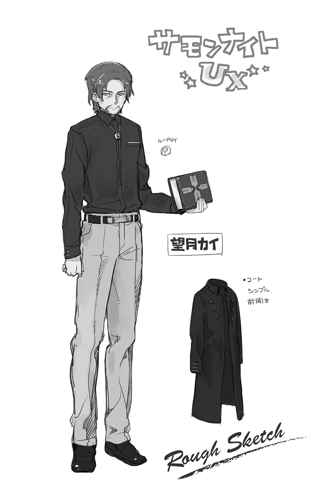
５ 剝落する現実 ～You are The Storager～
ミコトは駆ける。
もはや、人にあらざる速度で。地すらも踏みしめず。
宙を滑るようなその疾走を支えているのは、彼の右手の光に誘われた亡魂たち。
そして光り輝く右手には、あの無骨な【制御籠手】が装着されている。
『これを身につけたら最後、お前にもう逃げ場はなくなる。与えられた力に翻弄されて、平穏とは無縁の人生を送ることになるだろうな』
星宿と呼ばれる占星術を、十年近く繰り返した末の結論だと彼は告げた。
逃れる唯一の方法は、今ここできっぱりとその力を捨て去ってしまうこと。
この籠手を破壊してしまえば、それはたやすく叶う。
「にもかかわらず......私は、ついにそうすることができなかったんだがな」
苦い声で、カイはひとり呟いた。
もしかするとそれは、いつか帰りたいと願った自分の弱さだったのかもしれない。
得体の知れぬ世界にいきなり飛ばされてきて、何度死にたいと願ったことか。
それをためらわせたのは、まだ幼子であったミコトの存在だった。
贖罪の気持ちで必死に尽くし、なんとか幸せにしたいと願ってきたけれども。
「結局、あの子は自分の意志で苦難を選んだ......か」
止めることなど、できるはずがないではないか。
（今の俺なら、ちゃんとわかるよ。叔父さんが、どんな気持ちで俺に制御籠手を届けてくれたのかが......さ）
秘密を抱えていたことへの後ろめたさ。傷つけてしまうのではないかという葛藤。
そしてなにより、自分の存在を否定されてしまうのではないかという恐怖。
それはみんな、ミコトも味わってきたものだ。
だから、わかる。
あの人がどれだけ真摯に、自分のことを想ってくれていたのかが。
「だからこそ、俺は自分の意志でこの力を望む。望んだうえで......使いこなしてみせる！」
力がもたらす運命になんて負けたりしない。
あの人が安心できるように、しっかりとそれを証明してみせる。
そのための一歩が、今、この時だ。
「かそけき声たちよ―――我が導きに集いて、その怒りを示せ!!」
飛翔旋回する飛竜めがけて、ミコトは叫び、右手をかざした。
右手にあの光が灯ると同時に、籠手の内部から機械の駆動音が響き、同時にその表面がまるで生物のように脈動する。掌の宝玉と同様に、彼の身体と完全同調しているのだ。
―――クオオオオオォォォォォォォォォォォォォォォン!!
荒ぶる魂たちの咆吼が、光の槍となって具現化した。
ミコトはそれを摑むなり、力いっぱい放り投げる。
覚醒によって彼の身体能力は、以前とは比較できないレベルで向上している。
狙いは過たれることなく、槍は飛竜の腹部に炸裂した。
―――ギシェエエエエエエェェェ～ッ!?
宙にて身もだえしながら、苦悶の叫びをあげる飛竜。
外傷ができたわけではない。ミコトがそれを望まなかったからだ。
ただ不快なダメージを与えて、相手の注意をこちらに向けるのが狙いだった。
果たして、怒れる飛竜はその意図に乗ってきた。
―――シィギャアアアアアアァッ!!
口角をめいっぱい広げて、吐きかけられる雷電の吐息。
が、それは全てミコトの眼前で霧散していく。
掌を中心にして形成された亡魂の盾―――以前のそれとは比べものにならぬ屈強なそれが、浴びせられる電撃のことごとくを弾き飛ばしているのだ。
否、それだけではない。
「かそけき声たちよ―――その嘆きにて、我が敵を苛め―――」
雷光を伝うように舞い踊りながら、光の帯が幾重にも伸びて、巨獣にとりつく。
それは亡魂によって編まれた、無数の鎖だった。
飛竜の銃弾も通さぬ鱗に覆われた外皮を無視して、じわじわと食いこんでゆく。
ぞっとするような冷たさで、その血肉を、魂を萎えさせてゆく。
やがて、雷光がやんだ。
―――シギャア......ッ、ィギャアオオオォォォォゥッ！
力なき声をあげて、ついに飛竜は抵抗する力を失った。
飛ぶこともできずに落下してくるその巨体を、ミコトは光の鎖を網に変え、受け止めた。
横たえられたまま、おびえた瞳を向けてくる飛竜。
「心配しなくていい。お前を殺すつもりなんてないから」
召喚主が死んでしまった今、元いた幻獣界には還してやれないかもしれないけれど。
せめてリィンバウムのほうが、この世界よりずっと暮らしやすいはずだ。
軍に引き取ってもらってもいいし、デュウが遊んでいるあの森に放してやってもいい。
屋上で待っている隊長たちと合流したら、門を開けて、彼らのいた世界に送り返す。
それで、当座の問題は解決だ。
細かな後始末については、叔父と相談したほうがよいだろう。
まだまだ聞きたいこともあるし、それ以上に、きちんと自分がやり遂げたことを報告して、安心させてやりたかった。
「よし！」
屋上まで一気に跳んでゆこうとした、ミコトのその視界に。
「？」
そこから吹き飛んで落下してゆく、何者かの影が映った。
「!?」
その正体を確認するよりも早く、嫌な予感に衝き動かされて、彼は疾駆していた。
だが、いくら超人的な力を得た彼といえども、間に合わない。
必死に手を伸ばそうとした、ミコトのその眼前で。
その人影はコンクリートに叩きつけられ、バウンドしつつ、真っ赤な血を飛び散らせた。
「隊長さんっ!? しっかり、しっかりしてください!?」
転落してきたのは、あの隊長だった。
胴体がいびつな角度にねじ曲がり、折れた肋骨が胸部から飛び出している。
それでもまだ、かすかに息があることが、むしろ奇跡だった。
「すま...な......っ。ゆる......て......くれ......っ」
ミコトの顔をそこに認めるなり、虚ろな声で、彼は呟いた。
「あく......っ......お......っく......ま......」
そして、そのまま吐血する。それっきりだった。
警察がやったのか、とミコトはまず疑った。しかし、彼の身体に銃創はない。
その代わりに、もっとおぞましい傷跡があった。
「なんだよ、これ......」
腹部に、無残な大穴が空いていた。まるまるその部分をくり抜きでもしたかのように。
身体が捻れてしまったのは、その欠損ゆえ、ひしゃげた結果だったのだ。
落下以前に、すでに彼は致命傷を受けていたということになる。
もっとも、それはミコトにとってなんの慰めにもならないことであったが。
「なんで......せっかく、帰してあげられると思ったのに......っ」
警察の武装で、こんなことができるはずがない。
自分のこの力や召喚術のような、別の世界の理が働いたとしか思えない。
（いったい、誰がやったんだ？）
悔し涙を拭うミコトのその肩に、不意に優しく触れる者があった。
◆
「捜したわよ、ミコトくん」
「シャリマさん......？」
いたわるように彼を見つめていたのは、あの追跡の夜以来、離ればなれになっていたシャリマだった。
「そんな......俺てっきり、向こうの世界に置いてきちゃったって......」
言いかけて、ミコトは自分の迂闊さに気づく。
帝国兵や飛竜も巻きこまれたと判明した時点で、彼女たちだけが逃れられたと考えることこそ無理があるというものではないか。思い直して、自分の迂闊さにぞっとする。
（危うく、見過ごしちまうとこだった）
彼女の話によれば、ずっとデュウと二人でミコトを捜していたのだという。
「ここがミコトくんの世界だってことは、話を聞いていたおかげですぐにわかったから」
怪しまれないよう、最初から人目を避けて行動していたのだという。
そのせいで、今の今まで合流できなかったとも。
「貴方がたった一人で、あの飛竜に立ち向かっていった時は、どうなるかと思ったわ」
「見てたん......ですか......」
興奮気味にうなずく彼女に対して、ミコトの表情は暗かった。
「あんなことができるなんて、俺、やっぱ普通じゃないみたいです。人間じゃないのかも」
「人間じゃなくたって、別に構うことないじゃない！」
「......え？」
慰めの言葉―――そう聞き流すには、どこか引っかかるものがあった。
うつむきかけていた顔を上げて、シャリマの顔を見る。
笑っていた。
本当に嬉しそうに、きらきらとした瞳で笑っていた。
「なんで笑えるんですか!?」
思わず、ミコトは食ってかかっていた。
「目の前で人が死んでるんですよ!? 兵士だったとはいえ、死んでるんですよ!?」
そうね―――と、彼女は笑うのをやめた。
「思ったよりも役に立たない男だったわ。嚙ませ犬にさえなれないなんて、本当にクズ」
吐き捨てた言葉は、無慈悲そのもの。
のみならず、ミコトにとっては聞き逃せないことを暴露していた。
「嚙ませ犬って......なんですか、それ......」
それには答えず、彼女はミコトの右腕を取り、装着された【制御籠手】を見つめた。
「ちゃんと継承できたのね。偉いわ、ミコト。ふふっ、これは嬉しい誤算だわ」
物々しいその装飾にも臆することなく、むしろ愛しげに頰ずりまでしてみせる。
思わず、ミコトは飛び退いていた。
「なにを......言ってるんですか？」
目の前にいるのは、本当に自分の知っているシャリマなのか。
そんな疑念が浮かんでくるほどに、今の彼女には違和感があった。
「ミコトこそ、どうしたの？ おかしな子ね......」
当たり前のように彼の名を呼び捨てにして、艶然と微笑む彼女。
くらくらする香りが、いつの間にか二人の周囲に満ちている。
（あ......れ......？）
ミコトの中に芽生えかけていた警戒心が、その香りによってやんわりと抑えつけられ、なかったことのようにされてゆく。
「さあ、帰りましょう？ 向こうでデュウも待ってるわ」
「うん......」
うなずき、彼女の差し出す手を取ろうとしたその時。
「だまされるな、ミコト!!」
鋭い叔父の叱咤が、彼を幻惑の魔の手から解き放った。
我に返ったミコトは、シャリマから距離をとりつつ、現れた叔父を見る。
「そうか......そういうことだったのか......！」
叔父は、初対面であるはずのシャリマに対して、なぜか憎悪の目を向けていた。
まるで、積年の怨敵を前にしているかのように。
そんなミコトの直感は、まさに正しかった。
「全部、お前が糸を引いていたんだな―――シャマード・リッツァー！」
◆
「ご挨拶ね、カイロス」
かつての名で呼ばれたことをまるで取り繕いもせず、シャマード―――シャリマという偽名を名乗っていた女召喚師は、肩をすくめてみせた。
「何年ぶりかの再会だっていうのに、つれなすぎるわ」
「私は、二度とお前に会いたくなどなかった！」
ふりしぼるような声で、彼はそう応じた。彼の名乗るカイという名もまた、シャリマと同じく偽名だったのである。
（二人は......知り合いだったのか!?）
事の推移についていけずに戸惑うミコトの前で、再会した二人は対峙する。
「この子を見つけたのは本当に偶然よ。デュウが連れてきたから、興味をもったただけ」
素性を聞いている時も、異界から来たというのは眉唾だと思っていた。
だが現実に、目の前で門が開くのを見た時、彼女は気づいたのだ。
「その子の右手に【制練石】が埋めこまれているってことにね」
それはすなわち、彼女が最初からミコトの力の存在に気づいていたということ。
のみならず、その正体を知っているということでもあった。
「【制練石】―――」
今は閉じられている右掌のその部分を見つめて、ミコトは思わず復唱する。
そうよ、と女召喚師がそれに応える。
「貴方のその力は偶然に授かったものじゃない。多くの研鑽に基づく綿密な計画によって、意図的に与えられたものなの。その証こそが―――【制練石】」
「やめろ、シャマード！ その子はまだ、何も知らないんだぞ!?」
「あら、そうなの？ なら、なおのことちゃんと教えてあげなくっちゃね......」
ぺろりと唇を舐めて、シャマードは嗜虐的な笑みを浮かべる。
「【制練石】はね......エルゴの王にゆかりのある、とても貴重なものから作られたのよ」
聞き覚えのある単語だった。
四つの界のエルゴたちの力を借りて、リィンバウムの危機を救った伝説の英雄。
絵本で読んだのだ。
「その遺産たる力のひとつを、ある召喚師たちが手に入れた。けれど彼らにとってそれは、あまりにも過ぎた宝だったのよ。使いこなせなかったの」
世界を滅ぼす魔王召喚の触媒として用いられることとなったそれは、召喚主の未熟さによって暴走した結果、粉々に砕け散って失われてしまった―――そう思われていた。
「だけど、私は見つけだした！ 儀式の跡地にわざわざ足を運んで、抉られた大穴の中を這いずり回って、いくつかの破片を見つけ出すことができたの!!」
霊界サプレスの【エルゴの欠片】―――それがさらに砕け散った破片を、彼女は執念深く拾い集めたのだ。そして、貴重な研究材料として軍の実験施設に持ち帰ったのである。
「ミコトには、ちゃんと教えてあげたわよね。私が、軍に属する召喚師だったって」
そのとおりだ。しかし、あれは表層だけをなぞった言葉でしかなかった。
聞く者が想像によって勝手に補ってくれることを狙った、巧妙な話術の一端。
そこに、真率の響きなどあろうはずがない。
（だとしたら、俺は......）
出会った時から、ずっと―――彼女に騙され続けていたというのか。
そんな彼が動揺するさまを、目を細めて楽しみながら、彼女はさらに饒舌に語った。
「そうして集めた破片を様々な方法で加工したのが、貴方の手にある【制練石】ってわけなんだけど......おかしいとは思わない？」
思わせぶりにシャマードはミコトに問いかける。
「どうしてそんなものが、貴方の身体に入っているのかってこと」
「シャマードっ！」
たまりかねて、ついにカイロスが動いた。
外套のポケットに忍ばせていた黒鉄色の召喚石を取り出し、力ずくで彼女の暴露を止めようと試みる―――しかし、それは未遂に終わってしまう。
「シャリマのじゃま......させないッ！」
駆けつけたデュウがあげた叫び声は、あの夕暮れの時と同じように、ぞっとする冷たさを含んでいた。そして彼女は躊躇することなく、自らの手で眼帯を押しあげてみせる。
（な......っ!?）
初めて晒け出された彼女の半顔は、とても形容できない醜怪さに満ちていた。
ぐつぐつ煮こまれ続ける肉のスープの中から、無数の肉塊が這いずり出ようとしているというのが、一番わかりやすい喩えだろうか。
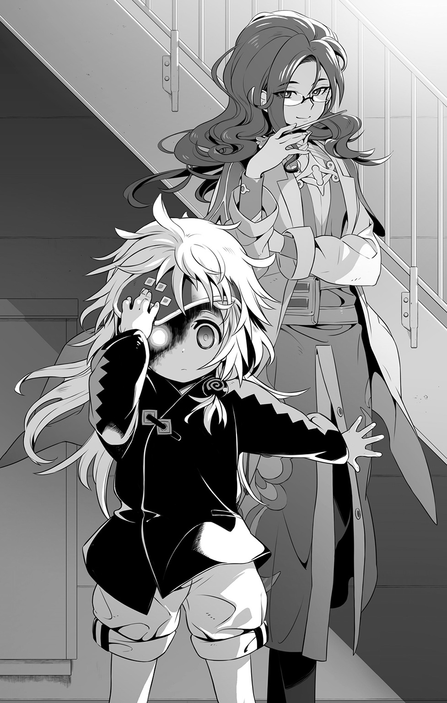
そしてその右目にあたる部分には、明らかに人のものではない、石榴色に染まった眼球。
血の色をした閃光が、そこからほとばしって。
カイロスへと突き刺さった。
◆
「うぐあァ......ッ!!」
「叔父さんっ!?」
手首を破壊光に貫かれて、カイロスは召喚石を取り落とした。
「忘れちゃダメじゃない、カイロス。私はいつもお気に入りのこのコを連れてるって」
駆け寄ってきたデュウの頭を愛しげに撫でながら、くすくすと笑うシャマード。
「移植式魔眼兵器―――まだ、お前はその子を弄び続けているというのか!?」
悲痛な声で抗議するカイロスを、シャマードはせせら笑う。
「デュウは私の大事な作品ですもの。一番の自信作は......誰かさんのせいで、ずうっと今まで行方知れずだったけれど、ね」
愛しげに向けられてくる彼女の視線は、それこそがミコトなのだと告げていた。
「貴女が......やったんですね？」
そうよ、とシャマードは笑った。
「俺の身体におかしな石を埋めこんだのも、デュウの目をあんなにしたのも」
「そうよ。でもね......」
そう続けて、シャマードは残酷に笑った。
「それを手伝ってくれたのは、そこのカイロス。貴方が叔父さんだと思ってた召喚師よ」
あまりに無慈悲な言葉の鞭が、偽りの家族の幻想を、ひとつ残らず打ち砕いた。
「......本当なの？」
すがるような目を向けるミコトに、カイロスは何も言えなかった。
低くうめいて、己の愚かさを思い知るだけだった。
犯した自身の罪の暴露を恐れて、全てを忘却させてしまおうとしたことへの罰だった。
「カイロスは優れた【機界】の召喚師。その【制御籠手】の中枢機関部も、彼の才能なしでは完成しえなかったわ」
ミコトたちの心情などには構うことなく、彼女は秘密を語り続けてゆく。
「彼は愛する私のために、本当によく尽くしてくれたわ！ だから、私も最大級の愛情をもって、彼に応えようとしたの！」
彼女の愛―――それは自らの最高傑作となるであろう創造物に、二人の刻印を刻むこと。
「ねえ、ミコト。貴方の身体は、私と彼の血肉を基礎素材に、合成加工することによって形作られたものなのよ？」
今、シャマードはなんと言ったのか。
「合成、って......」
そうよ、と当たり前のように言って彼女は続ける。
「だって、貴方は【制練石】を宿すための素体―――【製錬石の器】として、私が丹精こめて育んできた作品なんだもの！」
「............」
「胚の段階から培養していかなくちゃあ、最適の器にはならないもの。不確定因子は可能な限り除去しつつ、理想的な人工子宮で育てていくのには本当に苦心したわ」
「はは、ははははは......」
もう、ミコトは笑うしかない。
「なのに......カイロス！ 貴方は私から、大事なこの子をとりあげた!!」
のみならず、処分しようとした。
実験施設ごと徹底的に破壊して、なにもかも灰燼に帰そうとした。
「当たり前だッ！」
もはや、取り繕う術をなくしてしまった男は、負けじと声を張り上げた。
「シャマード、貴女はあまりに高みを望みすぎる！ そこに到達するために必要とあらば、自身を含め、あらゆるもの全てを犠牲にすることを厭わぬなんて......度が過ぎている!!」
そんな彼女についていくことができず、結果としてカイロスは目を覚ましたのだ。
軍の実験という大義名分が、倫理を無視した行為をまかりとおらせる閉鎖世界。
そこから逃れるために。自分自身の過ちを消してしまうために。
「だから私は、全てを壊してしまおうとしたんだ！ 貴女も、この子も、私自身も......まとめてなにもかも葬り去って、なかったことにしようとしたんだッ!!」
けれど、現実はそうならなかった。
「貴方の自暴自棄な暴走は、結果としてその子に予期せぬ能力を開花させたようね」
生き延びようとする本能がもたらしたものだったのだろうか。
幼いミコトは異界の門を開くことによって、この世界へと逃れてきた。
「そして貴方も、あの場から生き延びていた......」
そして、今に至るというわけだ。
◆
つまり結局のところ―――ミコトは思い知らされる。
自分には、まともな家族はいないのだと。
それどころか、まともに生まれてきた生命ですらないのだと。
（ああ、また......ノイズが聞こえる......）
からっぽになって、からからに乾いた心の中に、流れこんでくるものがある。
【制練石の器】としての役目を与えられた、この虚ろな身体に、ごうごうと響き渡るものがある。
それは声だ。
けして届かぬ想いを叫び続けながら、やがて消えゆく、かそけき者たちの声。
（ああ、そうか......こいつらは、俺が何者なのかってことを知っていたんだ......）
いずれの世界にも属することなく、それでもそこに在り続ける存在。
だから、亡魂たちは彼にすがったのだ。
ミコトに力を貸し与えることによって、自身が存在することを証明するために。
虚ろな彼らだけが、ミコトの存在を認めてくれている。
ならば、いっそ―――。
「もう好きにしてくれていいよ......お前たちの、さ」
ずっと無言のままでいた少年が、そう呟いた時。
互いに睨みあっていた召喚師たちは、尋常ではない魔力の爆発の中に吞まれていた。
―――うおォおおオオおおおおおオオオおおおぉオぉぉォォぉぉぉォッ!!
それはもう、かそけき声ではない。
ミコトの口を介して、亡魂たちが一斉に雄叫びをあげているのだ。
怒り、哀しみ、ありとあらゆる無念。
今のミコトは、死せる者たちの声を伝える代弁者だった。
輝き続ける【制練石】が、そんな彼らの想いをひとつに束ねてゆく。
無意識のまま、ミコトはゆっくりと立ち上がると、その手を天に向かってかざした。
（還してあげなくちゃ......この想いだけでも、せめてあるべき場所へ......）
そして、門は開かれる。
残されたのは、破壊された建物ばかりで。
生ける者も、死せる者も、異界の痕跡となるものは全て、消え去ってしまっていた。
転章 ～Linker surprised～
月はただ、皓々と大地を照らす。
万物が宿す魔力元素にして、魂の存在を維持する滋蜜たるマナ。
万物にとって必要不可欠な天からの恵みを、惜しげもなく降り注いでゆく。
山に、海に、森に、砂漠に、凍土に、都市に、町に、村に、廃墟に。
そこに区別はなく、また差別もない。
たとえ、それが彼のような―――いびつな命の持ち主であったとしても。
◆
「うう......っ、うっ、ううう......っ」
見知らぬ森の中で、ミコトは泣いていた。
仰向けに倒れたまま、たまらない哀しみに啼いていた。
（俺は、どこに行けばいいんだよ？）
行き先なんて、まるでわからない。どうでもいいとさえ思う。
（どこに帰ればいいんだよ？）
帰る場所など、それこそない。全部なくしてしまったのだから。
造られた生命―――人に非ざるモノ―――【制練石の器】。
生まれる前から確定していた残酷な事実は、彼の意志によるものではない。
一人の女召喚師によって、いいように作り替えられた結果だ。
（つらい......生きているのが、もう、つらいよ......っ）
このままここを動かずにいれば、死ぬことができるだろうか。
考えるのをやめて、目を閉じていれば、安らかになれるのだろうか。
そんなことを思いながら、ミコトはすすり泣き続けている。
どれくらいそうしていたのか。
「......ッ!?」
不意に頭上に生じた殺気に、ミコトは涙に濡れていた目を見開いた。
滲んだ視界に映ったのは、自分めがけて襲いかかってくる、無数の光の軌跡。
ミコトが操る亡魂の光とは正反対の、眩しくて力強い輝きだった。
「かそけき声よ、我が盾と化せ！」
とっさに招いた亡魂の障壁で受け止めた時、ミコトはそれらが光を纏った武器であることを知った。異なる大きさと形の光り輝く剣たち―――それらは使い手によって振るわれているのではなく、独自の意志で宙を舞って、激しい斬撃を次々と叩きこんでくる。
（なんだよ......やっぱ、死にたくないんじゃんか、俺は......）
自嘲めいた思いをめぐらせながらも、身体は今も生き残るために戦っている。
気づいてしまったら、今さら抗うのをやめることなんかできない。
「くうゥッ！」
防ぐだけではきりがない。そう判断したミコトは逆手に亡魂の鞭を作りあげると、飛来するそれらを叩き落としにかかった。かそけき光とまばゆき光がぶつかるたびに、激しい炸裂音が響き渡り、森の静寂をかき乱してゆく。
やがて、最後の剣が力を失い落下して、たちまち光の粒子となって消えてゆく。
（これも【召喚術】なのか......？）
だとすれば、それを用いた者が近くにいるはずだ。
そして、そいつはミコトを敵視している。
「誰だ!? 出てこいっ!!」
闇雲に叫ぶミコトの声に、月の光を背負った格好で、襲撃者はその姿を現した。
帝国の軍服ではない。もっと軽装で、腰に細身の剣を提げた若い男。
暗がりと距離のせいで、今はそれしか判別できない。
「様子見だったとはいえ......【シャインセイバー】程度じゃ、やっぱり通用しないんだな」
淡々とした物言いで、彼はそう言った。
内にたぎるふつふつとした衝動を、無理に抑えこんでいるかのような声で。
敵意、憎しみ―――あるいは、殺意。
向けられた瞳から放たれる不可視の圧力が、ミコトの肌をぞっと粟立たせた。
「どうして俺を攻撃したんだ!? 俺は、何も―――」
「何もしていないなんて、ふざけたことは絶対に言わせないぞ！ 【制錬者】ッ!!」
怒号の爆発とともに、襲撃者が動いた。
腰の剣を引き抜いて、一気に駆け寄り、斬撃を叩きこんでくる。
繰り出されてきた虹色の軌跡を、かろうじて亡魂の盾で受け止めたミコトは、その尋常ならぬ威力に狼狽した。
（削り取られていってる......）
接触面から伝わってくる剣の魔力が、亡魂を粉砕しているのだ。
このままでは、そう長くはもたずに押し切られてしまう。
「うわあああぁぁぁッ!!」
無我夢中で相手の腹を蹴り飛ばして、その勢いで間合いをとった。
位置が変わったことで逆光ではなくなり、そこでようやく、ミコトは襲撃者の顔を見た。
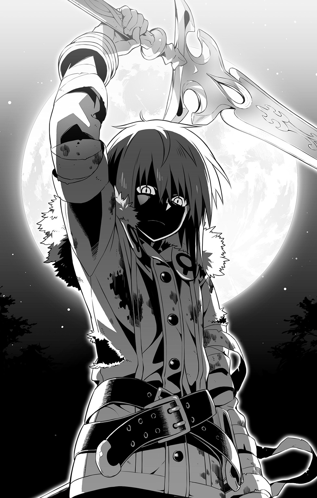
「え!?」
面識―――いや、見覚えのある顔であった。
クラスメイトの女の子が配ってほしいと頼んできた、尋ね人のチラシで見たのだ。
「新堂......先輩......」
新堂勇人―――ミコトの通う那岐宮中央高校の一年先輩であり、神隠しにあったまま行方不明とされていた少年。
その彼が今、ミコトの前に現れた。
虹色に刀身が輝く剣を手に、あからさまな敵意をむき出しにして。
「【誓約者】の名の下に―――お前らのしたことだけは、絶対に許しはしないッ!!」
叫び、かざしたその手から放たれた魔力が夜闇を叩き、異界への門を開く。
【召喚術】―――気づいた時にはすでに、その巨大な門によって招かれた異界の存在が、ミコトめがけて、容赦なく襲いかかってきた。
POSTSCRIPT
なんというか新年早々、自分史上最大に危機的なコンディションでした。
この本が無事に皆さんの手元に届いているとすれば、それは様々な形でフォローをしてくださった関係各位の努力の賜物によるものです。みなさま、ありがとうございます。
改めまして、都月です。前作『受け継がれし炎』のあとがきでこっそり予告したように、今までと比べたら、ちょっとだけ早くお目にかかることができました。
そんな今作『界境の異邦人』は、既刊の三作品とはかなりスタンスが異なっています。
ゲームに付随する外伝的なエピソードではなく、新規書き下ろしの物語なんです。
そもそも「Ｕ：Ｘ」ってなに？―――まずは、そこから説明しないといけません。
本作と同時発売となる『サモンナイト５』は、既報どおり【狂界戦争】＆【響融化】という大異変を経て、それから３００年後の新生リィンバウムを舞台にしています。
４から５の間に何が起こったのか。その時、歴代の勇者たちは何をしていたのか。
具体的なエピソードはあれど、それはゲームとして表現をするには難しい要素が多く、このまま裏設定としてお蔵入りになるんだろうなあ、と都月は覚悟していました。
が―――さいわいにも小説という形で、集英社さまから発表する機会をいただくことができ、なんとか最初のエピソードのお披露目となりました。
そう―――まだまだ続きがあるんです、この「Ｕ：Ｘ」の物語には。
最後まで書ききれるかどうかという以前に、この好機を逃したら旧ナンバリングの総括にあたる物語は二度と書けまいと、思い切って挑戦した次第です。
無論、始めた以上はきっちりと終わらせるつもりです。
新主人公・ミコトを軸に、歴代のキャラたちが徐々に絡んでいく今後の展開は、すでに本文を読み終えた皆さんには、楽しみにしてもらえるのではないかなあと思っています。
ラストで久々の登場となった彼が、どうしていきなりあんな行動に出たのか。
その経緯については、次回のお楽しみということで......。
「Ｕ：Ｘ」は、都月にとっての『サモンナイト』シリーズの総決算です。
今までは語ることができなかった重要な設定も、歴代キャラたちの過去や秘密も。
ひとつの節目を迎える今だからこそ、可能な限りの全てを解禁してゆくつもりです。
暗めで衝撃的な展開があったとしても、大団円となる結末に向けて全力を尽くします。
なので、読者の皆さんもなんとか最後まで語りきれるよう、応援よろしくお願いします。
かそけき声であったとしても、それを束ねて、力に変えさせていただきますので！
とりあえずは―――断章として描いたあのシーンにまで、辿り着けることを目指して。
都月景 拝
■初出
サモンナイト U:X〈ユークロス〉 ―界境の異邦人― 書き下ろし
著者紹介
都月 景
MIYAKOZUKI KEI
文字書きさん。ゲーム『サモンナイト１～５』のシナリオ、及びシリーズ世界観設定を担当。鍼灸師の先生に五十肩と診断されて凹む。
http://miyakoz.jugem.jp/
飯塚武史
IIZUKA TAKESHI
イラストレーター。ゲーム『サモンナイト』シリーズキャラクターデザイン。黒星紅白名義で小説『キノの旅』シリーズ挿絵。アニメ『わんおふ』キャラクター原案等やっております。『サモンナイト５』よろしくね。
和狸ナオ
WATANUKI NAO
イラストレーター。小説の挿絵やゲームのキャラデザイン等をしております。ゲームをするのも好き。メルトルパ贔屓です。『サモンナイト４』ＰＳＰ版にてイベント絵のお手伝いをさせていただきました。
ジャンプジェイブックスDIGITAL
サモンナイト U:X〈ユークロス〉 ―界境の異邦人―
著者 都月 景／飯塚武史／和狸ナオ
© 2015 K.MIYAKOZUKI／T.IIZUKA／N.WATANUKI
２０１５年８月31日発行
この電子書籍は、ジャンプジェイブックス「サモンナイト U:X〈ユークロス〉 ―界境の異邦人―」
２０１３年８月31日発行の第３刷を底本としています。
装丁 亀谷哲也［PRESTO］
編集協力 谷口明弘［由木デザイン］
発行者 鈴木晴彦
発行所 株式会社 集英社
〒１０１－８０５０
東京都千代田区一ツ橋２丁目５番10号
０３－３２３０－６０８０（読者係）
制作所 株式会社デジタルディレクターズ
本作品の全部また一部を無断で複製、転載、改竄、インターネット上に掲載すること、および有償無償に関わらず、本データを第三者に譲渡することを禁じます。なお個人利用の目的であっても、コピーガードを解除しての複製は、法律で禁じられています。